哼 ＄ 霖 mmers ＝ 图 灵 程 序 设 计 丛 书
A Common-Sense Guide to Data Structures and Algorithms
数据结构与算法图解
［美］杰伊·温格罗 © 著 袁志鹏0 译
帣
O 摒弃复杂概念， 非计算机专业读者也能看懂的专业书
0 只需了解简单加减乘除和图表分解便可升级核心编程技能
四 中国工信出版集团髻＄s阳气凇皿巴凸
作者
杰伊·温格罗( Jay Wengrow)
经验丰富的讲师、工程师， — 直 致力千全民编程教育。编程培训公司Actualize、
教育公司AnyoneCan Learn To Code的创始人和CEO。
译者
袁志鹏
程序员， 关注于技术与业务架构设计。
数字版权声明
图灵社区的电子书没有采用专有客户端，您可以在任意设备上，用自己喜欢的浏览器和PDF阅读器进行阅读。
但您购买的电子书仅供您个人使用，未经授权，不得进行传播。
我们愿意相信读者具有这样的良知和觉悟，与我们共同保护知识产权。
如果购买者有侵权行为，我们可能对该用户实施包括但不限于关闭该帐号等维权措施，并可能追究法律责任。
＝图灵程序设计丛书
A Common-Sense Guide to Data Structures and Algorithms
数据结构与算法图解
［美］杰伊·温格罗 © 著 袁志鹏0 译
人民邮电出版社
北京
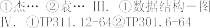
内 容 提 要
本书是数据结构与算法的入门指南，不局限于某种特定语言，略过复杂的数学公式，用通俗易懂的方式针对编程初学者介绍数据结构与算法的基本概念，培养读者编程逻辑。主要内容包括 ：为什么要了解数据结构与算法，大 O 表示法及其代码优化利用，栈、队列等的合理使用，等等。
本书适合编程初学者、非计算机专业出身的程序员等阅读。
印张：10.5
字 数 ：248 千 字 2019 年 4 月 第 1 版
印 数 ：1 — 4 000 册 2019 年 4 月 北 京 第 1 次 印 刷
著作权合同登记号 图字：01-2017-9356号
定价：49.00元
读者服务热线：(010)51095186转600 印装质量热线：(010)81055316反盗版热线：(010)81055315
广告经营许可证：京东工商广登字 20170147 号
版 权 声 明
Copyright © 2017 The Pragmatic Programmers, LLC. Original English language edition, entitled
A Common-Sense Guide to Data Structures and Algorithms.
Simplified Chinese-language edition copyright © 2019 by Posts & Telecom Press. All rights reserved.
本书中文简体字版由 The Pragmatic Programmers, LLC. 授权人民邮电出版社独家出版。未经出版者书面许可，不得以任何方式复制或抄袭本书内容。
版权所有，侵权必究。
前 言 1
前 言
数据结构与算法并不只是抽象的概念，掌握好的话可以写出更高效、运行得更快的代码，这对于如今盛行的网页和移动应用开发来说尤为重要。如果你最近一次使用算法是在大学课堂上或求职面试时，那你应该还没见识到它的真正威力。
这个主题的大多数资料都有一种通病——晦涩难懂。满纸的数学术语，搞得除非你是数学家，不然真不知道作者在说什么。即使是一些声称“简化”过的书，看起来也好像已经认定读者都掌握了高深的数学知识。这就导致了很多人对此主题望而生畏，以为自己的智商不足以理解这些概念。
但事实上，数据结构与算法都是能够从常识推导出来的。数学符号只是一种特定的语言，数学里的一切都是可以用常识去解释的。本书用到的数学知识就只有加减乘除和指数，所有的概念都可以用文字来解释。我还会采用大量的图表以便读者轻松地理解。
一旦掌握了这些知识，你就能写出高效、快速、优雅的代码。你还能权衡各种写法的优劣，并能合理判断适用于给定情况的最优方案。
一些读者可能是因为学校开设了这门课或者为准备技术面试而阅读本书的。本书对计算机科学基础的解释能有效地帮助你达到目的。此外，我还鼓励你正视这些概念在日常编程中的实用价值。为此，我将书中阐述的概念与实际结合，其中的用例都可供大家使用。
目标读者
本书适合以下读者。
有编程基础的初级开发者，想学习一些计算机科学的基本概念，以优化代码，提高编程技能。
自学编程的开发者，没学过正规的计算机科学课程（或者学过但忘光了），现在想利用数据结构与算法使代码更灵活、更具扩展性。
计算机科学专业的学生，希望找到用简洁语言阐述数据结构与算法的资料。这本书很适合作为“经典”教材的补充参考。
开发人员，平时也许没怎么利用过数据结构与算法的知识，希望复习这些概念为下次技术面试做准备。
为了使本书不特定于某种语言，我们的示例代码会用到多种语言，包括 Ruby、Python 和 JavaScript，了解这些语言的话可能会学得更快。不过，这些示例代码都没有严格按照惯用语法来写，避免读者因看不懂某种语言的特有语法而困惑。所以即使不太熟悉某种语言，也还是能跟得上的。
本书内容
本书的主旨就是数据结构与算法，具体内容如下。
第 1 章和第 2 章，解释数据结构和算法是什么，并探索时间复杂度这一判断算法效率的概念。此过程中还会经常提及数组、集合和二分查找。
第 3 章，以老奶奶都听得懂的方式去揭示大 O 记法的本质。因为大 O 记法全书都会用到，所以对这一章的理解非常重要。
第 4 章、第 5 章和第 6 章，进一步探索大 O 记法，并以实例来演示如何利用它来加快代码运行速度。这一路上，我们还会提到各种排序算法，包括冒泡排序、选择排序和插入排序。
第 7 章和第 8 章会再探讨几种数据结构，包括散列表、栈和队列，展示它们对代码速度和可读性的影响，并学会用其解决实际问题。
第 9 章会介绍递归，计算机科学中的核心概念。我们会对其进行分解，考察它在某些问题上
的利用价值。第 10 章会运用递归来实现一些飞快的算法，例如快速排序和快速选择，提升读者的算法开发能力。
第 11 章、第 12 章和第 13 章会探索基于结点的数据结构，包括链表、二叉树和图，并展示它们在各种应用中的完美表现。
最后一章，第 14 章，介绍空间复杂度。当程序运行环境的内存空间不多，或处理的数据量很大时，理解空间复杂度便显得特别重要。
如何阅读本书
你得按顺序从第 1 章开始读起。虽然有些书允许读者单独翻阅某些章节，或跳过某些章节，但这本不是。本书的每一章都假定你已经读过其之前的内容，而且全书内容也确实是精心安排的，使得你在按序阅读的过程中逐步提高认知水平。
此外还有很重要的一点：为了易于大家理解，当介绍一个概念时，我可能不会把它一下子全部展露出来。有时候，理解一个复杂概念的最好方法就是把它拆分成小块，并且在完全明白某一块以后才去着手其他部分。要是我在描述某个术语时说得比较模糊，千万别把它当成一个完整的定义，想看清该术语的全貌，你得读完关于它的所有内容才行。
图灵社区会员 bell13(bell1306027770@gmail.com) 专享 尊重版权
前 言 3

这其实是一种权衡：为了便于理解，我只能把一个概念先极度简化，然后再一步步去完善。当然这就导致了有些句子写得不够彻底、不够学术，或不够精确。但无须担心，因为到最后你一定能对它有一个完整的印象。
在线资源
本书网址是 https://pragprog.com/book/jwdsal。读者可从中获取更多关于本书的信息，或以下面的方式互动：
在论坛跟其他读者和笔者交流；
提交勘误①，改进本书。
各章习题以及示例代码下载见 http://commonsensecomputerscience.com②。
电子书
扫描如下二维码，即可购买本书电子版。
致谢
虽然写书好像只是个人的事情，但这个过程如果没有大家的支持，是不可能完成的。我想感谢所有帮助过我的人。
感谢我的妻子 Rena，谢谢你一直陪伴我，给予我情感上的支持。当我像隐士般久坐写书时，你帮我料理好了一切事情。感谢我可爱的孩子们——Tuvi、Leah 和 Shaya，谢谢你们耐心地等候我完成这本“算发”书。是的，我终于写完了。
感谢我的父母——Howard Wengrow 先生和 Debbie Wengrow 夫人，谢谢你们当初激发了我对计算机编程的兴趣，并鼓励我追逐梦想。你们可能不知道，正是你们作为 9 岁生日礼物送给我的计算机，为我奠定了职业生涯的基础，也为如今这本书埋下了种子。
——————————
① 本书中文版勘误请到 http://ituring.cn/book/2538 查看和提交。——编者注
② 读者也可以到图灵社区本书页面下载示例代码，网址是 http://ituring.cn/book/2538。——编者注
当初我给 Pragmatic 出版公司提交草稿时，我认为自己写得挺不错。但融合了诸位优秀编辑的各种专业意见和要求之后，我发现它比初稿好太多了。感谢总编 Brian MacDonald，你教会了我如何写书，你的见解使得本书的每一章都更为清晰，可以说本书随处可见你的思想印记。感谢我的责任编辑 Susannah Pfalzer，你让我心中显现了成书的模样，把只有理论的草稿变成一本真正能给每一位程序员阅读的书。感谢出版商 Andy Hunt 和 Dave Thomas，谢谢你们信任我的作品，谢谢你们把 Pragmatic 打造成世界上最值得投稿的出版社。
感谢 Colleen McGuckin 这位天才软件开发者以及艺术家，谢谢你把我简陋的图画变成了精美的数码图片。没有这些你以才华和技巧细心描绘的图片，这本书可能一文不值。
让我感到很幸运的是，这本书还经过了不少专家的评审。各位的反馈都非常有益，令本书内容之精确达到了极致。非常感谢你们的贡献：Aaron Kalair、Alberto Boschetti、Alessandro Bahgat、 Arun S. Kumar、Brian Schau、Daivid Morgan、Derek Graham、Frank Ruiz、Ivo Balbaert、Jasdeep Narang、Jason Pike、Javier Collado、Jeff Holland、Jessica Janiuk、Joy McCaffrey、Kenneth Parekh、 Matteo Vaccari、Mohamed Fouad、Neil Hainer、Nigel Lowry、Peter Hampton、Peter Wood、Rod Hilton、Sam Rose、Sean Lindsay、Stephan Kämper、Stephen Orr、Stephen Wolff 和 Tibor Simic。
我还要感谢所有 Actualize 的同事、同学和校友。感谢大家通过各种方式为这个本属于
Actualize 内部的项目做出了贡献。特别感谢 Luke Evans，是他让我萌生了写书的想法。
感谢大家让此书成真。
Jay Wengrow jay@actualize.co 2017 年 8 月
目 录 1
目 录
第 1 章 数 据 结 构 为 何 重 要 1
基 础 数 据 结 构 ： 数 组 1
读 取 3
查 找 5
插 入 7
删 除 8
集 合 ： 一 条 规 则 决 定 性 能 10
1.3 总 结 12
第 2 章 算 法 为 何 重 要 13
有 序 数 组 13
查 找 有 序 数 组 15
二 分 查 找 16
二 分 查 找 与 线 性 查 找 19
2.5 总 结 20
第 3 章 大 O 记 法 21
大 O： 数 步 数 21
常 数 时 间 与 线 性 时 间 22
4.6 线 性 解 决 38
4.7 总 结 39
第 5 章 用或不用大 O 来优化代码 40
选 择 排 序 40
选 择 排 序 实 战 41
选 择 排 序 的 实 现 45
选 择 排 序 的 效 率 46
忽 略 常 数 47
大 O 的 作 用 47
一 个 实 例 48
5.8 总 结 49
第 6 章 乐 观 地 调 优 50
插 入 排 序 50
插 入 排 序 实 战 51
插 入 排 序 的 实 现 55
插 入 排 序 的 效 率 56
平 均 情 况 58
3.3
同一算法，不同场景
...............................24
一 个 实 例 60
6.7 总 结 61
3.4 第 三 种 算 法 24
3.5 对 数 25
3.6 解 释 O(log N) 26
3.7 实 例 27
3.8 总 结 28
第 4 章 运用大 O 来给代码提速 29
冒 泡 排 序 29
冒 泡 排 序 实 战 30
冒 泡 排 序 的 实 现 33
冒 泡 排 序 的 效 率 35
二 次 问 题 36
第 7 章 查 找 迅 速 的 散 列 表 62
探 索 散 列 表 62
用 散 列 函 数 来 做 散 列 63
一 个 好 玩 又 赚 钱 的 同 义 词 典 64
处 理 冲 突 65
找 到 平 衡 68
一 个 实 例 69
7.7 总 结 72
第 8 章 用栈和队列来构造灵巧的代码 73
8.1 栈 73
2 目 录

8.2 栈 实 战 75
8.3 队 列 79
8.4 队 列 实 战 80
8.5 总 结 81
第 9 章 递 归 82
用 递 归 代 替 循 环 82
基 准 情 形 83
阅 读 递 归 代 码 84
计 算 机 眼 中 的 递 归 86
递 归 实 战 87
9.6 总 结 89
第 10 章 飞 快 的 递 归 算 法 90
10.1 分 区 90
快 速 排 序 94
快 速 排 序 的 效 率 98
最 坏 情 况 101
快 速 选 择 103
10.6 总 结 105
第 11 章 基于结点的数据结构 106
11.1 链 表 106
11.2 实 现 一 个 链 表 107
11.3 读 取 108
11.4 查 找 109
11.5 插 入 110
11.6 删 除 112
链 表 实 战 114
双 向 链 表 115
11.9 总 结 118
第 12 章 让一切操作都更快的二叉树 119
12.1 二 叉 树 119
12.2 查 找 121
12.3 插 入 124
12.4 删 除 126
12.5 二 叉 树 实 战 132
12.6 总 结 133
第 13 章 连 接 万 物 的 图 134
13.1 图 134
广 度 优 先 搜 索 136
图 数 据 库 144
13.4 加 权 图 146
13.5 Dijkstra 算 法 148
13.6 总 结 154
第 14 章 对 付 空 间 限 制 155
描 述 空 间 复 杂 度 的 大 O 记 法 155
时 间 和 空 间 之 间 的 权 衡 157
写 在 最 后 的 话 158
图灵社区会员 bell13(bell1306027770@gmail.com) 专享 尊重版权

1.1 基础数据结构：数组 1

1

哪怕只写过几行代码的人都会发现，编程基本上就是在跟数据打交道。计算机程序总是在接收数据、操作数据或返回数据。不管是求两数之和的小程序，还是管理公司的企业级软件，都运行在数据之上。
数据是一个广义的术语，可以指代各种类型的信息，包括最基本的数字和字符串。在经典的 “Hello World!”这个简单程序中，字符串"Hello World!"就是一条数据。事实上，无论是多么复杂的数据，我们都可以将其拆成一堆数字和字符串来看待。
数据结构则是指数据的组织形式。看看以下代码。
x = "Hello!"
y = "How are you" z = "today?"
print x + y + z
这个非常简单的程序把 3 条数据串成了一句连贯的话。如果要描述该程序中的数据结构，我
们会说，这里有 3 个独立的变量，分别引用着 3 个独立的字符串。
但在本书中你将会学到，数据结构不只是用于组织数据，它还极大地影响着代码的运行速度。因为数据结构不同，程序的运行速度可能相差多个数量级。如果你写的程序要处理大量的数据，或者要让数千人同时使用，那么你采用何种数据结构，将决定它是能够运行，还是会因为不堪重负而崩溃。
一旦对各种数据结构有了深刻的理解，并明白它们对程序性能方面的影响，你就能写出快速而优雅的代码，从而使软件运行得快速且流畅。当然，你的编程技能也会更上一层楼。
本章接下来将会分析两种数据结构：数组和集合。它们从表面上看好像差不多，但通过即将介绍的分析工具，你将会观察到它们在性能上的差异。
基础数据结构：数组
数组是计算机科学中最基本的数据结构之一。如果你用过数组，那么应该知道它就是一个含
有数据的列表。它有多种用途，适用于各种场景，下面就举个简单的例子。
一个允许用户创建和使用购物清单的食杂店应用软件，其源代码可能会包含以下的片段。
array = ["apples", "bananas", "cucumbers", "dates", "elderberries"]
这就是一个数组，它刚好包含 5 个字符串，每个代表我会从超市买的食物。此外，我们会用一些名为索引的数字来标识每项数据在数组中的位置。
在大多数的编程语言中，索引是从 0 算起的，因此在这个例子中，"apples"的索引为 0，
"elderberries"的索引为 4，如下所示。
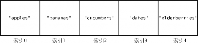
若想了解某个数据结构（例如数组）的性能，得分析程序怎样操作这一数据结构。一般数据结构都有以下 4 种操作（或者说用法）。
读取：查看数据结构中某一位置上的数据。对于数组来说，这意味着查看某个索引所指的数据值。例如，查看索引 2 上有什么食品，就是一种读取。
查找：从数据结构中找出某个数据值的所在。对于数组来说，这意味着检查其是否包含某个值，如果包含，那么还得给出其索引。例如，检查"dates"是否存在于食品清单之中，给出其对应的索引，就是一种查找。
插入：给数据结构增加一个数据值。对于数组来说，这意味着多加一个格子并填入一个值。例如，往购物清单中多加一项"figs"，就是一种插入。
删除：从数据结构中移走一个数据值。对于数组来说，这意味着把数组中的某个数据项移走。例如，把购物清单中的"bananas"移走，就是一种删除。
本章我们将会研究这些操作在数组上的运行速度。
同时，我们也将学到本书的第一个重要理论：操作的速度，并不按时间计算，而是按步数计算。
为什么呢？
因为，你不可能很绝对地说，某项操作要花 5 秒。它在某台机器上要跑 5 秒，但换到一台旧
一点的机器，可能就要多于 5 秒，而换到一台未来的超级计算机，运行时间又将显著缩短。所以，受硬件影响的计时方法，非常不可靠。
然而，若按步数来算，则确切得多。如果 A 操作要 5 步，B 操作要 500 步，那么我们可以很

1
肯定地说，无论是在什么样的硬件上对比，A 都快过 B。因此，衡量步数是分析速度的关键。此外，操作的速度，也常被称为时间复杂度。在本书中，我们会提到速度、时间复杂度、效
率、性能，但它们其实指的都是步数。
事不宜迟，我们现在就来探索上述 4 种操作方式在数组上要花多少步。
读取
首先看看读取，即查看数组中某个索引所指的数据值。
这只要一步就够了，因为计算机本身就有跳到任一索引位置的能力。在["apples", "bananas", "cucumbers", "dates", "elderberries"]的例子中，如果要查看索引 2 的值，那么计算机就会直接跳到索引 2，并告诉你那里有"cucumbers"。
计算机为什么能一步到位呢？原因如下。
计算机的内存可以被看成一堆格子。下图是一片网格，其中有些格子有数据，有些则是空白。
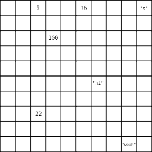
当程序声明一个数组时，它会先划分出一些连续的空格子以备使用。换句话说，如果你想创建一个包含 5 个元素的数组，计算机就会找出 5 个排成一行的空格子，将其当成数组。
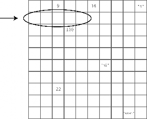
内存中的每个格子都有各自的地址，就像街道地址，例如大街 123 号。不过内存地址就只用一个普通的数字来表示。而且，每个格子的内存地址都比前一个大 1，如下图所示。
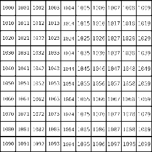
购物清单数组的索引和内存地址，如下图所示。
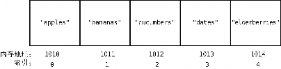

1
计算机之所以在读取数组中某个索引所指的值时，能直接跳到那个位置上，是因为它具备以下条件。
计算机可以一步就跳到任意一个内存地址上。（就好比，要是你知道大街 123 号在哪儿，那么就可以直奔过去。）
数组本身会记有第一个格子的内存地址，因此，计算机知道这个数组的开头在哪里。
数组的索引从 0 算起。
回到刚才的例子，当我们叫计算机读取索引 3 的值时，它会做以下演算。
该数组的索引从 0 算起，其开头的内存地址为 1010。
索引 3 在索引 0 后的第 3 个格子上。
(3) 于是索引 3 的内存地址为 1013，因为 1010 + 3 = 1013。
当计算机一步跳到 1013 时，我们就能获取到"dates"这个值了。
所以，数组的读取是一种非常高效的操作，因为它只要一步就好。一步自然也是最快的速度。这种一步读取任意索引的能力，也是数组好用的原因之一。
如果我们问的不是“索引 3 有什么值”，而是“"dates"在不在数组里”，那么这就需要进行查找操作了。下面我们就来看看。
查找
如前所述，对于数组来说，查找就是检查它是否包含某个值，如果包含，还得给出其索引。那么，我们就试试在数组中查找"dates"要用多少步。
对于我们人来说，可以一眼就看到这个购物清单上的"dates"，并数出它的索引为 3。但是，计算机并没有眼睛，它只能一步一步地检查整个数组。
想要查找数组中是否存在某个值，计算机会先从索引 0 开始，检查其值，如果不匹配，则继续下一个索引，以此类推，直至找到为止。
我们用以下图来演示计算机如何从购物清单中查找"dates"。首先，计算机检查索引 0。
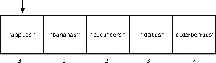
因为索引 0 的值是"apples"，并非我们所要的"dates"，所以计算机跳到下一个索引上。
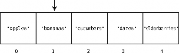
索引 1 也不是"dates"，于是计算机再跳到索引 2。
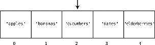
但索引 2 的值仍不匹配，计算机只好再跳到下一格。
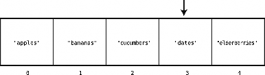
啊，真是千辛万苦，我们找到"dates"了，它就在索引 3 那里。自此，计算机不用再往后跳了，因为结果已经得到。
在这个例子中，因为我们检查了 4 个格子才找到想要的值，所以这次操作总计是 4 步。
这种逐个格子去检查的做法，就是最基本的查找方法——线性查找。第 2 章我们还会学习另一种查找方法。
但在那之前，我们再思考一下，在数组上进行线性查找最多要多少步呢？
如果我们要找的值刚好在数组的最后一个格子里（如本例的 elderberries），那么计算机从头到尾检查每个格子，会在最后才找到。同样，如果我们要找的值并不存在于数组中，那么计算机也还是得查遍每个格子，才能确定这个值不在数组中。
于是，一个 5 格的数组，其线性查找的步数最大值是 5，而对于一个 500 格的数组，则是 500。以此类推，一个 N 格的数组，其线性查找的最多步数是 N（N 可以是任何自然数）。
图灵社区会员 bell13(bell1306027770@gmail.com) 专享 尊重版权

1
可见，无论是多长的数组，查找都比读取要慢，因为读取永远都只需要一步，而查找却可能需要多步。
接下来，我们再研究一下插入，准确地说，是插入一个新值到数组之中。
插入
往数组里插入一个新元素的速度，取决于你想把它插入到哪个位置上。
假设我们想要在购物清单的末尾插入"figs"。那么只需一步。因为之前说过了，计算机知道数组开头的内存地址，也知道数组包含多少个元素，所以可以算出要插入的内存地址，然后一步跳到那里插入就行了。图示如下。
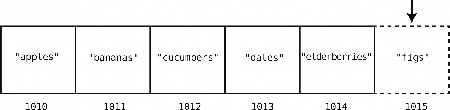
但在数组开头或中间插入，就另当别论了。这种情况下，我们需要移动其他元素以腾出空间，于是得花费额外的步数。
例如往索引 2 处插入"figs"，如下所示。
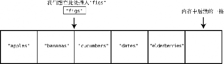
为了达到目的，我们必须先把"cucumbers"、"dates"和"elderberries"往右移，以便空出索引 2。而这也不是一步就能移好，因为我们首先要将"elderberries"右移一格，以空出位置给"dates"，然后再将"dates"右移，以空出位置给"cucumbers"，下面来演示这个过程。
第 1 步："elderberries"右移。
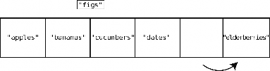
第 2 步："date"右移。
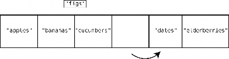
第 3 步："cucembers"右移。
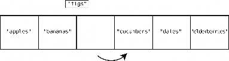
第 4 步：至此，可以在索引 2 处插入"figs"了。
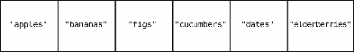
如上所示，整个过程有 4 步，开始 3 步都是在移动数据，剩下 1 步才是真正的插入数据。最低效（花费最多步数）的插入是插入在数组开头。因为这时候需要把数组所有的元素都往
右移。
于是，一个含有 N 个元素的数组，其插入数据的最坏情况会花费 N + 1 步。即插入在数组开头，导致 N 次移动，加上一次插入。
最后要说的“删除”，则相当于插入的反向操作。
删除
数组的删除就是消掉其某个索引上的数据。

1
我们找回最开始的那个数组，删除索引 2 上的值，即"cucumbers"。
第 1 步：删除"cucumbers"。
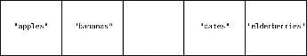
虽然删除"cucumbers"好像一步就搞定了，但这带来了新的问题：数组中间空出了一个格子。因为数组中间是不应该有空格的，所以，我们得把"dates"和"elderberries"往左移。
第 2 步：将"dates"左移。
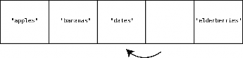
第 3 步：将"elderberries"左移。
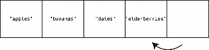
结果，整个删除操作花了 3 步。其中第 1 步是真正的删除，剩下的 2 步是移数据去填空格。
所以，删除本身只需要 1 步，但接下来需要额外的步骤将数据左移以填补删除所带来的空隙。
跟插入一样，删除的最坏情况就是删掉数组的第一个元素。因为数组不允许空元素，当索引
0 空出，那么剩下的所有元素都要往左移去填空。
对于含有 5 个元素的数组，删除第一个元素需要 1 步，左移剩余的元素需要 4 步。而对于 500
个元素的数组，删除第一个元素需要 1 步，左移剩余的元素需要 499 步。可以推出，对于含有 N
个元素的数组，删除操作最多需要 N 步。
既然学会了如何分析数据结构的时间复杂度，那就可以开始探索各种数据结构的性能差异了。了解这些非常重要，因为数据结构的性能差异会直接造成程序的性能差异。
下一个要介绍的数据结构是集合，它跟数组似乎很像，甚至让人以为就是同一种东西。然而，我们将会看到它跟数组在性能上是有区别的。
集合：一条规则决定性能
来看看另一种数据结构：集合。它是一种不允许元素重复的数据结构。
其实集合是有不同形式的，但现在我们只讨论基于数组的那种。这种集合跟数组差不多，都是一个普通的元素列表，唯一的区别在于，集合不允许插入重复的值。
要是你想往集合["a", "b", "c"]再插入一个"b"，计算机是不会允许的，因为集合中已经有"b"了。
集合就是用于确保数据不重复。
如果你要创建一个线上电话本，你应该不会希望相同的号码出现两次吧。事实上，现在我的本地电话本就有这种状况：我家的电话号码不单指向我这里，还错误地指向了一个叫 Zirkind 的家庭（这是真的）。接听那些要找 Zirkind 的电话或留言真的挺烦的。
不过，估计 Zirkind 一家也在纳闷为什么总是接不到电话。而当我想要打电话告诉 Zirkind 号码错了的时候，我妻子就会去接电话了，因为我拨的就是我家号码（好吧，这是开玩笑）。如果这个电话本程序用集合来处理，那就不会搞出这种麻烦了。
总之，集合就是一个带有“不允许重复”这种简单限制的数组。而该限制也导致它在 4 种基
本操作中有 1 种与数组性能不同。
下面就来分析读取、查找、插入和删除在基于数组的集合上表现如何。
集合的读取跟数组的读取完全一样，计算机只要一步就能获取指定索引上的值。如之前解释的那样，这是因为计算机知道集合开头的内存地址，所以能够一步跳到集合的任意索引。
集合的查找也跟数组的查找无异，需要 N 步去检查某个值在不在集合当中。删除也是，总共需要 N 步去删除和左移填空。
但插入就不同了。先看看在集合末尾的插入。对于数组来说，末尾插入是最高效的，它只需要 1 步。
而对于集合，计算机得先确定要插入的值不存在于其中——因为这就是集合：不允许重复值。于是每次插入都要先来一次查找。
假设我们的购物清单是一个集合——用集合还是不错的，毕竟你不会想买重复的东西。如果当前集合是["apples", "bananas", "cucumbers", "dates", "elderberries"]，然后想插入"figs"，那么就需要做一次如下的查找。
第 1 步：检查索引 0 有没有"figs"。

1
集合：一条规则决定性能 11

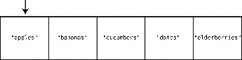
没有，不过说不定其他索引会有。为了在真正插入前确保它不存在于任何索引上，我们继续。第 2 步：检查索引 1。
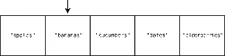
第 3 步：检查索引 2。
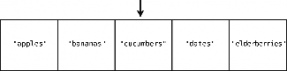
第 4 步：检查索引 3。
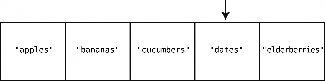
第 5 步：检查索引 4。
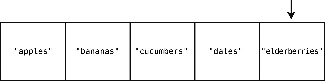
直到检查完整个集合，才能确定插入"figs"是安全的。于是，到最后一步。第 6 步：在集合末尾插入"figs"。
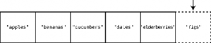
在集合的末尾插入也属于最好的情况，不过对于一个含有 5 个元素的集合，你仍然要花 6 步。
因为，在最终插入的那一步之前，要把 5 个元素都检查一遍。
换句话说，在 N 个元素的集合中进行插入的最好情况需要 N + 1 步——N 步去确认被插入的值不在集合中，加上最后插入的 1 步。
最坏的情况则是在集合的开头插入，这时计算机得检查 N 个格子以保证集合不包含那个值，然后用 N 步来把所有值右移，最后再用 1 步来插入新值。总共 2N + 1 步。
这是否意味着因为它的插入比一般的数组慢，所以就不要用了呢？当然不是。在需要保证数据不重复的场景中，集合是非常重要的（真希望有一天我的电话本能恢复正常）。但如果没有这种需求，那么选择插入比集合快的数组会更好一些。具体哪种数据结构更合适，当然要根据你的实际应用场景而定。
总结
理解数据结构的性能，关键在于分析操作所需的步数。采取哪种数据结构将决定你的程序是能够承受住压力，还是崩溃。本章特别讲解了如何通过步数分析来判断某种应用该选择数组还是集合。
不同的数据结构有不同的时间复杂度，类似地，不同的算法（即使是用在同一种数据结构上）也有不同的时间复杂度。既然我们已经学会了时间复杂度的分析方法，那么现在就可以用它来对比各种算法，找出能够发挥代码极限性能的那个。这正是下一章所要讲的。

2.1 有序数组 13

2

上一章我们学习了两种数据结构，并明白了选择合适的数据结构将会显著地提升代码的性能。即使是像数组和集合这样相似的两种数据结构，在高负荷的运行环境下也会表现得天差地别。
在本章，你将会发现，就算数据结构确定了，代码的速度也还会受另一重要因素影响，那就是算法。
算法这个词听起来很深奥，其实不然。它只是解决某个问题的一套流程。准备一碗麦片的流程也可以说是一种算法，它包含以下 4 步（对我来说是 4 步吧）。
拿个碗。
把麦片倒进碗里。
把牛奶倒进碗里。
把勺子放到碗里。
在计算机的世界里，算法则是指某项操作的过程。上一章我们研究了 4 种主要操作，包括读取、查找、插入和删除。这一章我们还是会经常提到它们，而且一种操作可能会有不止一种做法。也就是说，一种操作会有多种算法的实现。
我们很快会看到不同的算法能使代码变快或者变慢——高负载时甚至慢到停止工作。不过，现在先来认识一种新的数据结构：有序数组。它的查找算法就不止一种，我们将会学习如何选出正确的那种。
有序数组
有序数组跟上一章讨论的数组几乎一样，唯一区别就是有序数组要求其值总是保持有序（你猜对了）。即每次插入新值时，它会被插入到适当的位置，使整个数组的值仍然按顺序排列。常规的数组则并不考虑是否有序，直接把值加到末尾也没问题。
以数组[3,17,80,202]为例。
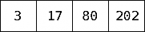
假设这是个常规的数组，你准备将 75 插入，那就可以把它放到尾端，如下所示。
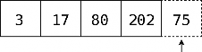
如上一章所述，计算机只要 1 步就能完成这种操作。
但如果这是一个有序数组，你就必须要找到一个适当的位置，使插入 75 之后整个数组依然有序。
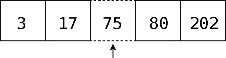
做起来可不像说的那么简单。整个过程不可能一步完成，因为计算机需要先找出那个适当的位置，然后将其及以后的值右移来腾出空间给 75。下面就来介绍分解的步骤。
先回顾一下原始的数组。
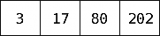
第 1 步：检查索引 0 的值，看 75 应该在它的左边还是右边。
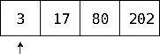
因为 75 大于 3，所以 75 应该在它右边的某个位置。而具体的位置，目前还是不能确定，于是，再检查下一个格子。
第 2 步：检查下一格的值。
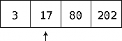
查找有序数组 15

因为 75 大于 17，所以继续。
2
第 3 步：检查下一格的值。
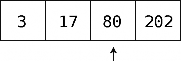
这次是 80，大于 75。因为这是第一次遇到大于 75 的值，可想而知，必须把 75 放在 80 的左侧以使整个数组维持有序。但要在这里插入 75，还得先将它的位置空出来。
第 4 步：将最后一个值右移。
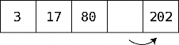
第 5 步：将倒数第二个值右移。
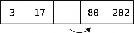
第 6 步：终于可以把 75 插入到正确的位置上了。
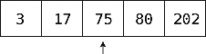
可以看到，往有序数组中插入新值，需要先做一次查找以确定插入的位置。这是它跟常规数组的关键区别（在性能方面）之一。
虽然插入的性能比不上常规数组，但在查找方面，有序数组却有着特殊优势。
查找有序数组
上一章介绍了常规数组的查找方式：从左至右，逐个格子检查，直至找到。这种方式称为线性查找。
接下来看看有序数组的线性查找跟常规数组有何不同。
设一个常规数组[17,3,75,202,80]，如果想在里面查找 22（其实并不存在），那你就得逐
个元素去检查，因为 22 可能在任何一个位置上。要想在到达末尾之前结束检查，那么所找的值必须在末尾之前出现。
然而对于有序数组来说，即便它不包含要找的值，我们也可以提早停止查找。假设要在有序数组[3,17,75,80,202]里查找 22，我们可以在查到 75 的时候就结束，因为 22 不可能出现在 75的右边。
以下是用 Ruby 语言实现的有序数组线性查找。
def linear_search(array, value)
# 遍历数组的每一个元素
array.each do |element|
# 如果这个元素等于我们要找的值，则将其返回
if element == value
return value
# 如果这个值大于我们要找的值，则提早退出循环
elsif element > value
break end
end
# 如果没找到，则返回空值
return nil end
因此，有序数组的线性查找大多数情况下都会快于常规数组。除非要找的值是最后那个，或者比最后的值还大，那就只能一直查到最后了。
只看到这里的话，可能你还是不会觉得两种数组在性能上有什么巨大区别。这是因为我们还没释放算法的潜能。这是接下来就要做的。
至今我们提到的查找有序数组的方法就只有线性查找。但其实，线性查找只不过是查找算法的其中一种而已。这种逐个格子检查直至找到为止的过程，并不是查找的唯一途径。
有序数组相比常规数组的一大优势就是它可以使用另一种查找算法。此种算法名为二分查找，它比线性查找要快得多。
二分查找
你小时候或许玩过这样一种猜谜游戏（或者现在跟你的小孩玩过）：我心里想着一个 1 到 100
之间的数字，在你猜出它之前，我会提示你的答案应该大一点还是小一点。
你应该凭直觉就知道这个游戏的策略。一开始你会先猜处于中间的 50，而不是 1。为什么？因为不管我接下来告诉你更大或是更小，你都能排除掉一半的错误答案！
二分查找 17


2
如果你说 50，然后我提示要再大一点，那么你应该会选 75，以排除掉剩余数字的一半。如果在 75 之后我告诉你要小一点，你就会选 62 或 63。总之，一直都猜中间值，就能不断地缩小一半的范围。
下面来演示这个过程，但仅以 1 到 10 为例。
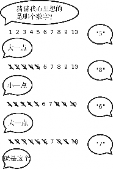
这就是二分查找的通俗描述。
有序数组相比常规数组的一大优势就是它除了可以用线性查找，还可以用二分查找。常规数组因为无序，所以不可能运用二分查找。
为了看出它的实际效果，假设有一个包含 9 个元素的有序数组。计算机不知道每个格子的值，如下图所示。
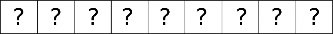
然后，用二分查找来找出 7，过程如下。
第 1 步：检查正中间的格子。因为数组的长度是已知的，将长度除以 2，我们就可以跳到确切的内存地址上，然后检查其值。
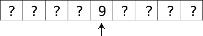
值为 9，可推测出 7 应该在其左边的某个格子里。而且，这下我们也排除了一半的格子，即 9 右
边的那些（以及 9 本身）。
第 2 步：检查 9 左边的那些格子的最中间那个。因为这里最中间有两个，我们就随便挑了左边的。
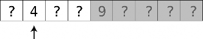
它的值为 4，那么 7 就在它的右边了。由此 4 左边的格子也就排除了。
第 3 步：还剩两个格子里可能有 7。我们随便挑个左边的。
第 4 步：就剩一个了。（如果还没有，那就说明这个有序数组里真的没有 7。）
终于找到 7 了，总共 4 步。是的，这个有序数组要是用线性查找也会是 4 步，但稍后你就会见识到二分查找的强大。
以下是二分查找的 Ruby 实现。
def binary_search(array, value)
# 首先，设定下界和上界，以限定所查之值可能出现的区域。
# 在开始时，以数组的第一个元素为下界，以最后一个元素为上界
lower_bound = 0
upper_bound = array.length - 1 # 循环检查上界和下界之间的最中间的元素
二分查找与线性查找 19

while lower_bound <= upper_bound do
# 如此找出最中间的格子之索引

2
#（无须担心商是不是整数，因为 Ruby 总是把两个整数相除所得的小数部分去掉）
midpoint = (upper_bound + lower_bound) / 2 # 获取该中间格子的值
value_at_midpoint = array[midpoint] # 如果该值正是我们想查的，那就完事了。
# 否则，看你是要往上找还是往下找，来调整下界或上界
if value < value_at_midpoint upper_bound = midpoint - 1
elsif value > value_at_midpoint
lower_bound = midpoint + 1
elsif value == value_at_midpoint
return midpoint
end end
# 当下界超越上界，便知数组里并没有我们所要找的值
return nil end
二分查找与线性查找
对于长度太小的有序数组，二分查找并不比线性查找好多少。但我们来看看更大的数组。对于拥有 100 个值的数组来说，两种查找需要的最多步数如下所示。
线性查找：100 步
二分查找：7 步
用线性查找的话，如果要找的值在最后一个格子，或者比最后一格的值还大，那么就得查遍每个格子。有 100 个格子，就是 100 步。
二分查找则会在每次猜测后排除掉一半的元素。100 个格子，在第一次猜测后，便排除了
50 个。
再换个角度来看，你就会发现一个规律。
长度为 3 的有序数组，二分查找所需的最多步数是 2。
若长度翻倍，变成 7（以奇数为例会方便选择正中间的格子，于是我们把长度翻倍后又增加了一个数），则最多步数会是 3。
若再翻倍（并加 1），变成 15 个元素，那么最多步数会是 4。
规律就是，每次有序数组长度乘以 2，二分查找所需的最多步数只会加 1。这真是出奇地高效。
相反，在 3 个元素的数组上线性查找，最多要 3 步，7 个元素就最多要 7 步，100 个元素就
最多要 100 步，即元素有多少，最多步数就是多少。数组长度翻倍，线性查找的最多步数就会翻
倍，而二分查找则只是增加 1 步。
这种规律可以用下图来展示。
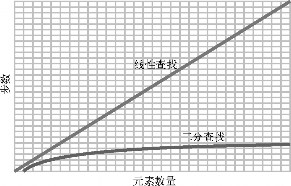
如果数组变得更大，比如说 10 000 个元素，那么线性查找最多会有 10 000 步，而二分查找
最多只有 14 步。再增大到 1 000 000 个元素，则线性查找最多有 1 000 000 步，二分查找最多只
有 20 步。
不过还要记住，有序数组并不是所有操作都比常规数组要快。如你所见，它的插入就相对要慢。衡量起来，虽然插入是慢了一些，但查找却快了许多。还是那句话，你得根据应用场景来判断哪种更合适。
总结
关于算法的内容就是这些。很多时候，计算一样东西并不只有一种方法，换种算法可能会极大地影响程序的性能。
同时你还应意识到，世界上并没有哪种适用于所有场景的数据结构或者算法。你不能因为有序数组能使用二分查找就永远只用有序数组。在经常插入而很少查找的情况下，显然插入迅速的常规数组会是更好的选择。
如之前所述，比较算法的方式就是比较各自的步数。
下一章，我们将会学习如何规范地描述数据结构和算法的时间复杂度。有了这种通用的表达方式，就能更容易地观察出哪种算法符合我们的实际需求。

3.1 大 O：数步数 21

3
从之前的章节中我们了解到，影响算法性能的主要因素是其所需的步数。
然而，我们不能简单地把一个算法记为“22 步算法”，把另一个算法记为“400 步算法”，因为一个算法的步数并不是固定的。以线性查找为例，它的步数等于数组的元素数量。如果数组有 22 个元素，线性查找就需要 22 步；如果数组有 400 个元素，线性查找就需要 400 步。
量化线性查找效率的更准确的方式应该是：对于具有 N 个元素的数组，线性查找最多需要 N
步。当然，这听起来很啰唆。
为了方便表达数据结构和算法的时间复杂度，计算机科学家从数学界借鉴了一种简洁又通用的方式，那就是大 O 记法。这种规范化语言使得我们可以轻松地指出一个算法的性能级别，也令学术交流变得简单。
掌握了大 O 记法，就掌握了算法分析的专业工具。
虽说大 O 记法源于数学领域，但接下来我们不会讲解任何数学术语，只介绍跟计算机科学相关的部分。并且，我们会循序渐进，先用简单的词汇来解释它，然后在接下来的三章中将其构建完善。大 O 记法不复杂，但我们还是分成了几个章节来细述，使其更容易理解。
大 O：数步数
为了统一描述，大 O 不关注算法所用的时间，只关注其所用的步数。
第 1 章介绍过，数组不论多大，读取都只需 1 步。用大 O 记法来表示，就是：
O(1)
很多人将其读作“大 O1”，也有些人读成“1 数量级”。我一般读成“O1”。虽然大 O 记法有很多种读法，但写法只有一种。
O(1)意味着一种算法无论面对多大的数据量，其步数总是相同的。就像无论数组有多大，读取元素都只要 1 步。这 1 步在旧机器上也许要花 20 分钟，而用现代的硬件却只要 1 纳秒。但这
两种情况下，读取数组都是 1 步。
其他也属于 O(1)的操作还包括数组末尾的插入与删除。之前已证明，无论数组有多大，这两种操作都只需 1 步，所以它们的效率都是 O(1)。
下面研究一下大 O 记法如何描述线性查找的效率。回想一下，线性查找在数组上要逐个检查每个格子。在最坏情况下，线性查找所需的步数等于格子数。即如前所述：对于 N 个元素的数组，线性查找需要花 N 步。
用大 O 记法来表示，即为：
O(N)
我将其读作“O N”。
数学解释
前面提过，本书要采用一种易于理解的方式来讨论大 O。当然这不是唯一的方式，如果你去上传统的大学算法课程，老师很可能从数学角度来介绍大 O。因为大 O 本就是一个数学概念，所以人们经常用数学词汇介绍它，比如说“大 O 记法可用来描述一个函数的增长率的上限”，或者“如果函数 g(x)的增长速度不比函数 f(x)快，那么就称 g 属于 O( f )”。大家数学背景不同，所以这些说法可能对你有意义，也可能没什么帮助。有了这本书，你不需要了解太多数学知识，就可以理解大 O。
如果你想深入研究大O 背后的数学理论，可参考Thomas H. Cormen、Charles E. Leiserson、Ronald L. Rivest 和 Clifford Stein 所著的《算法导论》，里面有完整的解析。此外，Justin Abrahms 在他的文章中也对大 O 做了不错的定义，维基百科上也有大量的数学解释。
若用大 O 记法来描述一种处理一个 N 元素的数组需花 N 步的算法的效率，很简单，就是 O(N)。
常数时间与线性时间
从 O(N)可以看出，大 O 记法不只是用固定的数字（如 22、440）来表示算法的步数，而是基于要处理的数据量来描述算法所需的步数。或者说，大 O 解答的是这样的问题：当数据增长时，步数如何变化？
O(N)算法所需的步数等于数据量，意思是当数组增加一个元素时，O(N)算法就要增加 1 步。而 O(1)算法无论面对多大的数组，其步数都不变。
下图展示了这两种时间复杂度。
图灵社区会员 bell13(bell1306027770@gmail.com) 专享 尊重版权
常数时间与线性时间 23

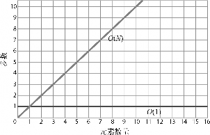

3
从图中可以看出，O(N)呈现为一条对角线。当数据增加一个单位时，算法也随之增加一步。也就是说，数据越多，算法所需的步数就越多。O(N)也被称为线性时间。
相比之下，O(1)则为一条水平线，因为不管数据量是多少，算法的步数都恒定。所以，O(1)也被称为常数时间。
因为大 O 主要关注的是数据量变动时算法的性能变化，所以你会发现，即使一个算法的恒定步数不是 1，它也可以被归类为 O(1)。假设有个算法不能 1 步完成，而要花 3 步，但无论数据量多大，它都需要 3 步。如果用图形来展示，该算法应该是这样：
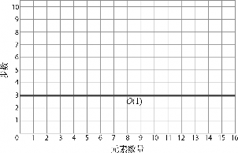
因为不管数据量怎样变化，算法的步数都恒定，所以这也是常数时间，也可以表示为 O(1)。虽然从技术上来说它需要 3 步而不是 1 步，但大 O 记法并不纠结于此。简单来说，O(1)就是用来表示所有数据增长但步数不变的算法。
如果说只要步数恒定，3 步的算法也属于 O(1)，那么恒为 100 步的算法也属于 O(1)。虽然
100 步的算法在效率上不如 1 步的算法，但如果它的步数是恒定的，那么它还是比 O(N)更高效。
为什么呢？如图所示。
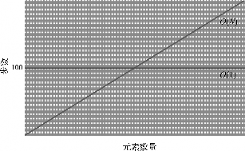
对于元素量少于 100 的数组，O(N)算法的步数会少于 100 步的 O(1)算法。当元素刚好为 100
个时，两者的步数同为 100。而一旦超过 100 个元素，注意，O(N)的步数就多于 O(1)。
因为数据量从这个临界点开始，直至无限，O(N)都会比 O(1)花更多步数，所以总体上来说， O(N)比 O(1)低效。
这对于步数恒为 1 000 000 的 O(1)算法来说也是一样的。当数据量一直增长时，一定会到达一个临界点，使得 O(N)算法比 O(1)算法低效，而且这种落后的状况会持续到数据量无限大的时候。
同一算法，不同场景
之前的章节我们提到，线性查找并不总是 O(N)的。当要找的元素在数组末尾，那确实是 O(N)。但如果它在数组开头，1 步就能找到的话，那么技术上来说应该是 O(1)。所以概括来说，线性查找的最好情况是 O(1)，最坏情况是 O(N)。
虽然大 O 可以用来表示给定算法的最好和最坏的情景，但若无特别说明，大 O 记法一般都是指最坏情况。因此尽管线性查找有 O(1)的最好情况，但大多数资料还是把它归类为 O(N)。
这种悲观主义其实是很有用的：知道各种算法会差到什么程度，能使我们做好最坏打算，以选出最适合的算法。
第三种算法
上一章我们学到：在同一个有序数组里，二分查找比线性查找要快。下面就来看看如何用大
O 记法描述二分查找。
它不能写成 O(1)，因为二分查找的步数会随着数据量的增长而增长。它也不能写成 O(N)，因为步数比元素数量要少得多，正如之前我们看到的，包含 100 个元素的数组只要 7 步就能找完。
看来，二分查找的时间复杂度介于 O(1)和 O(N)之间。
图灵社区会员 bell13(bell1306027770@gmail.com) 专享 尊重版权
对 数 25
好了，二分查找的大 O 记法是：
O(log N)
我将其读作“O log N”。归于此类的算法，它们的时间复杂度都叫作对数时间。

3
简单来说，O(log N)意味着该算法当数据量翻倍时，步数加 1。这确实符合之前章节我们所介绍的二分查找。下面我们先整理一下至今学到的东西，之后马上就解释采取这种记法的原因。
到这里我们所提过的 3 种时间复杂度，按照效率由高到低来排序的话，会是这样：
O(1)
O(log N) O(N)
下图为它们三者的对比。
注意 O(log N)曲线的微弯，使其效率略差于 O(1)，却远胜于 O(N)。
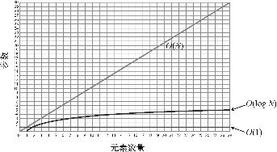
若想理解这种时间复杂度为什么是 O(log N)，我们得先学习一下对数。如果你对这个数学概念已经很熟悉了，那么可以跳过下一节。
对数
让我们来研究下为什么二分查找之类的算法被记为 O(log N)，到底 log 是什么？
log 即是对数（logarithm）。注意，虽然它的英文看起来和读起来都跟算法（algorithm）很像，但它与算法无关。
对数是指数的反函数，所以我们先回顾一下指数。
23 等于：
2 × 2 × 2
结果为 8。
log2 8 则将上述计算反过来，它意思是：要把 2 乘以自身多少次，才能得到 8。因为需要 3
次，所以，log2 8 = 3。
再来一个例子。
26 可以解释为：
2 × 2 × 2 × 2 × 2 × 2 = 64
因为 2 要乘以自身 6 次才得到 64，所以，log2 64 = 6。
不过以上都是教科书式的定义，我打算换一种更形象和更易于理解的方式来解释。
log2 8 可以表达为：将 8 不断地除以 2 直到 1，需要多少个 2。
8 / 2 / 2 / 2 = 1（注：按照从左到右的顺序计算。）
或者说，将 8 不断地除以 2，要除多少次才能到 1 呢？答案是 3，所以，log2 8 = 3。类似地，log2 64 可以解释为：将 64 除以 2 多少次，才能得到 1。
64 / 2 / 2 / 2 / 2 / 2 / 2 = 1
因为这里有 6 个 2，所以，log2 64 = 6。
现在你应该明白对数是怎么回事了，那么 O(log N)就很好懂了。
解释 O(log N)
现在回到大 O 记法。当我们说 O(log N)时，其实指的是 O(log2 N)，不过为了方便就省略了 2
而已。
你应该还记得 O(N)代表算法处理 N 个元素需要 N 步。如果元素有 8 个，那么这种算法就需要 8 步。
O(log N)则代表算法处理 N 个元素需要 log2 N 步。如果有 8 个元素，那么这种算法需要 3 步，因为 log2 8 = 3。
从另一个角度来看，如果要把 8 个元素不断地分成两半，那么得拆分 3 次才能拆到只剩 1 个元素。
这正是二分查找所干的事情。它就是不断地将数组拆成两半，直至范围缩小到只剩你要找的那个元素。
实 例 27


3
简单来说，O(log N)算法的步数等于二分数据直至元素剩余 1 个的次数。下表是 O(N)和 O(log N)的效率对比。
N 个元素 | O(N) | O(log N) |
8 | 8 | 3 |
16 | 16 | 4 |
32 | 32 | 5 |
64 | 64 | 6 |
128 | 128 | 7 |
256 | 256 | 8 |
512 | 512 | 9 |
1024 | 1024 | 10 |
每次数据量翻倍时，O(N)算法的步数也跟着翻倍，O(log N)算法却只需加 1。
后面的章节我们还会学到除了这 3 种时间复杂度以外的算法。不过现在，我们还是先把已经学会的实践到日常的代码中。
实例
以下是打印列表所有元素的典型 Python 代码。
things = ['apples', 'baboons', 'cribs', 'dulcimers']
for thing in things:
print "Here's a thing: %s" % thing
它的效率要怎么用大 O 记法来表示呢？
首先，这是一个算法的例子。虽然它并没有多么厉害，但不管一段代码做什么事情，技术上来说它都是一个算法——因为它是解决某种问题的一个独特的过程。在此例中，问题是打印列表的所有元素，而算法是在 for 循环中使用 print。
为了得出它的大 O 记法，我们需要分析这个算法的步数。这段代码的主要部分——for 循环会走 4 步，因为列表总共有 4 个元素。
然而，此过程不一定总是这样。如果列表有 10 个元素，那么 for 循环就会是 10 步。因为这里 for 的步数等于元素数量，所以整个算法的效率是 O(N)。
再来一个例子，这是大家都知道的最基础的代码。
print 'Hello world!'
它永远都只会是 1 步，所以是 O(1)。
以下的例子是代码判断一个数字是否为质数。
def is_prime(number):
for i in range(2, number):
if number % i == 0:
return False
return True
它接受一个参数，名为 number，然后用一个 for 循环来测试 number 除以 2 到 number 之间的数，看是否有余数。如果没有，则 number 非质数，可以马上返回 False。但如果一直测到 number除以 number 的前一个数都有余数，那么它就是一个质数，最后会返回 True。
此算法的效率为 O(N)。它不以数组为参数，而是用一个数字。如果 is_prime 传入的是 7，那么 for 循环就要差不多走 7 次（准确来说是 5 步，因为是从 2 开始，直到该数字的前一个数）。如果是 101，那就循环差不多 101 次。因为步数与参数的大小一致，所以它的效率是 O(N)。
总结
学会大 O 记法，我们在比较算法时就有了一致的参考系。有了它，我们就可以在现实场景中测量各种数据结构和算法，写出更快的代码，更轻松地应对高负荷的环境。
下一章会用一个实际的例子，让你看到大 O 记法如何帮助我们显著地提高代码的性能。

4.1 冒泡排序 29

4

大 O 记法能客观地衡量各种算法的时间复杂度，是比较算法的利器。我们也试过用它来对比二分查找和线性查找的步数差异，发现二分查找的步数为 O(log N)，比线性查找的 O(N)快得多。
然而，写代码的时候并不总有这样明确的二选一，更多时候你可能就直接采用首先想到的那种算法了。不过有了大 O 的话，你就可以与其他常用的算法比较，然后问自己：“我的算法跟它们相比，是快还是慢？”
如果你通过大 O 发现自己的算法比其他的要慢，你就应该退一步，好好想想怎样优化它，才能使它变成更快的那种大 O。虽然并不总有提升空间，但在确定编码之前多加考虑还是好的。
本章我们会写些代码来解决一个实际问题，并且会用大 O 来测量算法的性能，然后看看是否能对算法做些修改，使得性能提升。（剧透：能。）
冒泡排序
但在讨论实际问题之前，先来学习一种新的时间复杂度。我们会从计算机科学的经典算法之一开始阐述。
排序算法是计算机科学中被广泛研究的一个课题。历时多年，它发展出了数十种算法，这些算法都着眼于一个问题：
如何将一个无序的数字数组整理成升序？
你会在本章以及下一章看到这些算法。起初我们会学习一些“简单排序”，它们很好懂，但效率不如其他排序算法。
冒泡排序是一种很基本的排序算法，步骤如下。
指向数组中两个相邻的元素（最开始是数组的头两个元素），比较它们的大小。
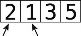
如果它们的顺序错了（即左边的值大于右边），就互换位置。
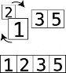
如果顺序已经是正确的，那这一步就什么都不用做。
将两个指针右移一格。
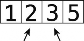
重复第(1)步和第(2)步，直至指针到达数组末尾。
重复第(1)至(3)步，直至从头到尾都无须再做交换，这时数组就排好序了。
这里被重复的第(1)至(3)步是一个轮回，也就是说，这个算法的主要步骤被“轮回”执行，直到整个数组的顺序正确。
冒泡排序实战
下面来举一个完整的例子。假设要对[4, 2, 7, 1, 3]进行排序。它现在是无序的，我们的目标是产生一个包含相同元素、升序的数组。
开始第 1 次轮回。
数组一开始如下图所示。
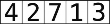
第 1 步：首先，比较 4 和 2。如图可见它们的顺序是错的。
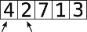
第 2 步：交换它们的位置。
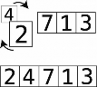
冒泡排序实战 31

第 3 步：比较 4 和 7。

4
它们的顺序正确，所以不用做什么交换。第 4 步：比较 7 和 1。
第 5 步：顺序错误，于是进行交换。
第 6 步：比较 7 和 3。
第 7 步：顺序错误，于是进行交换。
因为我们一直把较大的元素换到右边，所以现在最右侧的 7 正处于其正确位置上。我将那个格子用虚线圈起来了。
这也正是此种算法名为冒泡排序的原因：每一次轮回过后，未排序的值中最大的那个都会 “冒”到正确的位置上。
因为刚才那次轮回做了不止一次的交换，所以得继续轮回。
下面来第 2 次轮回。
此时 7 已经在正确的位置上了。
第 8 步：从比较 2 和 4 开始。
它们已经按顺序排好了，所以直接进行下一步。第 9 步：比较 4 和 1。
第 10 步：它们的顺序错误，于是交换。
第 11 步：比较 4 和 3。
第 12 步：顺序错误，进行交换。
因为 7 已经在上一次轮回里排好了，所以无须比较 4 和 7。此外，4 移到了正确的位置，本次轮回结束。因为这次轮回也做了不止一次的交换，所以得继续轮回。
冒泡排序的实现 33

下面来第 3 次轮回。
第 13 步：比较 2 和 1。

4
第 14 步：顺序错误，进行交换。
第 15 步：比较 2 和 3。
顺序正确，不用交换。
这时 3 也“冒”到其正确位置了。因为这次轮回做了不止一次的交换，所以还要继续。
于是开始第 4 次轮回。
第 16 步：比较 1 和 2。
顺序正确，不用交换。而且剩下的元素也都排好序了，轮回结束。因为刚才的轮回没有任何交换，可知整个数组都已排好序。
冒泡排序的实现
以下是用 Python 写的冒泡排序。
图灵社区会员 bell13(bell1306027770@gmail.com) 专享 尊重版权
def bubble_sort(list): unsorted_until_index = len(list) - 1 sorted = False
while not sorted: sorted = True
for i in range(unsorted_until_index):
if list[i] > list[i+1]: sorted = False
list[i], list[i+1] = list[i+1], list[i] unsorted_until_index = unsorted_until_index - 1
list = [65, 55, 45, 35, 25, 15, 10]
bubble_sort(list)
print list
让我们来一行行地分析。我会先摘出代码片段，然后给出解释。
unsorted_until_index = len(list) - 1
变量 unsorted_until_index 表示“该索引之前的数据都没排过序”。一开始整个数组都是没排过序的，所以此变量赋值为数组的最后一个索引。
sorted = False
另外还有一个 sorted 变量，被用来记录数组是否已完全排好序。当然一开始它应该是
False。
while not sorted: sorted = True
接着是一个 while 循环，除非数组排好了序，不然它不会停下来。然后，我们先将 sorted初步设置为 True。当发生任何交换时，我们会将其改为 False。如果在一次轮回里没有做过交换，那么 sorted 就确定为 True，我们知道数组已排好序了。
for i in range(unsorted_until_index):
if list[i] > list[i+1]: sorted = False
list[i], list[i+1] = list[i+1], list[i]
在 while 循环里，还有一个 for 循环会迭代未排序元素的索引值。此循环中，我们会比较相邻的元素，如果有顺序错误，就会进行交换，并将 sorted 改为 False。
unsorted_until_index = unsorted_until_index - 1
到了这一行，就意味着一次轮回结束了，同时该次轮回中冒泡到右侧的值处于正确位置。因为 unsorted_until_index 所指的位置已放上了正确的元素，所以减 1，以便下一次轮回能略过该位置。
一次 while 循环就是一次轮回，循环会持续直至 sorted 确定为 True。
冒泡排序的效率 35

冒泡排序的效率
冒泡排序的执行步骤可分为两种。
比较：比较两个数看哪个更大。
交换：交换两个数的位置以使它们按顺序排列。
先看看冒泡排序要进行多少次比较。

4
回顾之前那个 5 个元素的数组，你会发现在第 1 次轮回我们为 4 对元素进行了 4 次比较。
到了第 2 次轮回，则只做了 3 次比较。这是因为第 1 次轮回已经确定了最后一个格子的元素，所以不用再比较最后两个元素了。
第 3 次轮回，只比较 2 次；第 4 次，只比较 1 次。算起来就是：
4 + 3 + 2 + 1 = 10 次比较。
推广到 N 个元素，需要
(N 1) + (N 2) + (N 3) + … + 1 次比较。分析过比较之后，再来看看交换。
如果数组不只是随机打乱，而是完全反序，在这种最坏的情况下，每次比较过后都得进行一次交换。因此 10 次比较加 10 次交换，总共 20 步。
现在把两种步骤放在一起来看。一个含有 10 个元素的数组，需要：
9 + 8 + 7 + 6 + 5 + 4 + 3 + 2 + 1 = 45 次比较，以及 45 次交换，共 90 步。
20 个元素的话，就是：
19 + 18 + 17 + 16 + 15 + 14 + 13 + 12 + 11 + 10 + 9 + 8 + 7 + 6 + 5 + 4 + 3 + 2 + 1 = 190 次比较，
以及 190 次交换，共 380 步。
效率太低了。元素量呈倍数增长，步数却呈指数增长，如下表所示。
N 个元素 | 最多步数 |
5 | 20 |
10 | 90 |
20 | 380 |
40 | 1560 |
80 | 6320 |
再看仔细一点，你会发现随着 N 的增长，步数大约增长为 N 2。
图灵社区会员 bell13(bell1306027770@gmail.com) 专享 尊重版权

N 个 元 素 最 多 步 数 N 2
5 | 20 | 25 |
10 | 90 | 100 |
20 | 380 | 400 |
40 | 1560 | 1600 |
80 | 6320 | 6400 |
因此描述冒泡排序效率的大 O 记法，是 O(N 2)。
规范一些来说：用 O(N 2)算法处理 N 个元素，大约需要 N 2 步。
O(N 2)算法是比较低效的，随着数据量变多，其步数也剧增，如下图所示。
注意 O(N 2)代表步数的曲线非常陡峭，O(N)的则只呈对角线状。最后一点：O(N 2)也被叫作二次时间。
二次问题
假设你正在写一个 JavaScript 应用，它要检查数组中是否有重复值。首先想到的做法可能是类似下面的嵌套 for 循环。
function hasDuplicateValue(array) {
for(var i = 0; i < array.length; i++) {
for(var j = 0; j < array.length; j++) {
if(i !== j && array[i] == array[j]) {
return true;
}
}
}
return false;
}
二次问题 37

此函数用 var i 来遍历数组元素。每当 i 指向下一元素时，我们又发起第二个 for 循环，用 var j 来遍历数组元素，并在这第二个循环过程中检查 i 和 j 两个位置的值是否相同。若相同，则表示数组有重复值。如果两层循环都没遇到重复值，则最终返回 false，以示数组没有重复值。
虽然可以这么做，但它的效率高吗？既然我们学过一点大 O 记法，那么就试试用大 O 来评价一下这个函数吧。
记住，大 O 测量的是步数与数据量的关系。因此，我们要测的就是：给 hasDuplicateValue

4
函数传入一个含有 N 个元素的数组，最坏情况下需要多少步才能完成。
要回答这个问题，得先搞清楚这个函数有哪些步骤，以及其最坏情况是什么。
该函数只有一种步骤，就是比较。它重复地比较 i 和 j 所指的值，看它们是否相等，以判断数组有没有重复值。最坏的情况就是没有重复，这将使我们跑遍内外两层循环，比较完所有 i、 j 组合，才返回 false。
由此可知 N 个元素要比较 N 2 次。因为外层循环需要 N 步来遍历数组，而这里的每 1 步，又会发起内层循环去用 N 步遍历数组。所以 N 步乘以 N 步等于 N 2 步，此函数为一个 O(N 2)算法。
想要证明的话，还可以往函数里添加一些跟踪步数的代码。
function hasDuplicateValue(array) {
var steps = 0;
for(var i = 0; i < array.length; i++) {
for(var j = 0; j < array.length; j++) { steps++;
if(i !== j && array[i] == array[j]) {
return true;
}
}
}
console.log(steps);
return false;
}
执行 hasDuplicateValue([1,2,3])的话，你会看到 Javascript console 输出 9，表示 9 次比较。3 个元素需要 9 次比较，这个函数是 O(N 2)的经典例子。
毫无疑问，嵌套循环算法的效率就是 O(N 2)。一旦看到嵌套循环，你就应该马上想到 O(N 2)。虽然 hasDuplicateValue 是我们目前唯一想到的解决方法，但在确定采用之前，应意识到
它的 O(N 2)意味着低效。当遇到低效的算法时，我们都应该花些时间思考下有没有更快的做法。特别是当数据量巨大的时候，优化不足的应用甚至可能会突然挂掉。尽管这可能已经是最佳方案，但你还是要确认一下。
线性解决
以下是 hasDuplicateValue 的另一种实现，它没有嵌套循环。看看它是否会比之前的更加高效。
function hasDuplicateValue(array) {
var existingNumbers = [];
for(var i = 0; i < array.length; i++) {
if(existingNumbers[array[i]] === undefined) { existingNumbers[array[i]] = 1;
} else {
return true;
}
}
return false;
}
此实现只有一个循环，并将迭代过程中遇到的数字用数组 existingNumbers 记录下来。其记录方法很有趣：每发现一个新的数字，就以其为索引找出 existingNumbers 中对应的格子，将其赋值为 1。
举个例子，如果参数 array 为[3,5,8]，那么循环结束时，existingNumbers 就会变成以下这样。
[undefined, undefined, undefined, 1, undefined, 1, undefined, undefined, 1]
里面那些 1 的位置为索引 3、5、8，因为 array 包含的这些数字已被发现。
不过，在将 1 赋值到对应的索引上之前，还得先检查索引上是否已有 1。如果有，那就意味着这个数字曾经遇到过，也就是传入的数组有重复值。
为了确定这一新算法的时间复杂度符合哪种大 O，我们得考察其最坏情况下需要多少步。与上一算法类似，此算法的主要步骤也是比较。读取 existingNumbers 上某索引的值，并与 undefined 比较，代码如下。
if(existingNumbers[array[i]] === undefined)
（其实除了比较，我们还要对 existingNumbers 进行插入，但这无关紧要，原因会在下一章进行讲解。）
同样，最坏的情况就是无重复，因为你得跑完整个循环才能发现。
可见 N 个元素就要 N 次比较。因为这里只有一个循环，数组有多少个元素，它就要迭代多少次。要证明这个猜想，可以用 JavaScript console 来打印步数。
function hasDuplicateValue(array) {
var steps = 0;
var existingNumbers = [];
for(var i = 0; i < array.length; i++) {
图灵社区会员 bell13(bell1306027770@gmail.com) 专享 尊重版权
总 结 39

steps++;
if(existingNumbers[array[i]] === undefined) { existingNumbers[array[i]] = 1;
} else {
return true;
}
}
console.log(steps);
return false;
}

4
执行 hasDuplicateValue([1,2,3])的话，你会看到输出为 3，跟元素个数一致。因此其大 O 记法是 O(N)。
我们知道 O(N)远远快于 O(N 2)，所以采用第二种算法能极大地提升 hasDuplicateValue 的效率。如果这个程序处理的数据量很大，那么性能差别是很明显的（其实第二种算法有一个缺点，不过我们在最后一章才会讲到）。
4.7 总 结
毫无疑问，熟悉大 O 记法能使我们发现低效的代码，有助于我们挑选出更快的算法。然而，偶尔也会有两种算法的大 O 相同，但实际上二者快慢不一的情况。下一章我们就来学习当大 O 记法太过粗略的时候，如何识别两种算法的效率高低。
40 第 5 章 用或不用大 O 来优化代码
大 O 是一种能够比较算法效率，并告诉我们在特定环境下应采用何种算法的伟大工具。但我们不能完全依赖于它。因为有时候即使两种算法的大 O 记法完全一样，但实际上其中一个比另一个要快得多。
本章我们就来学习如何分辨那些效率貌似一样的算法，从而选出较快的那个。
选择排序
上一章分析了冒泡排序算法，其效率是 O(N 2)。现在我们再来探索另一种排序算法，选择排序，并将它跟冒泡排序对比一下。
选择排序的步骤如下。
从左至右检查数组的每个格子，找出值最小的那个。在此过程中，我们会用一个变量来记住检查过的数字的最小值（事实上记住的是索引，但为了看起来方便，下图就直接写出数值）。如果一个格子中的数字比记录的最小值还要小，就把变量改成该格子的索引，如图所示。
知道哪个格子的值最小之后，将该格与本次检查的起点交换。第 1 次检查的起点是索引 0，第 2 次是索引 1，以此类推。下图展示的是第一次检查后的交换动作。
重复第(1) (2)步，直至数组排好序。
选择排序实战
以数组[4,2,7,1,3]为例，步骤如下。开始第 1 轮检查。
首先读取索引 0。根据此算法的定义，它是目前遇到的最小值（因为现在只检查了一个格子），于是记下其索引。

5
第 1 步：将索引 1 的值 2 与目前的最小值 4 进行比较。
2 比 4 还要小，于是将目前的最小值改为 2。
第 2 步：再与下一个值做比较。因为 7 大于 2，所以最小值还是 2。
第 3 步：将 1 和目前的最小值做比较。
1 比 2 还要小，于是目前的最小值更新为 1。
第 4 步：比较 3 和目前的最小值 1。因为现在已经走到数组尽头了，所以可以断定 1 是整个数组的最小值。
第 5 步：本次检查的起点是索引 0，不管那里的值是什么，我们都应该将最小值 1 换到那里。
现在 1 就排到正确的位置上了。
可以开始第 2 轮检查了。
准备工作：因为索引 0 的值已符合其排位，所以这一轮从下一个格子开始，即索引 1，其值为 2，也是目前本轮所遇到的最小值。
第 6 步：将 7 跟目前的最小值 2 进行比较。因为 2 小于 7，所以最小值仍为 2。
图灵社区会员 bell13(bell1306027770@gmail.com) 专享 尊重版权
第 7 步：将 4 跟目前的最小值 2 进行比较。因为 2 小于 4，所以最小值仍为 2。
第 8 步：将 3 跟目前的最小值 2 进行比较。因为 2 小于 3，所以最小值仍为 2。

5
又走到数组尽头了。本轮不需要做任何交换，2 已在其正确位置上。于是第 2 轮检查结束，现在数组如下图所示。
开始第 3 轮检查。
准备工作：从索引 2 起，其值为 7。于是本轮目前最小值为 7。
第 9 步：比较 4 与 7。
将 4 记为目前的最小值。
第 10 步：遇到 3，它比 4 还小。
于是 3 成了目前的最小值。
第 11 步：到数组尽头了，将 3 跟本轮起点 7 进行交换。
于是 3 排到正确位置上了。
虽然我们可以看到现在整个数组都有序了，但计算机是看不到的，它只会继续第 4 轮检查。
准备工作：此轮检查从索引 3 开始，其值 4 是目前的最小值。
第 12 步：比较 4 和 7。
4 仍为最小值，而且它也处于本轮起点，因此无须任何交换。
图灵社区会员 bell13(bell1306027770@gmail.com) 专享 尊重版权
选择排序的实现 45

因为最后一个格子左侧的那些值都已在各自的正确位置上，所以最后一格也必然正确，于是排序结束。
选择排序的实现
以下是用 Javascript 写的选择排序。
function selectionSort(array) {
for(var i = 0; i < array.length; i++) {

5
var lowestNumberIndex = i;
for(var j = i + 1; j < array.length; j++) {
if(array[j] < array[lowestNumberIndex]) { lowestNumberIndex = j;
}
}
if(lowestNumberIndex != i) {
var temp = array[i];
array[i] = array[lowestNumberIndex]; array[lowestNumberIndex] = temp;
}
}
return array;
}
让我们来一行行地分析。我会先摘出代码片段，然后给出解释。
for(var i = 0; i < array.length; i++) {
这个外层的循环代表每一轮检查。在一轮检查之初，我们会先记住目前的最小值的索引。
var lowestNumberIndex = i;
因此每轮开始时 lowestNumberIndex 都会是该轮的起点索引 i。注意我们实际上记录的是最小值的索引，而非最小值本身。于是，第 1 轮开始时最小值的索引是 0，到第 2 轮则是 1，以此类推。
for(var j = i + 1; j < array.length; j++) {
此行代码发起一个以 i + 1 开始的内层循环。
if(array[j] < array[lowestNumberIndex]) { lowestNumberIndex = j;
}
循环内逐个检查数组未排序的格子，若遇到比之前记录的本轮最小值还小的格子值，就将
lowestNumberIndex 更新为该格子的索引。
内层循环结束时，会得到未排序数值中最小值的索引。
if(lowestNumberIndex != i) {
var temp = array[i];
array[i] = array[lowestNumberIndex]; array[lowestNumberIndex] = temp;
}
然后再看看这个最小值是否已在正确位置，即该索引是否等于 i。如果不是，就将 i 所指的值与最小值交换。
选择排序的效率
选择排序的步骤可分为两类：比较和交换，也就是在每轮检查中把未排序的值跟该轮已遇到的最小值做比较，以及将最小值与该轮起点的值交换以使其位置正确。
在之前 5 个元素的例子里，我们总共进行了 10 次比较。每轮分别如下。
于是 4 + 3 + 2 + 1 = 10 次比较。
推广开来，若有 N 个元素，就会有 (N 1) + (N 2) + (N 3) + … + 1 次比较。
但每轮的交换最多只有 1 次。如果该轮的最小值已在正确位置，就无须交换，否则要做 1 次
交换。相比之下，冒泡排序在最坏情况（完全逆序）时，每次比较过后都要进行 1 次交换。
下表为冒泡排序和选择排序的并列对比。
N 个元素 | 冒泡排序最多要#步 | 选择排序最多要#步 |
5 | 20 | 14 (10 次比较 + 4 次交换) |
10 | 90 | 54 (45 次比较 + 9 次交换) |
20 | 380 | 199 (180 次比较 + 19 次交换) |
40 | 1560 | 819 (780 次比较 + 39 次交换) |
80 | 6320 | 3239 (3160 次比较 + 79 次交换) |
从表中可以清晰地看到，选择排序的步数大概只有冒泡排序的一半，即选择排序比冒泡排序快一倍。
图灵社区会员 bell13(bell1306027770@gmail.com) 专享 尊重版权
5.6 大 O 的作用
5.6 大 O 的作用
47
忽略常数
但有趣的是，选择排序的大 O 记法跟冒泡排序是一样的。
还记得我们说过，大 O 记法用来表示步数与数据量的关系。所以你可能会以为步数约为 N 2
的一半的选择排序，其大 O 会写成 O(N 2 / 2)，以表示 N 个元素需要 N 2 / 2 步。如下表所示。
N 个元素 | N 2/2 | 选择排序最多要#步 |
5 | 5 2 / 2 = 12.5 | 14 |
10 | 10 2 / 2 = 50 | 54 |
20 | 20 2 / 2 = 200 | 199 |
40 | 40 2 / 2 = 800 | 819 |
80 | 80 2 / 2 = 3200 | 3239 |

5
但事实上，选择排序的大 O 记法为 O(N 2)，跟冒泡排序一样。这是因为大 O 记法的一条重要规则我们至今还没提到：
大 O 记法忽略常数。
换一种不那么数学的表达方式，就是：大 O 记法不包含一般数字，除非是指数。
如刚才的例子，严格来说本应为 O(N 2 / 2)，最终得写成 O(N 2)。类似地，O(2N)要写成 O(N)； O(N / 2)也写成 O(N)；就算是比 O(N)慢 100 倍的 O(100N)，也要写成 O(N)。
速度相差 100 倍的两种算法，它们的大 O 记法却一样，这或许会让人觉得大 O 没什么意义。就像同为 O(N)的选择排序和冒泡排序，其实前者比后者快 1 倍，要在二者之中挑选，无疑是用选择排序。
那么，大 O 还凭什么值得我们学习呢？
大 O 的作用
尽管不能比较冒泡排序和选择排序，大 O 还是很重要的，因为它能够区分不同算法的长期增长率。当数据量达到一定程度时，O(N)的算法就会永远快过 O(N 2)，无论这个 O(N)实际上是 O(2N)还是 O(100N)。即使是 O(100N)，这个临界点也是存在的。（第 3 章在比较一个 100 步的算法与 O(N)算法时，也提过这个概念，不过这次我们会用另一个例子来讲解。）
下图为 O(N)和 O(N 2)的对比。
此图在上一章里出现过。它显示了不管数据量是多少，O(N)总是快过 O(N 2)。
在第二幅图中，我们看到当数据量少于某个值时，O(N 2)是比 O(100N)要快的，但过了这个值之后，O(100N)便反超 O(N 2)，并一直保持优势。
这就是大 O 记法忽略常数的原因。大 O 记法只表明，对于不同分类，存在一临界点，在这一点之后，一类算法会快于另一类，并永远保持下去。至于这个点在哪里，大 O 并不关心。
因此，不需要写成 O(100N)，归类到 O(N)就好了。
同样地，在数据量增大到某个点时，O(log N)便会永远超越 O(N)，即使该 O(log N)算法的实际步数为 O(2log N)。
所以大 O 是极为有用的工具，当两种算法落在不同的大 O 类别时，你就很自然地知道应该选择哪种。因为在大数据的情况下，必然存在一临界点使这两种算法的速度永远区分开来。
不过，本章的主要结论是即使两种算法的大 O 记法一样，但实际速度也可能并不一样。虽然选择排序比冒泡排序快 1 倍，但它们的大 O 记法都是 O(N2)。因此，大 O 记法非常适合用于不同大 O 分类下的算法的对比，对于大 O 同类的算法，我们还需要进一步的解析才能分辨出具体差异。
一个实例
假设你要写一个 Ruby 程序，从一个数组里取出间隔的元素，来组成新的数组。你可能会用数组的 each_with_index 方法来做如下遍历。
总 结 49

def every_other(array) new_array = []
array.each_with_index do |element, index| new_array << element if index.even?
end
return new_array
end
它迭代原数组的每一个元素，如果元素索引值为偶数，则将该元素插入到新数组里。
分析其中步骤，会发现它们可分为两种：一种是读取数组元素，另一种是插入元素到新数组。

5
因为要读取数组的每一个元素，所以读取有 N 步。插入则只有 N / 2 步，因为只有间隔的元素才被放到新数组里。从技术上来说，N 次读取加 N / 2 次插入，这算法的效率应该是 O(N + (N / 2))，或者是 O(1.5N)。但因为大 O 记法要把常数丢掉，所以只写成 O(N)。
此算法虽然能达到效果，但我们还是要再审视一下它有没有提升的空间。事实上，有。与其迭代每个元素并检查它们的索引是否为偶数，不如只读取数组中间隔的元素。
def every_other(array) new_array = [] index = 0
while index < array.length new_array << array[index] index += 2
end
end
这种做法的 while 循环会跳过间隔的元素，因此避免了检查每个元素。结果就是有 N 个元素，会有 N / 2 次读取，N / 2 次插入。它跟第一种做法一样，记为 O(N)。
然而，第一种做法实际有 1.5N 步，比只有 N 步的第二种明显要慢。虽然第一种的写法在 Ruby
界更为惯用，但如果要处理的数据量庞大，不妨尝试第二种，以获得性能的飞升。
5.8 总 结
现在我们已经掌握了一些非常强大的算法分析手法。我们能够使用大 O 去判断各种算法的效率，即便两种算法的大 O 记法一样，也知道如何对比它们。
不过在对比算法时，还需要考虑一个重要因素。至今我们关注的都是最坏情况下算法会跑得多慢，但其实最坏情况并不总会发生。没错，我们遇到的大都是平均情况。下一章，我们会学习怎样顾及所有情况。

50 第 6 章 乐观地调优
之前我们衡量一个算法的效率时，都是着眼于它在最坏情况下需要多少步。原因很简单，连最坏的情况都做足准备了，其他情况自然不在话下。
然而，本章会告诉你最坏情况不是唯一值得考虑的情况。全面分析各种情况，能帮助你为不同场景选择适当的算法。
插入排序
我们已经学过两种排序算法：冒泡排序和选择排序。虽然它们的效率都是 O(N 2)，但其实选择排序比冒泡排序快一倍。现在来学第三种排序算法——插入排序。你会发现，顾及最坏情况以外的场景将是多么有用。
插入排序包括以下步骤。
在第一轮里，暂时将索引 1（第 2 格）的值移走，并用一个临时变量来保存它。这使得该索引处留下一个空隙，因为它不包含值。
在之后的轮回，我们会移走后面索引的值。
接着便是平移阶段，我们会拿空隙左侧的每一个值与临时变量的值进行比较。
如果空隙左侧的值大于临时变量的值，则将该值右移一格。
随着值右移，空隙会左移。如果遇到比临时变量小的值，或者空隙已经到了数组的最左端，就结束平移阶段。
将临时移走的值插入当前空隙。

6
重复第(1)至(3)步，直至数组完全有序。
插入排序实战
下面尝试对[4, 2, 7, 1, 3]数组运用插入排序。
第 1 轮先从索引 1 开始，其值为 2。
准备工作：暂时移走 2，并将其保存在变量 temp_value 中。图中被移到数组上方的就是
temp_value。
第 1 步：比较 4 与 temp_value 中的 2。
第 2 步：因为 4 大于 2，所以把 4 右移。
于是空隙移到了数组最左端，没有其他值可以比较了。第 3 步：将 temp_value 插回数组，完成第一轮。
开始第 2 轮。
准备工作：暂时移走索引 2 的值，并保存到 temp_value 中。于是 temp_value 等于 7。
第 4 步：比较 4 与 temp_value。
4 小于 7，所以无须平移。因为遇到了小于 temp_value 的值，所以平移阶段结束。第 5 步：将 temp_value 插回到空隙中，结束第 2 轮。
开始第 3 轮。
准备工作：暂时移走 1，并将其保存到 temp_value 中。
第 6 步：比较 7 与 temp_value。
第 7 步：7 大于 1，于是将 7 右移。

6
第 8 步：比较 4 与 temp_value。
第 9 步：4 大于 1，于是也要将 4 右移。
第 10 步：比较 2 与 temp_value。
第 11 步：2 比较大，所以将 2 右移。
第 12 步：空隙到了数组最左端，因此我们将 temp_value 插进去，结束这一轮。
开始第 4 轮。
准备工作：暂时移走索引 4 的值 3，保存到 temp_value 中。
第 13 步：比较 7 和 temp_value。
第 14 步：7 更大，于是将 7 右移。
第 15 步：比较 4 与 temp_value。
第 16 步：4 大于 3，所以将 4 右移。
插入排序的实现 55
第 17 步：比较 2 与 temp_value。2 小于 3，于是平移阶段完成。
第 18 步：把 temp_value 插回到空隙。

6
至此整个数组都排好序了。
邮 电
插入排序的实现
以下是插入排序的 Python 实现。
def insertion_sort(array):
for index in range(1, len(array)):
position = index temp_value = array[index]
while position > 0 and array[position - 1] > temp_value: array[position] = array[position - 1]
position = position - 1
array[position] = temp_value
让我们来一步步地讲解。我会先摘出代码片段，然后给出解释。
for index in range(1, len(array)):
首先，发起一个从索引 1 开始的循环来遍历数组。变量 index 保存的是当前索引。
position = index temp_value = array[index]
接着，给 position 赋值为 index，给 temp_value 赋值为 index 所指的值。
while position > 0 and array[position - 1] > temp_value: array[position] = array[position - 1]
position = position - 1
图灵社区会员 bell13(bell1306027770@gmail.com) 专享 尊重版权
然后在内部发起一个 while 循环，以检查 position 左侧的值是否大于 temp_value。若是，则用 array[position] = array[position - 1]将该值右移一格，并将 position 减 1。然后继续检查新 position 左侧的值是否大于 temp_value ……如此重复，直至遇到的值比 temp_value 小。
array[position] = temp_value
最后，将 temp_value 放回到数组的空隙中。
插入排序的效率
插入排序包含 4 种步骤：移除、比较、平移和插入。要分析插入算法的效率，就得把每种步骤都统计一遍。
首先看看比较。每次拿 temp_value 跟空隙左侧的值比大小就是比较。
在数组完全逆序的最坏情况下，我们每一轮都要将 temp_value 左侧的所有值与 temp_value 比较。因为那些值全都大于 temp_value，所以每一轮都要等到空隙移到最左端才能结束。
在第一轮，temp_value 为索引 1 的值，由于 temp_value 左侧只有一个值，所以最多进行一次比较。到了第二轮，最多进行两次比较，以此类推。到最后一轮时，就要拿 temp_value 以外的所有值与其进行比较。换言之，如果数组有 N 个元素，则最后一轮中最多进行 N 1 次比较。
因而可以得出比较的总次数为：
1 + 2 + 3 + … + N 1 次。
对于有 5 个元素的数组，最多需要：
1 + 2 + 3 + 4 = 10 次比较。
对于有 10 个元素的数组，最多需要：
1 + 2 + 3 + 4 + 5 + 6 + 7 + 8 + 9 = 45 次比较。
（对于有 20 个元素的数组，最多需要 190 次比较，以此类推。）
由此可发现一个规律：对于有 N 个元素的数组，大约需要 N 2/ 2 次比较（102/ 2 是 50，202/ 2
是 200）。
接下来看看其他几种步骤。
我们每次将值右移一格，就是平移操作。当数组完全逆序时，有多少次比较就要多少次平移，因为每次比较的结果都会使你将值右移。
插入排序的效率 57

把最坏情况下的比较步数和平移步数相加。
N 2/ 2 次比较
+ N 2/ 2 次平移
=
N 2 步
temp_value 的移除跟插入在每一轮里都会各发生一次。因为总是有 N 1 轮，所以可以得出结论：有 N 1 次移除和 N 1 次插入。
把它们都相加。
N 2 比较和平移的合计
+ N 1 次移除

6
+ N 1 次插入
=
N 2 + 2N 2 步
我们已经知道大 O 有一条重要规则——忽略常数，于是你可能会将其简化成 O(N 2+ N)。不过，现在来学习一下大 O 的另一条重要规则：
大 O 只保留最高阶的 N。
换句话说，如果有个算法需要 N 4 + N 3 + N 2 + N 步，我们就只会关注其中的 N 4，即以 O(N 4)
来表示。为什么呢？
请看下表。

N N2 N3 N4
2 | 4 | 8 | 16 |
5 | 25 | 125 | 625 |
10 | 100 | 1000 | 10 000 |
100 | 10 000 | 1 000 000 | 1 000 000 000 |
1000 | 1 000 000 | 1 000 000 000 | 1 000 000 000 000 |
随着 N 的变大，N 4 的增长越来越抛离其他阶。当 N 为 1000 时，N 4 就比 N 3 大了 1000 倍。因此，我们只关心最高阶的 N。
所以在插入排序的例子中，O(N 2 + N)还得进一步简化成 O(N 2)。
你会发现，在最坏的情况里，插入排序的时间复杂度跟冒泡排序、选择排序一样，都是 O(N 2)。
不过上一章曾指出，虽然冒泡排序和选择排序都是 O(N 2)，但选择排序实际上是 N 2 / 2 步，比 N 2 步的冒泡排序更快。乍一看，你可能会觉得插入排序跟冒泡排序一样，因为它们都是 O(N 2)，其实插入排序是 N 2 + 2N 2 步。
如果本书到此为止，你或许会认为比冒泡排序和插入排序快一倍的选择排序是三者中最优的，但事情并没有这么简单。
平均情况
确实，在最坏情况里，选择排序比插入排序快。但是我们还应该考虑平均情况。为什么呢？
所谓平均情况，就是那些最常遇见的情况。最坏情况和最好情况都是不常见的。看下面这个钟形的曲线。
最好情况和最坏情况很少发生。现实世界里，最常出现的是平均情况。
这是很有道理的。你设想一个随便洗乱的数组，出现完全升序或完全降序的可能性有多大？最可能出现的情况应该是随机分布。
下面试试在各种场景中测试插入排序。
完全降序的最坏情况之前已经见过，它每一轮都要比较和平移所遇到的值（这两种操作合计
N 2 步）。
对于完全升序的最好情况，因为所有值都已在其正确的位置上，所以每一轮只需要一次比较，完全不用平移。
但若是随机分布的数组，你就可能要在一轮里进行比较并平移所有数据、部分数据，或无须平移。回头看看之前步骤分解的例子，可以发现在第 1、3 轮，我们比较并平移了所有遇到的数据。在第 4 轮，我们只对部分数据进行了操作。在第 2 轮，则没有平移，只有一次比较。
平均情况 59

最坏情况是所有数据都要比较和平移；最好情况是每轮一次比较、零次平移；对于平均情况，总的来看，是比较和平移一半的数据。
如果说插入排序的最坏情况需要 N 2 步，那么平均情况就是 N 2 / 2 步。尽管最终大 O 都会写成 O(N 2)。
来看一些具体的例子。
最好情况就像[1 ,2, 3, 4]，已经预先排好序。用同样的数据，最坏情况就是[4, 3, 2, 1]。
平均情况，则如[1, 3, 4, 2]。
这里的最坏情况需要 6 次比较和 6 次平移，共 12 步。平均情况需要 4 次比较和 2 次平移，
共 6 步。最好情况是 3 次比较、0 次平移。
可以看到插入排序的性能在不同场景中差异很大。最坏、平均、最好情况，分别需要 N 2、
N 2 / 2、N 步。

6
这是由于有些轮次需要比较 temp_value 左侧的所有值，有些轮次却因为遇到了小于
temp_value 的值而提早结束。
3 种情况的步数如下图所示。
再跟选择排序对比一下。选择排序是无论何种情况，最坏、平均、最好，都要 N2 / 2 步。因为这个算法没有提早结束某一轮的机制，不管遇到什么，每一轮都得比较所选索引右边的所有值。
那么哪种算法更好？选择排序还是插入排序？答案是：看情况。对于平均情况（数组里的值随机分布），它们性能相近。如果你确信数组是大致有序的，那么插入排序比较好。如果是大致逆序，则选择排序更快。如果你无法确定数据是什么样，那就算是平均情况了，两种都可以。
一个实例
假设你在写一个 Javascript 应用，你需要找出其中两个数组的交集。所谓交集，就是两个数组都有的值所组成的集合。举个例子，[3, 1, 4, 2]和[4, 5, 3, 6]的交集为[3, 4]，因为两个数组都有 3 和 4。
Javascript 并没有自带求交集的函数，因此我们只能自己写一个。以下是其中一种写法。
function intersection(first_array, second_array){
var result = [];
for (var i = 0; i < first_array.length; i++) {
for (var j = 0; j < second_array.length; j++) {
if (first_array[i] == second_array[j]) { result.push(first_array[i]);
}
}
}
return result;
}
它运用了一个简单嵌套循环。外部循环用来遍历第一个数组，并在每遇到一个值时，就发起内部循环去检查第二个数组有没有值与其相同。
此算法有两种步骤：比较和插入。也就是将两个数组的所有值相互比较，并把相同的值插入到 result。插入的步数微不足道，因为即使两个数组完全一致，步数也不过是其中一个数组的数据量。所以这里主要考虑的是比较。
要是两个数组同样大小，那么比较需要 N 2 步。这是因为数组一的每个值，都要与数组二的每个值进行对比。于是，两个数据量都为 5 的数组，最终会比较 25 次。这种算法效率为 O(N 2)。
（如果数组大小不一，比如说分别含 N、M 个元素，那么此过程的步数就是 O(N × M)，但简单起见，就当它们大小一样吧。）
那能不能改进一下呢？
这就是为什么我们不能只考虑最坏情况的原因了。以现在的 intersection 函数的实现，无论遇到什么情况都是 O(N 2)的，不管你输入的两个数组完全不同还是完全相同。
如果两个数组真的没有交集，那你别无选择，只能检查完每个值才能确定。
但若是二者有交集，我们其实不用拿数组一的每个值去跟数组二的每个值对比。下面我就来解释为什么。
总 结 61


6
在以上例子中，一旦找到一个共有的值（8），那就没必要跑完内部循环了。再跑下去是为了检查什么呢？既然知道数组二中也存在数组一的那个值这就够了。
要改进的话，加一个命令就可以。
function intersection(first_array, second_array){
var result = [];
for (var i = 0; i < first_array.length; i++) {
for (var j = 0; j < second_array.length; j++) {
if (first_array[i] == second_array[j]) { result.push(first_array[i]);
break;
}
}
}
}
break 可以中断内部循环，节省步数和时间。
这样的话，在没有交集的最坏情况下，我们仍然要做 N 2 次比较；在数组完全一样的最好情况下，就只需要 N 次比较；在数组不同但有部分重复的平均情况下，步数会介于 N 到 N 2 之间。
其性能提升是很明显的，因为在最初的实现里，无论什么情况，步数都是 N 2。
6.7 总 结
懂得区分最好、平均、最坏情况，是为当前场景选择最优算法以及给现有算法调优以适应环境变化的关键。记住，虽然为最坏情况做好准备十分重要，但大部分时间我们面对的是平均情况。
下一章我们会学习一种跟数组类似的数据结构，它的一些特点使其在某些场景中的性能优于数组。就像现在你得根据需求选择合适的算法，数据结构的性能也有差异，你也需要为此做出选择。

62 第 7 章 查找迅速的散列表
试想你在写一个快餐店的点单程序，准备实现一个展示各种食物及相应价格的菜单。你可能会用数组来做（当然这没问题）。
menu = [ ["french fries", 0.75], ["hamburger", 2.5], ["hot dog", 1.5], ["soda", 0.6] ]
该数组由一些子数组构成，每个子数组包含两个元素。第一个元素是表示食物名称的字符串，第二个元素是该食物的价格。
就如第 2 章学到的，在无序的数组里查找某种食物的价格，得用线性查找，需要 O(N)步。
有序数组则可以用二分查找，只需要 O(log N)步。
尽管 O(log N)也不错，但我们可以做得更好。事实上，可以好很多。到了本章结尾，你会掌握一种名为散列表的数据结构，只用 O(1)步就能找出数据。理解此数据结构的原理以及其适用场景，你就能依靠其快速查找的能力来应对各种状况。
探索散列表
大多数编程语言都自带散列表这种能够快速读取的数据结构。但在不同的语言中，它有不同的名字，除了散列表，还有散列、映射、散列映射、字典、关联数组。
以下便是用 Ruby 的散列表来实现的菜单。
menu = { "french fries" => 0.75, "hamburger" => 2.5, "hot dog" => 1.5, "soda" => 0.6 }
散列表由一对对的数据组成。一对数据里，一个叫作键，另一个叫作值。键和值应该具有某种意义上的关系。如上例，"french fries"是键，0.75 是值，把它们组成一对就表示“炸薯条的价格为 75 美分”。
在 Ruby 中，查找一个键所对应的值，语法是：
menu["french fries"]
这会返回值 0.75。
在散列表中查找值的平均效率为 O(1)，因为只要一步。下面来看看为什么。
用散列函数来做散列 63

用散列函数来做散列
还记得你小时候创建和解析密文时用的密码吗？例如以下这种字母和数字的简单转化方式。
A = 1
B = 2
C = 3
D = 4
E = 5
以此类推。
由此可得，ACE 会转化为 135，CAB 会转化为 312，DAB 会转化为 412，BAD 会转化为 214。将字符串转为数字串的过程就是散列，其中用于对照的密码，就是散列函数。
当然散列函数不只是这一种，例如对各字母匹配的数字求和的过程，也可以作为散列函数。按此函数来做的话，BAD 就是 7，过程如下。
第 1 步：BAD 转成 214。

7
第 2 步：把每一位数字相加，2 + 1 + 4 = 7。
散列函数也可以是对各字母匹配的数字求积的过程。这样的话，BAD 就会得出 8。第 1 步：BAD 转成 214。
第 2 步：把每一位数字相乘，2 × 1 × 4 = 8。
本章剩余部分将会采用最后一种散列函数。虽然现实世界中的散列函数比这复杂得多，但以简单的乘法函数为例会比较易懂。
一个散列函数需满足以下条件才有效：每次对同一字符串调用该散列函数，返回的都应是同一数字串。如果每次都返回不一样的结果，那就无效。
例如，计算过程中使用随机数或当前时间的函数就不是有效的散列函数。这种函数会将 BAD
一下转成 12，一下又转成 106。
我们刚才的乘法函数就只会把 BAD 转成 8。因为 B 总是 2，A 总是 1，D 总是 4，2 × 1 × 4
总会是 8，不可能有其他输出。
注意，经由此函数转换，DAB 也会得到 8，跟 BAD 一样。这确实会带来一些问题，我们之后会说明。
认识了散列函数，就可以进一步学习散列表的运作了。
一个好玩又赚钱的同义词典
假设工作之余，你还一个人秘密研发着一款将要征服世界的软件。那是一个同义词典，它叫 Quickasaurus。你相信它势必一鸣惊人，因为它只会返回一个最常用的同义词，而不是像其他词典那样，返回所有的同义词。
因为每个词都有一个同义词，所以正好作为散列表的用例。毕竟，散列表就是一堆成对的元素。下面我们马上来开发。
该词典可以用一个散列表来表示。
thesaurus = {}
散列表可以看成是一行能够存储数据的格子，就像数组那样。每个格子都有对应的编号，如下所示。
现在往散列表里加入我们的第一条同义词。
thesaurus["bad"] = "evil"
散列表变成了下面这样。
{"bad" => "evil"}
再看看散列表是如何存储数据的。
首先，计算机用散列函数对键进行计算。为了方便演示，这里我们依然使用之前提及的那个乘法函数。
BAD = 2 * 1 * 4 = 8
"bad"的散列值为 8，于是计算机将"evil"放到第 8 个格子里。
接着，我们再试另一对键值。
thesaurus["cab"] = "taxi"
同样地，计算机要计算散列值。
CAB = 3 * 1 * 2 = 6
因其结果为 6，所以将"taxi"放到第 6 格。
再多加一对试试。
thesaurus["ace"] = "star"
ACE 的散列值为 15（ACE = 1 × 3 × 5 = 15），于是"star"被放到第 15 格。
现在，用代码来表示这个散列表的话，就是这样：
{"bad" => "evil", "cab" => "taxi", "ace" => "star"}
7
既然散列表词典建好了，那就来看看从里面查词时会发生什么吧。假设现在要查"bad"的同义词，写成代码的话，如下所示。
thesaurus["bad"]
收到命令后，计算机就会进行如下两步简单的操作。
计算这个键的散列值：BAD = 2 × 1 × 4 = 8。
由于结果是 8，因此去到第 8 格并返回其中的值。在本例中，该值为"evil"。
这下你应该明白为什么从散列表里读取数据只需要 O(1)了吧，因为其过程所花的时间是恒定的。它总是先计算出键的散列值，然后根据散列值跳到对应的格子去。
现在总算理解为什么我们的快餐店菜单用散列表会比用数组要快了。当要查询某种食物的价格时，如果是用数组，那么就得一个格子一个格子地去找，直至找到为止。无序数组需要 O(N)，有序数组需要 O(log N)。但用散列表的话，我们就能够以食物作为键来做 O(1)的查找。这就是散列表的好处。
处理冲突
不过，散列表也会带来一些麻烦。
继续同义词典的例子：把下面这条同义词也加到表里，会发生什么呢？
thesaurus["dab"] = "pat"
首先，计算散列值。
DAB = 4 * 1 * 2 = 8
然后，将"pat"放进第 8 个格子。
噢，第 8 格已经是"evil"了，这的确不好（evil）。
往已被占用的格子里放东西，会造成冲突。幸好，我们有解决办法。
一种经典的做法就是分离链接。当冲突发生时，我们不是将值放到格子里，而是放到该格子所关联的数组里。
现在仔细观察该散列表的冲突位置。
因为要放入"pat"的第 8 格，已经存在"evil"了，于是我们将第 8 格的内容换成一个数组。该数组又以子数组构成，每个子数组含两个元素，第一个是被检索的词，后一个是其相应的
同义词。
下面运行一遍"dab"的查找过程，执行：
thesaurus["dab"]
计算机就会按如下步骤执行。
计算散列值 DAB = 4 × 1 × 2 = 8。
读取第 8 格，发现其中不是一个单独的值，而是一个数组。
于是线性地在该数组中查找，检查每个子数组的索引 0 位置，如果碰到要找的词（"dab"），就返回该子数组的索引 1 的值。
再图形化地演示一次。
求得 DAB 的散列值为 8，于是计算机读取第 8 格。

7
因为第 8 格里面是一个数组，所以对该数组进行线性查找。首先是第 1 格，它又是一个数组，于是查看这个子数组的索引 0。
它并非我们要找的词（"dab"），于是跳到下一格。
这一格的子数组的索引 0 正是"dab"，因此其索引 1 的值就是我们要找的同义词（"pat"）。
若散列表的格子含有数组，因为要在这些数组上做线性查找，所以步数会多于 1。如果数据都刚好存在同一个格子里，那么查找就相当于在数组上进行。因此散列表的最坏情况就是 O(N)。
为了避免这种情况，散列表的设计应该尽量减少冲突，以便查找都能以 O(1)完成。接着，我们就来看一下现实中的散列表是如何做到的。
找到平衡
归根到底，散列表的效率取决于以下因素。
要存多少数据。
有多少可用的格子。
用什么样的散列函数。
前两点很明显。如果要放的数据很多，格子却很少，就会造成大量冲突，导致效率降低。但为什么和散列函数本身也有关系呢？我们这就来看看。
假设你准备用一个散列值总是落在 1 至 9 之间的散列函数，例如，将字母转成其对应的序号，然后一直相加，直至结果只剩一位数字的函数。
就像这样：
PUT = 16 + 21 + 20 = 57
因为 57 不止一位数字，于是将 57 拆成 5 + 7。
5 + 7 = 12
12 也不止一位数字，于是拆成 1 + 2。
1 + 2 = 3
最终，PUT 的散列值为 3。因为这种计算逻辑，该散列函数只会返回 1 到 9 的数字。
再回到散列表的样子。
如果是用刚才的散列函数，那么该散列表的 10 到 16 号格子就都用不上了，数据只会被放到
1 到 9 的格子里。
所以，一个好的散列函数，应当能将数据分散到所有可用的格子里去。
如果一个散列表只需要保存 5 个值，那么它应该多大，以及采用什么散列函数呢？
要是散列表只有 5 个格子，那么散列函数需要算出 1 到 5 的散列值。但就算我们想保存的值
也只有 5 个，冲突还是很可能发生，因为散列值只有 5 种可能。
然而，如果散列表有 100 个格子，散列函数的结果为 1 到 100 之间的数，存 5 个值进去时发
生冲突的可能性就小得多，因为落入的格子有 100 种可能。

7
尽管 100 个格子能很好地避免冲突，但只用来放 5 个值的话，就太浪费空间了。这就是使用散列表时所需要权衡的：既要避免冲突，又要节约空间。
要想解决这个问题，可参考计算机科学家研究出的黄金法则：每增加 7 个元素，就增加 10
个格子。
如果要保存 14 个元素，那就得准备 20 个格子，以此类推。
数据量与格子数的比值称为负载因子。把这个术语代入刚才的理论，就是：理想的负载因子是 0.7（7 个元素 / 10 个格子）。
如果你一开始就将 7 个元素放进散列表，那么计算机应该会创建出一个含有 10 个格子的散列表。随着你添加元素，计算机也会添加更多的格子来扩展这个散列表，并改变散列函数，使新数据能均匀地分布到新的格子里去。
幸运的是，一般编程语言都自带散列表的管理机制，它会帮你决定散列表的大小、散列函数的逻辑以及扩展的时机。既然你已经理解了散列表的原理，那么在处理一些问题时你就可以用它取代数组，利用其 O(1)的查找速度来提升代码性能。
一个实例
散列表有各种用途，但目前我们只考虑用它来提高算法速度。
第 1 章我们学习了基于数组的集合——一种能保证元素不重复的数组。每次往其中插入新元素时，都要先做一次线性查找来确定该元素是否已存在（如果是无序数组）。
图灵社区会员 bell13(bell1306027770@gmail.com) 专享 尊重版权
如果要在一个大集合上进行多次插入，效率将会下降得很快，因为每次插入都需要 O(N)。很多时候，我们都可以把散列表当成集合来用。
把数组作为集合的话，数据是直接放到格子里的。用散列表时，则是将数据作为键，值可以为任何形式，例如数字 1，或者布尔值 true 也行。
假设在 Javascript 里建立了如下所示的散列表。
var set = {};
并加入一些数据。
set["apple"] = 1;
set["banana"] = 1;
set["cucumber"] = 1;
这样每次插入新值，都只需花 O(1)的时间，而不是线性查找的 O(N)。即使数据已存在时也是这个速度。
set["banana"] = 1;
再次插入"banana"时，我们并不需要检查它存在与否，因为即使存在，也只是将其对应的值重写成 1。
散列表确实非常适用于检查数据的存在性。第 4 章我们讨论过如何在 Javascript 里检查一个数组有没有重复数据。一开始的方案如下所示。
function hasDuplicateValue(array) {
for(var i = 0; i < array.length; i++) {
for(var j = 0; j < array.length; j++) {
if(i !== j && array[i] == array[j]) {
return true;
}
}
}
return false;
}
当时我们说了，该嵌套循环的效率是 O(N 2)。
于是有了第二个 O(N)的方案，不过它只能处理数据全为非负整数的数组。如果数组含有其他东西，例如字符串，那怎么办呢？
使用类似的逻辑，但换成散列表（在 Javascript 里叫作对象），就可以处理字符串了。
function hasDuplicateValue(array) {
var existingValues = {};
for(var i = 0; i < array.length; i++) {
if(existingValues[array[i]] === undefined) { existingValues[array[i]] = 1;
} else {
return true;
}
}
return false;
}
这种方法也是 O(N)，其中的 existingValues 不是数组而是散列表，用字符串作为键（索引）是没有问题的。
假设我们要做一个电子投票机，投票者可以投给现有的候选人，也可以推荐新的候选人。因为会在选举的最后统计票数，我们可以将票保存在一个数组里，每投一票就将其插入到末尾。
var votes = [];
function addVote(candidate) { votes.push(candidate);
}
最终数组就会变得很长。
["Thomas Jefferson", "John Adams", "John Adams", "Thomas Jefferson", "John Adams", ...]

7
这样插入很快，只有 O(1)。
那点票的效率又如何呢？因为票都在数组里，所以我们会用循环来遍历它们，并用一个散列表来记录每人的票数。
function countVotes(votes) {
var tally = {};
for(var i = 0; i < votes.length; i++) {
if(tally[votes[i]]) { tally[votes[i]]++;
} else {
tally[votes[i]] = 1;
}
}
return tally;
}
不过这样需要 O(N)，也太慢了！
不如换种方式，一开始就用散列表来收集票数。
var votes = {};
function addVote(candidate) {
if(votes[candidate]) { votes[candidate]++;
} else {
votes[candidate] = 1;
}
}
return votes;
}
这样一来，投票是 O(1)，并且因为投票时就已经在计数，所以已完成了点票的步骤。
总结
高效的软件离不开散列表，因为其 O(1)的读取和插入带来了无与伦比的性能优势。
到现在为止，我们探讨各种数据结构时都只考虑了性能。但你知道有些数据结构的优点并不在于性能吗？下一章就研究两种能帮助改善代码可读性和可维护性的数据结构。

8.1 栈 73
迄今为止，我们对数据结构的讨论都集中于它们在各种操作上表现出的性能。但其实，掌握多种数据结构还有助于简化代码，提高可读性。
本章你将会学习两种新的数据结构：栈和队列。事实上它们并不是全新的东西，只不过是多加了一些约束条件的数组而已。但正是这些约束条件为它们赋予了巧妙的用法。
具体一点说，栈和队列都是处理临时数据的灵活工具。在操作系统、打印任务、数据遍历等各种需要临时容器才能构造出美妙算法的场景，它们都大有作为。

8
处理临时数据就像是点餐。在菜做好并送到客人手上之前，订单是有用的，但过后，你无须保留那张订单。临时数据就是一些处理完便不再有用的信息，因此没有保留的必要。此外，就像出菜时应先出给早下单的客人，你可能还得注意数据按什么顺序去处理。栈和队列就正好能把数据按顺序处理，并在处理完成后将其抛弃。
栈
栈存储数据的方式跟数组一样，都是将元素排成一行。只不过它还有以下 3 条约束。
只能在末尾插入数据。
只能读取末尾的数据。
只能移除末尾的数据。
你可以将栈看成一叠碟子：你只能看到最顶端那只碟子的碟面，其他都看不到。另外，要加碟子只能往上加，不能往中间塞，要拿碟子只能从上面拿，不能从中间拿（至少你不应该这么做）。绝大部分计算机科学家都把栈的末尾称为栈顶，把栈的开头称为栈底。
尽管这些约束看上去令人很拘束，但很快你就会发现它们带来的好处。我们先从一个空栈开始演示。
图灵社区会员 bell13(bell1306027770@gmail.com) 专享 尊重版权
往栈里插入数据，也叫作压栈。你可以想象把一个碟子压在其他碟子上的画面。首先，将 5 压入栈中。
这没什么特别的，就如往数组插入数据一样平常。接着，将 3 压入栈中。
再将 0 压入栈中。
注意，每次压栈都是把数据加到栈顶（也就是栈的末尾）。如果想把 0 插入到栈底或中间，那是不允许的，因为这就是栈的特性：只能在末尾插入数据。
从栈顶移除数据叫作出栈。这也是栈的限制：只能移除末尾的数据。来把栈中的一些数据弹出。
首先，弹出 0。
现在剩下两个元素，5 和 3。接着，弹出 3。
这就剩下 5 了。
压栈和出栈可被形容为 LIFO（last in，first out）后进先出。解释起来就是最后入栈的元素，会最先出栈。就像无心向学的学生，最迟到校的总是他，最早回家的也是他。
栈实战
栈很少用于需要长期保留数据的场景，却常用于各种处理临时数据的算法。
下面我们来写一个初级的 JavaScript 分析器——一种用来检查 JavaScript 代码的语法是否正确的工具。因为 JavaScript 的语法规则很多，所以它可以做得很复杂。简单起见，我们就只专注于检查括号的闭合情况吧，包括圆括号、方括号、花括号，这些地方搞错的话是很令人郁闷的。
在写之前，先分析一下括号的语法错误会有哪些情况。分类就是以下 3 种。首先是有左括号没有右括号的情况。
(var x = 2;
这种归为第 1 类。
接着是没有左括号但有右括号的情况。
var x = 2;)

8
这种归为第 2 类。
还有第 3 类，右括号类型与其前面最近的左括号不匹配，例如：
(var x = [1, 2, 3)];
此例中，虽然圆括号和方括号都左右成对出现，但位置不对，右圆括号前面最近的竟是左方括号。那么怎样才能实现一种能检查一行代码里括号写得对不对的算法呢？用栈就好办了。
先准备一个空栈，然后从左至右读取代码的每一个字符，并执行以下规则。
如果读到的字符不是任一种括号（圆括号、方括号、花括号），就忽略它，继续下一个。
如果读到左括号，就将其压入栈中，意味着后面需要有对应的右括号来做闭合。
如果读到右括号，就查看栈顶的元素，并做如下分析。
如果栈里没有任何元素，也就是遇到了右括号但没有左括号，即第 2 类语法错误。
如果栈里有数据，但与刚才读到的右括号类型不匹配，那就是第 3 类语法错误。
如果栈顶元素是匹配的左括号，则表示它已经闭合。那么就可以将其弹出，因为已经不需要再记住它了。
如果一行代码读完，栈里还留有数据，那就表示存在左括号，没有右括号与之匹配，即第 1 类语法错误。
让我们用以下代码作为例子来演示一遍。
备好一个空栈之后，就可以开始从左至右读取代码的每个字符了。第 1 步：首先是第一个字符，它是一个左圆括号。
第 2 步：因为它是一个左括号，所以将其压入栈中。
接下来的 var x =，没有一个是括号，因此会被忽略。第 3 步：遇到一个左花括号。
第 4 步：将其压入栈中。
然后忽略 y:。
第 5 步：遇到一个左方括号。
第 6 步：同样把它压入栈中。
然后忽略 1, 2, 3。
第 7 步：这时我们第一次看到了右括号，是一个右方括号。
第 8 步：于是检查栈顶的元素，发现那是一个左方括号。因为刚才读到的右方括号能与其配
对，所以将左方括号弹出。
第 9 步：继续，下一个读到的是右花括号。
第 10 步：检查栈里的最后一个元素，刚好是可以配对的左花括号。于是将其弹出。
第 11 步：读到一个右圆括号。
第 12 步：检查栈里的最后一个元素，刚好是可以配对的左圆括号。于是将其弹出，剩下一个空栈。

8
至此，代码读完了，栈也空着，所以我们的分析器可以定论，这段代码在括号方面没有语法错误。
以下是上述算法的 Ruby 实现。Ruby 的数组自带 push 和 pop 方法，是在数组结尾插入和删除元素的便捷调用。只使用这两个方法的话，数组便形同于栈。
class Linter
attr_reader :error
def initialize
# 用一个普通的数组来当作栈
@stack = []
end
def lint(text)
# 循环读取文本的每个字符
text.each_char.with_index do |char, index|
if opening_brace?(char)
# 如果读到左括号，则将其压入栈中
@stack.push(char)
elsif closing_brace?(char)
if closes_most_recent_opening_brace?(char) # 如果读到右括号，并且它与栈顶的左括号匹配，
# 则将栈顶弹出
@stack.pop
else # 如果读到右括号，但它与栈顶的左括号不匹配
@error = "Incorrect closing brace: #{char} at index #{index}"
return end
end end
if @stack.any?
# 如果读完所有字符后栈不为空，就表示文中存在着没有相应右括号的左括号
@error = "#{@stack.last} does not have a closing brace"
end end
private
def opening_brace?(char)
["(", "[", "{"].include?(char)
end
def closing_brace?(char)
[")", "]", "}"].include?(char)
end
def opening_brace_of(char)
{")" => "(", "]" => "[", "}" => "{"}[char]
end
def most_recent_opening_brace @stack.last
end
def closes_most_recent_opening_brace?(char) opening_brace_of(char) == most_recent_opening_brace
end
end
如果这样使用的话：
linter = Linter.new
linter.lint("( var x = { y: [1, 2, 3] } )") puts linter.error
因为该段代码语法正确，所以不会有错误信息打印出来。然而，要是不小心调转了最后两个字符：
linter = Linter.new
linter.lint("( var x = { y: [1, 2, 3] ) }") puts linter.error
就会出现以下信息。
队 列 79

Incorrect closing brace: ) at index 25
如果丢掉最后那个右括号：
linter = Linter.new
linter.lint("( var x = { y: [1, 2, 3] }") puts linter.error
就会出现如下的报错。
( does not have a closing brace
在刚才的例子中，栈被巧妙地用来跟踪那些还没有配对的左括号。到了下一章，我们会类似地用栈去跟踪函数的调用，那也是递归的核心思想。
当数据的处理顺序要与接收顺序相反时（LIFO），用栈就对了。像文字处理器的“撤销”动作，或网络应用程序的函数调用，你应该都会需要栈来实现。
队列
队列对于临时数据的处理也十分有趣，它跟栈一样都是有约束条件的数组。区别在于我们想要按什么顺序去处理数据，而这个顺序当然是要取决于具体的应用场景。

8
你可以将队列想象成是电影院排队。排在最前面的人会最先离队进入影院。套用到队列上，就是首先加入队列的，将会首先从队列移出。因此计算机科学家都用缩写“FIFO”（first in, first out）先进先出，来形容它。
与栈类似，队列也有 3 个限制（但内容不同）。
队列实战
队列应用广泛，从打印机的作业设置，到网络应用程序的后台任务，都有队列的存在。
假设你正在用 Ruby 编写一个简单的打印机接口，以接收网络上不同计算机的打印任务。利用 Ruby 数组的 push 方法，将数据加到数组末尾，以及 shift 方法，将数据从数组开头移除。你可以这样来编写接口类。
class PrintManager
def initialize @queue = []
end
def queue_print_job(document) @queue.push(document)
end
def run
while @queue.any?
# Ruby 的 shift 方法可移出并返回数组的第一个元素
print(@queue.shift)
end
总 结 81

end private
def print(document)
# 让打印机去打印文档（为了演示，暂时先打到终端上）
puts document
end end
然后这样使用它。
print_manager = PrintManager.new print_manager.queue_print_job("First Document") print_manager.queue_print_job("Second Document") print_manager.queue_print_job("Third Document") print_manager.run
接着打印机就会按 3 份文档的接收顺序来把它们打印出来。
First Document Second Document Third Document
尽管这个例子把打印机的工作方式写得很抽象，简化了细节，但其中对队列基本用法的描述是真实的，以此为基础去构建真正的打印系统是可行的。

8
队列也是处理异步请求的理想工具——它能保证请求按接收的顺序来执行。此外，它也常用于模拟现实世界中需要有序处理事情的场景，例如飞机排队起飞、病人排队看医生。
8.5 总 结
如你所见，栈和队列是能巧妙解决各种现实问题的编程工具。
掌握了栈和队列，就解锁出了下一个目标：学习基于栈的递归。递归也是其他高级算法的基础，我们将会在本书余下的部分讲解它们。

82 第 9 章 递 归
在学习本书其余算法之前，你得先学会递归。解决很多看似复杂的问题时，如果从递归的角度去思考，会出人意料地简单，而且代码量还会大大减少。
不过，我们先做一个突击测试！
运行一个定义如下的 blah()函数，会发生什么？
function blah() { blah();
}
正如你所想的，blah()会调用 blah()，后者也会调用 blah()，于是就这样无限地调用下去。
函数调用自身，就叫作递归。无限递归用处不大，甚至还挺危险，但是有限的递归很强大。掌控好递归能帮助我们解决某些棘手的问题，我很快就会证明给你看。
用递归代替循环
假设在 NASA 工作的你，需要写一个用于发射飞船的倒数程序。该程序接收一个数字，例如 10，然后显示从 10 到 0 的数字。现在先暂停一下，选择一门编程语言来实现这个程序，做完以后，再往下阅读。
或许你用了 JavaScript，并且写了如下循环。
function countdown(number) {
for(var i = number; i >= 0; i--) { console.log(i);
}
}
countdown(10);
这样写没什么问题，只是你可能没想到循环以外的做法。那还能怎么做呢？
基准情形 83

试试换成递归吧。以下是初级版的递归 countdown。
function countdown(number) { console.log(number); countdown(number - 1);
}
countdown(10)
让我们一步步来分析。
第 1 步：调用 countdown(10)，因此参数 number 为 10。第 2 步：将 number（值为 10）打印到控制台。
第 3 步：countdown 函数在结束前，调用了 countdown(9)（因为 number - 1 等于 9）。第 4 步：countdown(9)被执行，会将 number（值为 9）打印到控制台。
第 5 步：countdown(9)结束前，调用了 countdown(8)。
第 6 步：countdown(8)被执行，会将 number（值为 8）打印到控制台。
在继续步骤分解之前，先回顾下该递归是怎样实现我们的需求的。countdown 里并没有任何循环结构，它通过调用自身就能够从 10 开始倒数并将每个数字打印出来。
几乎所有循环都能够转换成递归。但能用不代表该用。递归的强项在于巧妙地解决问题，但在上面的例子中，它并不比普通的循环更加优雅、高效。我们很快就会看到能让递归发挥威力的场景，但在那之前，还是先理清递归的运作方式。
9
基准情形
让我们把 countdown 函数继续下去。为了简洁一点，我们跳过一些步骤。第 21 步：调用 countdown(0)。
第 22 步：将 number（值为 0）打印到控制台。第 23 步：调用 countdown(-1)。
第 24 步：将 number（值为1）打印到控制台。
糟了，你也看到了，这种写法不够完善，这样下去我们就会不断地打印负数。要解决这个问题，得在数到 0 时就停住，以免递归一直往下数。
我们可以加个条件判断，来保证当 number 为 0 时，不再调用 countdown()。
function countdown(number) { console.log(number); if(number === 0) {
return;
} else { countdown(number - 1);
}
}
countdown(10);
这样，当 number 为 0 时，我们的代码就不会再去调用 countdown()，而是直接返回。
在递归领域（真有这么一个地方），不再递归的情形称为基准情形。对于刚才的 countdown()函数来说，0 就是基准情形。
阅读递归代码
递归是需要时间和练习才能适应的，到那时候，你会掌握两种技巧：阅读递归代码和编写递归代码。阅读递归代码相对简单一点，所以就先从这里入手吧。
我们会以阶乘作为例子。阶乘的演示如下所示。
3 的阶乘是：
3 * 2 * 1 = 6
5 的阶乘是：
5 * 4 * 3 * 2 * 1 = 120
以此类推。以下 Ruby 代码会以递归计算的方式返回一个数的阶乘。
def factorial(number)
if number == 1
return 1
else
return number * factorial(number - 1)
end end
此代码初看可能会让人有点困惑，可以按照以下流程来读。
找出基准情形。
看该函数在基准情形下会做什么。
看该函数在到达基准情形的前一步会做什么。
就这样往前推，看每一步都在做什么。
让我们将此流程应用到刚才的代码上。稍作分析，就可以看出里面有两条路径。
if number == 1
return 1
else
return number * factorial(number - 1)
end
阅读递归代码 85

第二条路的 factorial 有调用自身，是递归发生的地方。
else
return number * factorial(number - 1)
end
第一条路并没有调用自身，因此这里是基准情形。
if number == 1
return 1
于是，number 为 1 时，是基准情形。
接着，想象 factorial 方法在基准情形下，即 factorial(1)的处理流程。其相关代码如下。
if number == 1
return 1
好，这很简单，因为是基准情形，所以没有递归。调用 factorial(1)就会直接返回 1。于是找来一张纸，记下该结果。
然后，回到上一步的 factorial(2)，相关代码如下。
else
return number * factorial(number - 1)
end

9
调用 factorial(2)就会返回 2 * factorial(1)。要计算 2 * factorial(1)，就得先知道 factorial(1)的结果。要是检查下前面所记，你会发现那是 1。因此，2 * factorial(1)就是 2 * 1，即是 2。
把这个也记到纸上。
那么，factorial(3)又会是什么呢？再回看代码。
else
return number * factorial(number - 1)
end
代入参数便是 3 * factorial(2)。那么 factorial(2)是什么呢？你不用从头计算，因为它的结果已经写在纸上了，是 2。于是 factorial(3)会返回 6（3 * 2 = 6）。将结果记下，然后继续。
现在请自行计算 factorial(4)。
如你所见，这种从基准情形入手再往上分析的思路，对理解递归代码是多么有益。事实上，此方法不仅为人类所利用，计算机也差不多是这样做的。下面就来看看。
计算机眼中的递归
细想一下我们的 factorial 方法，你会发觉当 factorial(3)执行时，会有如下事情发生。计算机调用 factorial(3)，并在该方法返回前，调用了 factorial(2)，而在 factorial(2)
返回前，又调用了 factorial(1)。从技术上来说，当计算机执行 factorial(1)时，它其实还
在 factorial(2)之中，而 factorial(2)又正在 factorial(3)之中。
计算机是用栈来记录每个调用中的函数。这个栈就叫作调用栈。让我们以 factorial 为例来观察调用栈如何运作。
起初计算机调用的是 factorial(3)。然而，在该方法完成之前，它又调用了 factorial(2)。为了记住自己还在 factorial(3)中，计算机将此事压入调用栈中。
接着计算机开始处理 factorial(2)。该 factorial(2)会调用 factorial(1)。不过在进入 factorial(1)前，计算机得记住自己还在 factorial(2)中，于是，它将此事也压入调用栈中。
然后计算机执行 factorial(1)。因为 1 已经是基准情形了，所以它可以返回，不用再调用
factorial。
尽管 factorial(1)结束了，但调用栈内仍存在数据，意味着整件事还没完，计算机还处于其他函数当中。你应该还记得，栈的规定是只有栈顶元素（即最后的元素）才能被看到。所以，计算机接下来就去检查了调用栈的栈顶，发现那是 factorial(2)。
图灵社区会员 bell13(bell1306027770@gmail.com) 专享 尊重版权
递归实战 87

由于 factorial(2) 是调用栈的最后一项，因此代表最近调用并且最应该先完成的是
factorial(2)。
于是计算机将 factorial(2)从调用栈弹出。
并将其结束。
然后计算机再次检查调用栈，看下一步应该结束哪个方法。调用栈如下所示。
于是计算机将 factorial(3)从调用栈弹出，并将其结束。
到这里，调用栈就清空了，计算机也因此得知所有方法都执行完了，递归结束。从更高的角度去看，可以看出计算机处理 3 的阶乘时，步骤如下。
factorial(3)被第一个调用。
factorial(2)被第二个调用。

9
factorial(1)被第三个调用。
factorial(1)被第一个完成。
factorial(2)在 factorial(1)的基础上完成。
最后，factorial(3)在 factorial(2)的基础上完成。
有趣的是，无限递归（如本章开头的例子）的程序会一直将同一方法加到调用栈上，直到计算机的内存空间不足，最终导致栈溢出的错误。
递归实战
虽然上面的 NASA 倒数程序和阶乘计算能用递归来解决，但用普通的循环来做也不难。除了好玩以外，递归在这些问题上没体现出什么优势。
事实上，递归可以自然地用于实现那些需要重复自身的算法。在这些情况下，递归可以增强代码的可读性，你接下来就会看到。
比如说遍历文件系统。假设你现在要写一个脚本，它用于对一个目录下的所有文件进行某种操作。这里的“所有文件”，不仅指的是该目录中的文件，还包括其子目录的文件，以及子目录里的子目录的文件，以此类推。
我们先用 Ruby 写一个打印某目录下所有子目录名字的脚本。
def find_directories(directory)
Dir.foreach(directory) do |filename|
if File.directory?("#{directory}/#{filename}") && filename != "." && filename != ".."
puts "#{directory}/#{filename}"
end end
end
# 以当前目录为参数，调用 find_directories find_directories(".")
此脚本遍历给定目录下的所有文件。当遇到的某个文件为子目录时（即文件类型为目录，但又不是代表“当前目录”“上级目录”的句号和双句号的那些文件），将其名字打印出来。
虽然这跑起来没问题，但它只打印了当前目录的直属子目录的名字，并没有打印出那些子目录的子目录的名字。
接着我们改进一下，使该脚本能再深入到下一层目录。
def find_directories(directory) # 遍历给定目录下的文件
Dir.foreach(directory) do |filename|
if File.directory?("#{directory}/#{filename}") && filename != "." && filename != ".."
puts "#{directory}/#{filename}" # 遍历其子目录下的文件
Dir.foreach("#{directory}/#{filename}") do |inner_filename|
if File.directory?("#{directory}/#{filename}/#{inner_filename}") && inner_filename != "." && inner_filename != ".."
puts "#{directory}/#{filename}/#{inner_filename}"
end end
end end
end
# 以当前目录为参数，调用 find_directories find_directories(".")
这样，我们就可以对每个子目录再发起另一个循环去遍历其中的孙子目录了。不过，它只能进到两层目录的深度而已。如果我们还想进到第三层、第四层、第五层，甚至最底层，那要怎么做呢？以目前的思路似乎不可能实现。
总 结 89

这就是递归出马的时候了。使用递归的话，我们可以写一个进入任意深度的脚本，而且很简洁！
def find_directories(directory)
Dir.foreach(directory) do |filename|
if File.directory?("#{directory}/#{filename}") && filename != "." && filename != ".."
puts "#{directory}/#{filename}" find_directories("#{directory}/#{filename}")
end
end end
# 以当前目录为参数，调用 find_directories find_directories(".")
find_directories 会对所遇到的每个子目录再调用 find_directories。这样一来，所有子目录都会被挖出来，没有一个会漏掉。

9
此算法如下图所示，其中的号码代表目录被访问的顺序。
注意，改用递归并不会改变算法的大 O。但是，在下一章你会看到，递归可以作为算法的核心组件，影响算法的速度。
9.6 总 结
正如文件系统的例子所示，递归十分适用于那些无法预估计算深度的问题。
掌握递归，你就解锁了一批高效但更为高深的算法。它们都离不开递归的原理。

90 第 10 章 飞快的递归算法
递归给我们带来了新的算法实现方式，例如上一章的文件系统遍历。本章我们还会看到，递归能使算法效率大大提高。
前几章我们学会了一些排序算法，包括冒泡排序、选择排序和插入排序。但在现实中，数组排序不是通过它们来做的。为了免去大家重复编写排序算法的烦恼，大多数编程语言都自带用于数组排序的函数，其中很多采用的都是快速排序。
虽然它已经实现好了，但我们还是想研究一下它的原理，因为其运用递归来给算法提速的做法极具推广意义。
快速排序真的很快。尽管在最坏情况（数组逆序）下它跟插入排序、选择排序的效率差不多，但在日常多见的平均情况中，它的确表现优异。
快速排序依赖于一个名为分区的概念，所以我们先从它开始了解。
分区
此处的分区指的是从数组随机选取一个值，以其为轴，将比它小的值放到它左边，比它大的值放到它右边。分区的算法实现起来很简单，例子如下所示。
假设有一个下面这样的数组。
从技术上来说，选任意值为轴都可以，我们就以数组最右的值为轴吧。现在轴就是 3 了，我们把它圈起来。
然后放置指针，它们应该分别指向排除轴元素的数组最左和最右的元素。

接着就可以分区了，步骤如下。
左指针逐个格子向右移动，当遇到大于或等于轴的值时，就停下来。
右指针逐个格子向左移动，当遇到小于或等于轴的值时，就停下来。
将两指针所指的值交换位置。
重复上述步骤，直至两指针重合，或左指针移到右指针的右边。
将轴与左指针所指的值交换位置。
当分区完成时，在轴左侧的那些值肯定比轴要小，在轴右侧的那些值肯定比轴要大。因此，轴的位置也就确定了，虽然其他值的位置还没有完全确定。
让我们来把此流程套到示例数组上。
第 1 步：拿左指针（正指向 0）与轴（值为 3）比较。

10
由于 0 比轴小，左指针可以右移。
第 2 步：右移左指针。
将左指针（值为 5）与轴比较。它比轴小吗？不。于是左指针停在这里，下一步我们启动右指针。第 3 步：比较右指针（值为 6）和轴。它比轴大吗？对。于是右指针左移。
第 4 步：左移右指针。
图灵社区会员 bell13(bell1306027770@gmail.com) 专享 尊重版权
比较右指针（值为 1）和轴。它比轴大吗？不。于是右指针停下。第 5 步：因为两个指针都停住了，所以交换它们的值。
随后，再次启动左指针。 第 6 步：右移左指针。
比较左指针（值为 2）和轴。它比轴小吗？对。于是继续右移。
第 7 步：左指针移到下一格子。注意，这时两个指针都指向同一个值了。
比较左指针和轴。由于左指针的值比轴要大，我们将其停在那里。而且现在左指针与右指针重合，无须再移动指针了。
第 8 步：到了分区的最后一步，将左指针的值与轴交换位置。
图灵社区会员 bell13(bell1306027770@gmail.com) 专享 尊重版权
虽然数组还没完全排好序，但我们已完成了一次分区。即比轴（值为 3）小的值都聚在了它的左侧，比轴大的值都聚在了它的右侧，这就意味着 3 已经被放置到正确的位置上了。
下面是用 Ruby 写的 SortableArray 类，其中的 partition!方法能如上所述对数组进行分区。
class SortableArray
attr_reader :array
def initialize(array) @array = array
end
def partition!(left_pointer, right_pointer) # 总是取最右的值作为轴
pivot_position = right_pointer pivot = @array[pivot_position]
# 将右指针指向轴左边的一格
right_pointer -= 1
while true do
while @array[left_pointer] < pivot do
left_pointer += 1
end
while @array[right_pointer] > pivot do
right_pointer -= 1

10
end
if left_pointer >= right_pointer
break else
swap(left_pointer, right_pointer)
end end
# 最后将左指针的值与轴交换
swap(left_pointer, pivot_position)
# 根据快速排序的需要，返回左指针
# 具体原因接下来会解释
return left_pointer
end
def swap(pointer_1, pointer_2) temp_value = @array[pointer_1] @array[pointer_1] = @array[pointer_2] @array[pointer_2] = temp_value
end
end
此 partition!方法接受两个参数作为左指针和右指针的起始位置，并在结束时返回左指针的最终位置。这是实现快速排序所必需的，下面我们将会看到。
快速排序
快速排序严重依赖于分区。它的运作方式如下所示。
把数组分区。使轴到正确的位置上去。
对轴左右的两个子数组递归地重复第 1、2 步，也就是说，两个子数组都各自分区，并形成各自的轴以及由轴分隔的更小的子数组。然后也对这些子数组分区，以此类推。
当分出的子数组长度为 0 或 1 时，即达到基准情形，无须进一步操作。
将以下 quicksort!方法加到刚才的 SortableArray 类中，快速排序就完整了。
def quicksort!(left_index, right_index) # 基准情形：分出的子数组长度为 0 或 1
if right_index - left_index <= 0
return end
# 将数组分成两部分，并返回分隔所用的轴的索引
pivot_position = partition!(left_index, right_index)
# 对轴左侧的部分递归调用 quicksort quicksort!(left_index, pivot_position - 1)
# 对轴右侧的部分递归调用 quicksort quicksort!(pivot_position + 1, right_index)
end
想看实际效果的话，可执行以下代码。
array = [0, 5, 2, 1, 6, 3]
sortable_array = SortableArray.new(array) sortable_array.quicksort!(0, array.length - 1) p sortable_array.array
再回到刚才的例子。最初的数组是[0, 5, 2, 1, 6, 3]，然后我们做了一次分区。所以我们的快速排序已经有一点进度了，目前状态如下。
正如你看到的，其中 3 为轴。它已经处于正确的位置，接下来对其左右两侧的元素进行排序。注意，虽然我们看到左侧的元素碰巧已经按顺序排好了，但计算机是不知道的。
下一步，我们把轴左侧的那些元素当作一个独立的数组来分区。除此之外的元素则先不用看，暂时给它们涂上阴影。
现在，对于这个[0, 1, 2]的子数组，我们选取其最右端的元素作为轴。于是，轴为 2。
然后，设置左右指针。
让我们接着之前的第 8 步，开始子数组的分区。

10
第 9 步：比较左指针（值为 0）与轴（值为 2）。由于 0 小于轴，可将左指针右移。第 10 步：将左指针右移一格，这时它刚好跟右指针重合了。
比较左指针与轴。由于 1 小于轴，继续右移。
第 11 步：将左指针右移一格，它便指向轴了。
这时左指针的值与轴相等了（因为它正指向轴），左指针停下。
第 12 步：启动右指针。然而，右指针（值为 1）小于轴，所以不用动。因为左指针已经跑到右指针的右边了，所以本次分区无须再移动指针。
第 13 步：最后，将左指针的值跟轴交换。但左指针已经指向轴，因此轴与自身交换，结果没有任何改变。至此，分区完成，轴（值为 2）也到达正确位置了。
于是轴（值为 2）分出了左侧的子数组[0, 1]，右侧没有子数组。那么接下来将左侧的[0, 1]分区。为了专注于[0, 1]，我们将其余的元素涂上阴影。
然后选取其最右的元素（值为 1）作为轴。但是左右指针应该如何放置呢？是的，左指针指向 0，右指针因为总是从轴左侧那格开始，所以也是指向 0，如下所示。
可以开始分区了。
第 14 步：比较左指针（值为 0）与轴（值为 1）。
它比轴小，继续右移。
第 15 步：将左指针往右移一格，这时它指向了轴。
由于左指针不再小于轴了（因为它的值就是轴），于是停下。
第 16 步：比较右指针与轴。由于其值小于轴，就不用再左移了。而且现在左指针走到了右指针的右边，所以指针无须继续移动，可以进入最后一步。
第 17 步：将左指针与轴交换。但同样地，这次左指针也指向了轴，所以交换不会产生什么位置改变。于是轴的位置便排好了，分区结束。
此时数组如下所示。
接着，对最近一次的轴的左侧子数组[0]进行分区。因为它只包含一个元素，到达了“数组长度为 0 或 1”的基准情形，所以我们什么都不用干。该元素已随着之前的分区被挪到了正确的位置。现在数组如下所示。
最开始我们以 3 为轴，然后把其左侧的子数组[0, 1, 2]做了分区。按照约定，现在轮到了它右侧的[6, 5]。
[0, 1, 2, 3]已经排好了，所以将它们涂上阴影，以便我们专注于[6, 5]。

10
接下来的分区以最右端的元素（值为 5）为轴，如下所示。
左右指针只能同时指向 6。
第 18 步：比较左指针（值为 6）与轴（值为 5）。由于 6 大于轴，左指针不再右移。
第 19 步：本来指着 6 的右指针应该左移，但 6 的左边已经没有其他元素了，所以右指针停止。由于左指针与右指针重合，也不用再做任何移动了，可以跳到最后一步。
第 20 步：将左指针的值与轴交换。
这样轴（值为 5）就放到正确位置上了，数组变成了下面这样。
尽管随后我们应该递归地对[5, 6]左右两侧的子数组进行分区，但现在轴左侧没有元素，右侧也只有长度为 1 的子数组，即到达了基准情形——6 已自动挪到了正确位置。
于是整个排序完成！
快速排序的效率
为了搞清楚快速排序的效率，我们先从分区开始。分解来看，你会发现它包含两种步骤。
比较：每个值都要与轴做比较。
交换：在适当时候将左右指针所指的两个值交换位置。
一次分区至少有 N 次比较，即数组的每个值都要与轴做比较。因为每次分区时，左右指针都会从两端开始靠近，直到相遇。
交换的次数则取决于数据的排列情况。一次分区里，交换最少会有 1 次，最多会有 N / 2 次，因为即使所有元素都需要交换，我们也只是将左半部分与右半部分进行交换，如下图所示。
对于随机排列的数据，粗略来算就是 N / 2 的一半，即 N / 4 次交换。于是，N 次比较加上 N / 4
次交换，共 1.25N 步。最后根据大 O 记法的规则，忽略常数项，得出分区操作的时间为 O(N)。
快速排序的效率 99

这就是一次分区的效率。但完整的快速排序需要对多个数组以及不同大小的子数组分区，想知道整个过程所花的时间，还要再进一步分析才行。
为了更形象地描述，我们将一个含有 8 个元素的数组的快速排序过程画了出来。它旁边有每一次分区所作用的元素个数。由于元素值并不重要，因此就不显示了。注意，作用范围就是那些白色的格子。

10
这里有 8 次分区，但每次作用的范围大小不一。因为只含 1 个元素的子数组就是基准情形，
无须任何交换和比较，所以只有元素量大于或等于 2 的子数组才要算分区。
由于此例属于平均情况的一种，因此我们假设每次分区大约要花 1.25N 步，得出：
8 个元素 * 1.25 = 10 步
3 个元素 * 1.25 = 3.75 步
4 个元素 * 1.25 = 5 步
+ 2 个元素 * 1.25 = 2.5 步
总共约为 21 步
如果再对不同大小的数组做统计，你会发现 N 个元素，就要 N×log N 步。想体会什么是 N×
log N 的话，可参考下表。
N | log N | N×log N |
4 | 2 | 8 |
8 | 3 | 24 |
16 | 4 | 64 |
在上面一个数组含 8 个元素的例子中，快速排序花了大约 21 步，也很接近 8×log8（等于 24）。这种时间复杂度的算法我们还是第一次遇到，用大 O 记法来表达的话，它是 O(N log N)算法。
快速排序的步数接近 N×log N 绝非偶然。如果我们以更平均的情况来考察快速排序，就能看出原因了。
快速排序开始时会对整个数组进行分区。假设此次分区会将轴最终安放到数组中央——这也是平均情况——然后我们就要对由此切开的两半进行分区。巧合的是，它们的轴也最终落在各自的中央，分出 4 个大小为原数组四分之一的子数组。并且，接下来所有分区都出现了这种轴在中央的情况。
这样一来，我们基本上就是在不断地对半切分子数组，直至产生出的子数组长度为 1。那么，一个数组要经历多少次分区才能切到这么小呢？如果数组元素有 N 个，那就是 log N 次。假设元素有 8 个，那就要对半切 3 次，才能分出只有 1 个元素的子数组。这个原理你应该在二分查找那节学过了。
对两个新的子数组所执行的分区操作，需要处理的数据量还是相当于对原数组所做的分区。如下图所示。
最坏情况 101

因为等分发生了 log N 次，而每次都要对总共 N 个元素做分区，所以总步数为 N×log N。之前我们看到的很多算法，最佳情况都发生在元素有序的时候。但在快速排序里，最佳情况
应该是每次分区后轴都刚好落在子数组的中间。
最坏情况
快速排序最坏的情况就是每次分区都使轴落在数组的开头或结尾。导致这种情况的原因有好几种，包括数组已升序排列，或已降序排列。下面我们把这种情况用图来说明一下。

10
虽然在此情况下，每次分区都只有一次交换，但比较的次数却变得很多。在轴总落在中央的例子里，每次分区都能划分出比原数组小得多的子数组（过程中产生的最大的子数组长度为 4），使各部分都能很快地到达基准情形。然而如果轴落在其中一端，前 5 次分区就需要处理长度大于
4 的数组。而且这 5 次分区里，每次所需的比较次数还是和子数组的元素量一样多。
于是在最坏情况下，对 8 + 7 + 6 + 5 + 4 + 3 + 2 个元素进行分区，一共 35 次比较。
写成公式的话，就是 N 个元素，需要 N + (N 1) + (N 2) + (N 3) + … + 2 步，即 N 2/ 2 步，
如下图所示。
又因为大 O 忽略常数，所以最终我们会说，快速排序最坏情况下的效率为 O(N 2)。既然把快速排序分析完了，我们将它与插入排序比较一下。
| 最好情况 | 平均情况 | 最坏情况 |
插入排序 | O(N) | O(N 2) | O(N 2) |
快速排序 | O(N log N) | O(N log N) | O(N 2) |
虽然快速排序在最好情况和最坏情况都没能超越插入排序，但在最常遇见的平均情况，前者的 O(N log N)比后者的 O(N 2)好得多，所以总体来说，快速排序优于插入排序。
以下是各种时间复杂度的对比。
由于快速排序在平均情况下表现优异，于是很多编程语言自带的排序函数都采用它来实现。因此一般你不需要自己写快速排序。但你可能需要学会写快速选择——它是一种类似快速排序的实用算法。
快速选择 103

快速选择
假设有一个无序的数组，你不需要将它排序，只要找出里面第 10 小的值，或第 5 大的值。
就像从一堆测试成绩中找出第 25 百分位，或找出中等成绩那样。
你首先想到的，可能是把整个数组排序，然后再跳到对应的格子里去找。
但这样做的话，即使是用快速排序那样高效的算法，一般也需要 O(N log N)。虽然这也不算差，但一种名为快速选择的算法可以做得更好。快速选择需要对数组分区，这跟快速排序类似，或者你可以把它想象成是快速排序和二分查找的结合。
如之前所述，分区的作用就是把轴排到正确的格子上。快速选择就利用了这一点。例如要在一个长度为 8 的数组里，找出第 2 小的值。
先对整个数组分区。
轴很可能落到数组中间某个地方。
现在轴已安放在正确位置了，因为那是第 5 个格子，所以我们掌握了数组第 5 小的值是什么。
虽然我们要找的是第 2 小的值，但刚才的操作足以让我们忽略轴右侧的那些元素，将查找范围缩小到轴左侧的子数组上。这看起来就像是不断地把查找范围缩小一半的二分查找。

10
然后，继续对轴左侧的子数组分区。
假设子数组的轴最后落到第 3 个格子上。
现在第 3 个格子的值已经确定了，该值就是数组第 3 小的值，第 2 小的值也就是它左侧的某个元素。于是再对它左侧的元素分区。
这次分区过后，最小和第 2 小的元素也就能确定了。
这么一来，我们就可以拿出第 2 个格子的值，告诉别人找到第 2 小的元素了。快速选择的优势就在于它不需要把整个数组都排序就可以找到正确位置的值。
如果像快速排序那样，每次分区后还是要处理原数组那么多的数据，就会导致 O(N log N)的步数。但快速选择不同，下一次的分区操作只需在上一次分出的一半区域上进行，即值可能存在的那一半。
分析快速选择的效率，你会发现它的平均情况是 O(N)。回想每次分区的步数大约等于作用数组的元素量，你便可算出，对于一个含有 8 个元素的数组，会有 3 次分区：第一次处理整个数
组的 8 个元素，第二次处理子数组的 4 个元素，还有一次处理更小的子数组的 2 个元素。加起来
就是 8 + 4 + 2 = 14 步。于是 8 个元素大概是 14 步。
如果是 64 个元素，就会是 64 + 32 + 16 + 8 + 4 + 2 = 126 步；如果是 128 个元素，就会是 254 步；
如果是 256 个元素，就会是 510 步。
用公式来表达，就是对于 N 个元素，会有 N + (N / 2) + (N / 4) + (N / 8) + … + 2 步。结果大概是 2N 步。由于大 O 忽略常数，我们最终会说快速选择的效率为 O(N)。
你可以把以下实现了快速选择的 quickselect!方法加到刚才的 SortableArray 里。你会发现它跟 quicksort!很像。
def quickselect!(kth_lowest_value, left_index, right_index) # 当子数组只剩一个格子——即达到基准情形时，
# 那我们就找到所需的值了
if right_index - left_index <= 0
return @array[left_index]
end
# 将数组分成两部分，并返回分隔所用的轴的索引
pivot_position = partition!(left_index, right_index)
if kth_lowest_value < pivot_position quickselect!(kth_lowest_value, left_index, pivot_position - 1)
elsif kth_lowest_value > pivot_position
quickselect!(kth_lowest_value, pivot_position + 1, right_index)
else # 至此 kth_lowest_value 只会等于 pivot_position
图灵社区会员 bell13(bell1306027770@gmail.com) 专享 尊重版权
10.6 总 结 105

# 如果分区后返回的轴的索引等于 kth_lowest_value， # 那这个轴就是我们要找的值
return @array[pivot_position]
end end
想要从一个无序数组中找出第 2 小的值，可以运行如下代码。
array = [0, 50, 20, 10, 60, 30]
sortable_array = SortableArray.new(array)
p sortable_array.quickselect!(1, 0, array.length - 1)
此方法的第一个参数是查找的位置。因为数组索引从 0 开始算起，所以我们传入 1 来查找第
2 小的值。
总结
由于运用了递归，快速排序和快速选择可以将棘手的问题解决得既巧妙又高效。这也提醒了我们，有些看上去很普通的算法，可能是经过反复推敲的高性能解法。

10
其实能递归的不只有算法，还有数据结构。后面几章将要接触的链表、二叉树以及图，就利用了自身递归的特性，给我们提供了迅速的数据操作方式。
图灵社区会员 bell13(bell1306027770@gmail.com) 专享 尊重版权

106 第 11 章 基于结点的数据结构
接下来的几章将要学习的各种数据结构，都涉及一种概念——结点。基于结点的数据结构拥有独特的存取方式，因此在某些时候具有性能上的优势。
本章我们会探讨链表，它是最简单的一种基于结点的数据结构，而且也是后续内容的基础。你会发现，虽然链表和数组看上去差不多，但在性能上却各有所长。
链表
像数组一样，链表也用来表示一系列的元素。事实上，能用数组来做的事情，一般也可以用链表来做。然而，链表的实现跟数组是不一样的，在不同场景它们会有不同的性能表现。
如第 1 章所述，计算机的内存就像一大堆格子，每格都可以用来保存比特形式的数据。当要创建数组时，程序会在内存中找出一组连续的空格子，给它们起个名字，以便你的应用存放数据，见下图。
我们之前说过，计算机能够直接跳到数组的某一索引上。如果代码要求它读取索引 4 的值，
实现一个链表 107

那么计算机只需一步就可以完成任务。重申一次，之所以能够这样，是因为程序事先知道了数组开头所在的内存地址——例如地址是 1000——当它想去索引 4 时，便会自动跳到 1004 处。
与数组不同的是，组成链表的格子不是连续的。它们可以分布在内存的各个地方。这种不相邻的格子，就叫作结点。
那么问题来了，计算机怎么知道这些分散的结点里，哪些属于这个链表，哪些属于其他链表呢？
这就是链表的关键了：每个结点除了保存数据，它还保存着链表里的下一结点的内存地址。这份用来指示下一结点的内存地址的额外数据，被称为链。链表如下图所示。
此例中，我们的链表包含 4 项数据："a"、"b"、"c"和"d"。因为每个结点都需要 2 个格子，头一格用作数据存储，后一格用作指向下一结点的链（最后一个结点的链是 null，因为它是终点），所以整体占用了 8 个格子。
若想使用链表，你只需知道第一个结点在内存的什么位置。因为每个结点都有指向下一结点的链，所以只要有给定的第一个结点，就可以用结点 1 的链找到结点 2，再用结点 2 的链找到结点 3……如此遍历链表的剩余部分。
链表相对于数组的一个好处就是，它可以将数据分散到内存各处，无须事先寻找连续的空格子。
实现一个链表

11
我们用 Ruby 来写一个链表，最终实现包含两个类：Node 和 LinkedList。先是 Node。
class Node
attr_accessor :data, :next_node
def initialize(data) @data = data
end
end
Node 类有两个属性：data 表示结点所保存的数据，next_node 表示指向下一结点的链，使用方法如下。
node_1 = Node.new("once") node_2 = Node.new("upon") node_1.next_node = node_2
node_3 = Node.new("a") node_2.next_node = node_3
node_4 = Node.new("time") node_3.next_node = node_4
以上代码创建了 4 个连起来的结点，它们分别保存着"once"、"upon"、"a"和"time" 4 项数据。虽然只用 Node 也可以创建出链表，但我们的程序无法由此轻易地得知哪个结点是链表的开
端。因此我们还得创建一个 LinkedList 类。下面是一个最基本的 LinkedList 的写法。
class LinkedList
attr_accessor :first_node
def initialize(first_node) @first_node = first_node
end
end
有了这个类，我们就可以用以下代码让程序知道链表的起始位置了。
list = LinkedList.new(node_1)
LinkedList 的作用就是一个指针，它指向链表的第一个结点。
既然知道了链表是什么，那么接下来做个它跟数组的性能对比，观察它们在读取、查找、插入和删除上有何优劣。
读取
我们曾经说过，当计算机要从数组中读取一个值时，它会一步跳到对应的格子上，其效率为
O(1)。但在链表中就不是这样了。
假设程序要读取链表中索引 2 的值，计算机不可能在一步之内完成，因为无法一下子算出它
在内存的哪个位置。毕竟，链表的结点可以分布在内存的任何地方。程序知道的只有第 1 个结点
的内存地址，要找到索引 2 的结点（即第 3 个），程序必须先读取索引 0 的链，然后顺着该链去找索引 1。接着再读取索引 1 的链，去找索引 2，这才能读取到索引 2 里的值。
下面我们在 LinkedList 类中加入读取操作。
class LinkedList
attr_accessor :first_node
11.4 查 找 109

def initialize(first_node) @first_node = first_node
end
def read(index)
# 从第一个结点开始 current_node = first_node current_index = 0
while current_index < index do
# 顺着链往下找，直至我们要找的那个索引值 current_node = current_node.next_node current_index += 1
# 如果读到最后一个结点之后，就说明 # 所找的索引不在链表中，因此返回 nil return nil unless current_node
end
return current_node.data
当想要读取某个索引时，可以这样写：
list.read(3)
读取链表中某个索引值的最坏情况，应该是读取最后一个索引。这种情况下，因为计算机得从第一个结点开始，沿着链一直读到最后一个结点，于是需要 N 步。由于大 O 记法默认采用最坏情况，所以我们说读取链表的时间复杂度为 O(N)。这跟读取数组的 O(1)相比，的确是一大劣势。
查找

11
链表的查找效率跟数组一样。记住，所谓查找就是从列表中找出某个特定值所在的索引。对于数组和链表来说，它们都是从第一格开始逐个格子地找，直至找到。如果是最坏情况，即所找的值在列表末尾，或完全不在列表里，那就要花 O(N)步。
下面是查找方法的实现。
class LinkedList attr_accessor :first_node # 其他方法略……
def index_of(value)
# 从第一个结点开始 current_node = first_node current_index = 0
begin
# 如果找到，就返回
if current_node.data == value
return current_index
end
# 否则，看下一个结点
current_node = current_node.next_node current_index += 1
end while current_node
# 如果遍历整个链表都没找到，就返回 nil
return nil end
end
有了它我们就可以这样来查找了：
list.index_of("time")
插入
在某些情况下，链表的插入跟数组相比，有着明显的优势。回想插入数组的最坏情况：当插入位置为索引 0 时，因为需要先将插入位置右侧的数据都右移一格，所以会导致 O(N)的时间复杂度。然而，若是往链表的表头进行插入，则只需一步，即 O(1)。下面看看为什么。
假设我们的链表如下所示。
要在表头增加"yellow"，我们只需创建一个新的结点，然后使其链接到"blue"那一结点。
因为无须平移其他数据，所以与数组相比，链表在前端插入数据更为便捷。
虽然理论上在链表的任何一处做插入都只需要 1 步，但事实上没那么简单。假设现在链表是这样的：
11.5 插 入 111

然后我们想在索引 2（"blue"和"green"之间）插入"purple"。由于插入动作创建了一个新的结点，如下图那样改动"blue"和"purple"的链，因此实际的操作只需 1 步。
但是，在该动作之前，计算机还得先找到索引 1 的结点（"blue"），让结点 1 的链指向新的结点。这个过程就是之前所说的读取链表，其效率为 O(N)。下面我们来演示一下。
因为新结点是加在索引 1 之后，所以计算机要先找出索引 1。这得从第一个结点开始。
接着通过第一个链访问下一个结点。
既然已到达索引 1 的结点，那就可以增加新的结点进去了。

11
刚才添加"purple"的例子花了 3 步。若想将它添加到链表的末尾，就得花 5 步：先是用 4
步跳到索引 3 上，再用 1 步插入新结点。
因此，链表的插入效率为 O(N)，与数组一样。
有趣的是，通过以上分析，你会发现链表的最坏情况和最好情况与数组刚好相反。在链表开头插入很方便，在数组开头插入却很麻烦；在数组的末尾插入是最好情况，在链表的末尾插入却是最坏情况。总结起来如下表所示。
场 景 数 组 链 表
在前端插入 | 最坏情况 | 最好情况 |
在中间插入 | 平均情况 | 平均情况 |
在末端插入 | 最好情况 | 最坏情况 |
下面给 LinkedList 类加上插入方法。
class LinkedList attr_accessor :first_node # 其他方法略……
def insert_at_index(index, value)
# 创建新结点
new_node = Node.new(value)
# 如果在开头插入，则将新结点的 next_node 指向原 first_node， # 并为其设置新的 first_node
if index == 0
new_node.next_node = first_node
return @first_node = new_node
end
current_node = first_node current_index = 0
# 先找出新结点插入位置前的那一结点
prev_index = index - 1
while current_index < prev_index do current_node = current_node.next_node current_index += 1
new_node.next_node = current_node.next_node # 使前一结点的链指向新结点
current_node.next_node = new_node
end end
删除
从效率上来看，删除跟插入是相似的。如果删除的是链表的第一个结点，那就只要 1 步：将链表的 first_node 设置成当前的第二个结点。
回到"once"、"upon"、"a"和"time"的例子。如果要删除"once"，那直接让链表以"upon"为开头就好了。
11.6 删 除 113

list.first_node = node_2
再回想删除数组的第一个元素时，得把剩余的所有元素左移一格，需要 O(N)的时间复杂度。删除链表的最后一个结点，其实际的删除动作只需 1 步——令倒数第二的结点的链指向 null。
然而，要找出倒数第二的结点，得花 N 步，因为我们依然只能从第一个结点顺着链往下一个个地找。
下面这个表格对比了各种情况下数组和链表删除操作的效率。注意它跟插入效率的表格几乎一模一样。
场 景 数 组 链 表
在前端删除 | 最坏情况 | 最好情况 |
在中间删除 | 平均情况 | 平均情况 |
在末端删除 | 最好情况 | 最坏情况 |
要在链表中间做删除，计算机需要修改被删结点的前一结点的链，看下面的例子你就会明白。假设现在要删除刚才例子的索引 2 的值（"purple"），计算机就会找出索引 1 的结点，将其
链指向"green"结点。
LinkedList 类的删除操作实现如下。
11
class LinkedList attr_accessor :first_node # 其他方法略……
def delete_at_index(index)
# 如果删除的是第一个结点，
# 则将 first_node 重置为第二个结点，
# 并返回原第一个结点
if index == 0
deleted_node = first_node @first_node = first_node.next_node return deleted_node
end
current_node = first_node
current_index = 0
# 先找出被删结点前的那一结点，
# 将其命名为 current_node
while current_index < index - 1 do current_node = current_node.next_node current_index += 1
end
# 再找出被删结点后的那一结点
deleted_node = current_node.next_node node_after_deleted_node = deleted_node.next_node
# 将 current_node 的链指向 node_after_deleted_node， # 这样被删结点就被排除在链表之外了
current_node.next_node = node_after_deleted_node deleted_node
end
end
经过一番分析，链表与数组的性能对比如下所示。

操 作 数 组 链 表
读取 | O(1) | O(N) |
查找 | O(N) | O(N) |
插入 | O(N)（在末端是 O(1)） | O(N)（在前端是 O(1)） |
删除 | O(N)（在末端是 O(1)） | O(N)（在前端是 O(1)） |
尽管两者的查找、插入、删除的效率看起来差不多，但在读取方面，数组比链表要快得多。既然如此，那为什么还要用链表呢？
链表实战
高效地遍历单个列表并删除其中多个元素，是链表的亮点之一。假设我们正在写一个整理电子邮件地址的应用，它会删掉列表中无效格式的地址。具体算法是，每次读取一个地址，然后用正则表达式（一种用于识别数据格式的特定模式）来校验其有效性。如果发现该地址无效，就将它从列表中移除。
不管这个列表是数组还是链表，要检查每个元素的话，都得花 N 步。然而，当要删除邮件地址时，它们的效率却不同，下面我们来验证一下。
用数组的话，每次删除邮件地址，我们就要另外再花 O(N)步去左移后面的数据，以填补删除所产生的空隙。而且还必须完成这些平移才能执行下一次邮件地址的检查。
所以如果存在需要删除的无效地址，那么除了遍历邮件地址的 N 步，还得加上 N 步乘以无效地址数。
假设每 10 个地址就有 1 个是无效的。如果列表包含 1000 个地址，那么无效的就应该会有
100 个。于是我们的算法就要花 1000 步来读取，再加上删除所带来的大约 100 000 步的操作
（100 个无效地址 × N）。
但要是链表的话，每次删除只需 1 步就好，因为只需改动结点中链的指向，然后就可以继续
检查下一邮件地址了。按这种算法去处理 1000 个邮件地址，只需要 1100 步（1000 步读取和 100
步删除）。
双向链表
链表的另一个引人注目的应用，就是作为队列的底层数据结构。第 8 章我们已经介绍过队列，你应该还记得它就是一种只能在末尾插入元素，在开头删除元素的数据结构。当时我们用数组作为队列的底层，并解释说队列只是有约束条件的数组。其实，改用链表来做队列的底层也可以，同样地，只要使该链表的元素只在末尾插入，并在开头删除就好了。那么用链表来代替数组有什么好处呢？下面来分析一下。
再强调一次，队列插入数据只能在末尾。如上文所述，在数组的末尾插入是极快的，时间复杂度为 O(1)。链表则要 O(N)。所以在插入方面，选择数组比链表更好。
但到了删除的话，就是链表更快了，因为它只要 O(1)，而数组是 O(N)。
基于以上分析，似乎用数组还是链表都无所谓。因为它们总有一种操作是 O(1)，另一种是 O(N)：数组的插入是 O(1)，删除是 O(N)；链表则反过来，分别是 O(N)和 O(1)。
然而，要是采用双向链表这一链表的变种，就能使队列的插入和删除都为 O(1)。
双向链表跟链表差不多，只是它每个结点都含有两个链——一个指向下一结点，另一个指向

11
前一结点。此外，它还能直接访问第一个和最后一个结点。
以下是一个双向链表。
用代码来表述的话，如下所示。
class Node
attr_accessor :data, :next_node, :previous_node
def initialize(data) @data = data
end
end
class DoublyLinkedList
attr_accessor :first_node, :last_node
def initialize(first_node=nil, last_node=nil) @first_node = first_node
@last_node = last_node
end end
由于双向链表总会记住第一个和最后一个结点，因此能够一步（以 O(1)的时间）访问到它们。
更进一步地，在末尾插入数据也可以一步完成，如下所示。
这里创建了一个新结点（"Sue"），并使其 previous_node 指向双向链表的 last_node
（"Greg"）。然后，再将 last_node（"Greg"）的 next_node 指向这个新结点（"Sue"）。最后，把 last_node 改为新结点（"Sue"）。
以下是在双向链表中实现的新方法 insert_at_end。
class DoublyLinkedList
attr_accessor :first_node, :last_node
def initialize(first_node=nil, last_node=nil) @first_node = first_node
@last_node = last_node
end
def insert_at_end(value) new_node = Node.new(value)
# 如果链表还没有任何结点
if !first_node @first_node = new_node @last_node = new_node
else
new_node.previous_node = @last_node @last_node.next_node = new_node @last_node = new_node
end
end end
因为双向链表能直接访问前端和末端的结点，所以在两端插入的效率都为 O(1)，在两端删除
的效率也为 O(1)。由于在末尾插入和在开头删除都能在 O(1)的时间内完成，因此拿双向链表作为队列的底层数据结构就最好不过了。
以下是基于双向链表的队列的完整代码示例。
class Node
attr_accessor :data, :next_node, :previous_node
def initialize(data) @data = data
end
end
class DoublyLinkedList
attr_accessor :first_node, :last_node
def initialize(first_node=nil, last_node=nil) @first_node = first_node
@last_node = last_node
end
def insert_at_end(value) new_node = Node.new(value)
# 如果链表还没有任何结点

11
if !first_node @first_node = new_node @last_node = new_node
else
new_node.previous_node = @last_node @last_node.next_node = new_node @last_node = new_node
end
end
def remove_from_front removed_node = @first_node
@first_node = @first_node.next_node
return removed_node
end
图灵社区会员 bell13(bell1306027770@gmail.com) 专享 尊重版权
end
class Queue
attr_accessor :queue
def initialize
@queue = DoublyLinkedList.new
end
def enque(value) @queue.insert_at_end(value)
end
def deque
removed_node = @queue.remove_from_front
return removed_node.data
end
def tail
return @queue.last_node.data
end end
总结
尽管目前还没用到队列，或者用了数组但没用双向链表也运行得很好。但是现在，你知道了还有其他选择，也学习了什么时候应该做出什么选择。
你学会了在特定情况下使用链表来改善性能。后面还会介绍更复杂的基于结点的数据结构，它们更常用，并且对性能的提升更大。
12.1 二 叉 树 119

第 2 章介绍了二分查找这一概念，并演示了当数组有序时，运用二分查找就能以 O(log N)的时间复杂度找出任意值的所在位置。可见，有序的数组是多么美好。
但是有序数组存在着另一个问题。
有序数组的插入和删除是缓慢的。往有序数组中插入一个值前，你得将所有大于它的元素右移一格。从有序数组中删除一个值后，你得将所有大于它的元素左移一格。最坏情况下（插入或删除发生在数组开头）这会需要 N 步，平均情况则是 N / 2 步。不管怎样，都是 O(N)的效率，而 O(N)算是挺慢的。
后来，在第 7 章我们学到了散列表能以 O(1)的效率进行查找、插入和删除，但它又有另一明显的不足：不保持顺序。
既要保持顺序，又要快速查找、插入和删除，看来有序数组和散列表都不行。那还有什么数据结构可以选择？
看看二叉树吧。
二叉树

12
上一章我们通过链表见识了基于结点的数据结构。一个普通的链表里，每一个结点会包含一个连接自身和另一结点的链。树也是基于结点的数据结构，但树里面的每个结点，可以含有多个链分别指向其他多个结点。
以下是一棵典型的树。
此例中，每个结点链接着另外两个结点。简单起见，我们也可以不用画出存储链的格子。
谈论树的时候，我们会用到以下术语。
最上面的那一结点（此例中的“j”）被称为根。是的，图中的根位于树的顶端，请自行意会。
此例中，“j”是“m”和“b”的父结点，反过来，“m”和“b”是“j”的子结点。“m”又是“q”和“z”的父结点，“q”和“z”是“m”的子结点。
树可以分层。此例中的树有 3 层。
基于树的数据结构有很多种，但本章只关注其中一种——二叉树。二叉树是一种遵守以下规则的树。
每个结点的子结点数量可为 0、1、2。
如果有两个子结点，则其中一个子结点的值必须小于父结点，另一个子结点的值必须大于父结点。
以下是一个二叉树的例子，其中结点的值是数字。
注意，小于父结点的子结点用左箭头来表示，大于父结点的子结点则用右箭头来表示。尽管下图是一棵树，但它不是二叉树。
之所以不是二叉树，是因为它的两个子结点的值都小于父结点。以 Python 来实现一个树结点的话，大概是这样：
class TreeNode:
def init (self,val,left=None,right=None): self.value = val
self.leftChild = left self.rightChild = right
然后就可以用它来构建一棵简单的树了。
node = TreeNode(1) node2 = TreeNode(10)
root = TreeNode(5, node, node2)
因为二叉树具有这样独特的结构，所以我们能在其中非常快速地进行查找操作，下面就来看看。
查找

12
这是一棵二叉树。
二叉树的查找算法先从根结点开始。
检视该结点的值。
如果正是所要找的值，太好了！
如果要找的值小于当前结点的值，则在该结点的左子树查找。
如果要找的值大于当前结点的值，则在该结点的右子树查找。以下是用 Python 写的递归式查找。
def search(value, node):
# 基准情形：如果 node 不存在
# 或者 node 的值符合
if node is None or node.value == value:
return node
# 如果 value 小于当前结点，那就从左子结点处查找
elif value < node.value:
return search(value, node.leftChild)
# 如果 value 大于当前结点，那就从右子结点处查找
else: # value > node.value
return search(value, node.rightChild)
假设现在我们要找 61，那来看看整个过程要花多少步。树的查找必须从根开始。
接着，计算机会问自己：我们要找的值与该结点的值相比，是大还是小呢？如果小于当前结点，那就在左子结点上找。如果大于当前结点，那就在右子结点上找。
本例中，因为 61 大于 50，所以它只能在树的右侧，于是我们检查右子结点。
图灵社区会员 bell13(bell1306027770@gmail.com) 专享 尊重版权
算法继续检查该结点的值。因为 75 不是我们要找的 61，所以还得往下一层找。由于 61 小于
75，它只能在 75 的左侧，于是下一步去的是左子结点。
因为 61 大于 56，所以到 56 的右子结点上找。

12
在这棵树里找出 61，我们总共用了 4 步。
推广开来，我们会说二叉树查找的时间复杂度是 O(log N)。因为每行进一步，我们就把剩余的结点排除了一半（不过很快就能看到，只在最好情况下，即理想的平衡二叉树才有这样的效率）。
再与二分查找比较，它也是每次尝试会排除一半可能性的 O(log N)算法，可见二叉树查找跟有序数组的二分查找拥有同样的效率。
要说二叉树哪里比有序数组更亮眼，那应该是插入操作。
图灵社区会员 bell13(bell1306027770@gmail.com) 专享 尊重版权
插入
要探索二叉树插入的算法，我们还是从一个实例入手吧。假设现在要往刚才的树里插入 45。首先要做的就是找出 45 应该被链接到哪个结点上。先从根开始找起。
因为 45 小于 50，所以我们转到左子结点上。
因为 45 大于 25，所以我们检查右子结点。
45 大于 33，所以检查 33 的右子结点。
12.3 插 入 125

至此，我们到达了一个没有子结点的结点，也就无法再往下了。这意味着可以做插入了。因为 45 大于 40，所以将其作为 40 的右子结点来插入。
在这个例子里，插入花了 5 步，包括 4 步查找和 1 步插入。插入这 1 步总是发生在查找之后，所以总共 log N + 1 步。按照忽略常数的大 O 来说，就是 O(log N)步。
有序数组的插入则是 O(N)，因为该过程中除了查找，还得移动大量的元素来给新元素腾出空间。
这就是二叉树的高效之处。有序数组查找需要 O(log N)，插入需要 O(N)，而二叉树都是只要 O(log N)。当你估计应用会发生许多数据改动时，这一比较将有助你做出正确选择。
以下是二叉树插入的 Python 实现，它跟 search 一样都是递归的。
def insert(value, node):
if value < node.value:
# 如果左子结点不存在，则将新值作为左子结点
if node.leftChild is None: node.leftChild = TreeNode(value)
else:
insert(value, node.leftChild)
elif value > node.value:
# 如果右子结点不存在，则将新值作为右子结点
12
if node.rightChild is None: node.rightChild = TreeNode(value)
else:
insert(value, node.rightChild)
注意，只有用随意打乱的数据创建出来的树才有可能是比较平衡的。要是插入的都是已排序的数据，那么这棵树就失衡了，它用起来也会比较低效。比如说，按顺序插入 1、2、3、4、5 的话，得出的树就会是这样。
从中查找 5，效率会是 O(N)。
但要是按 3、2、4、1、5 的顺序来插入的话，得出的树就是平衡的。
因此，假若你要用有序数组里的数据来创建二叉树，最好先把数据洗乱。
在完全失衡的最坏情况下，二叉树的查找需要 O(N)。在理想平衡的最好情况下，则是 O(log N)。在数据随机插入的一般情况下，因为树也大致平衡，所以查询效率也大约是 O(log N)。
删除
删除是二叉树的各种操作中最麻烦的一个，必须考虑周全才好动手。假设现在要删除这棵二叉树中的 4。
首先，我们查找出它所在的结点，然后一步将该结点删掉。
这看起来好像很简单，那我们再试试删掉 10 吧。
如果删掉 10 的话，就会导致 11 的那个结点从树上脱离。当然这是不允许的，否则这个 11
就永远都找不到了。好在我们还有解决办法：将 11 放到之前 10 所在的位置。
至此，删除操作遵循以下规则。
如果要删除的结点没有子结点，那直接删掉它就好。
如果要删除的结点有一个子结点，那删掉它之后，还要将子结点填到被删除结点的位置上。
要删除带有两个子结点的结点是最复杂的。比如说现在要删除 56。

12
那 52 和 61 要怎么处理呢？显然不能将它们都放到 56 原本的位置上，还需要第三条规则。
如果要删除的结点有两个子结点，则将该结点替换成其后继结点。一个结点的后继结点，就是所有比被删除结点大的子结点中，最小的那个。
上面这句话听起来有点绕。或者你把这些结点按顺序排好，那么每个结点后续的那个结点就是其后继结点。就像本例中 56 的所有后裔中，只有 61 能被称为其后继结点。按照这个规则，我们将 56 替换成 61。
那计算机是怎么找出后继结点的呢？这是有算法可循的。
跳到被删除结点的右子结点，然后一路只往左子结点上跳，直到没有左子结点为止，则所停留的结点就是被删除节点的后继结点。
再来看一个更复杂的删除，这次我们删除根结点。
现在需要找后继结点来填补根的位置。
首先，访问右子结点，然后一路往左下方向移步，直至没有左子结点的结点上。
这就找出后继结点 52 了，接着我们将其填到被删除结点的位置上。
删除完成！
然而，还有一种情况我们没遇到过，那就是后继结点带有右子结点。让我们回到根被删除之前的状态，并且给 52 加上一个右子结点。
如此一来，就不能只将后继结点 52 移到根那里了，因为这样会使其子结点 55 悬空。于是，我们再加一条关于删除的规则。
如果后继结点带有右子结点，则在后继结点填补被删除结点以后，用此右子结点替代后继结点的父节点的左子结点。

12
下面运行一遍这个流程。
首先，将后继结点填到根处。
此时 55 便悬在半空中了。接下来，将 55 转换为继承节点的父节点的左子节点，本例中，
61 是继承结点的父结点 ，所以 55 成为 61 的左子结点。
这才算真正完成了。
以下为二叉树的删除算法的所有规则。
后继结点的父节点的左子结点。
以下是用 Python 写的二叉树递归式删除算法。为了易于理解，安插了一些注释进去。
def delete(valueToDelete, node):
# 当前位置的上一层无子结点，已到达树的底层，即基准情形
if node is None:
return None
图灵社区会员 bell13(bell1306027770@gmail.com) 专享 尊重版权
# 如果要删除的值小于（或大于）当前结点，
# 则以左子树（或右子树）为参数，递归调用本方法， # 然后将当前结点的左链（或右链）指向返回的结点 elif valueToDelete < node.value:
node.leftChild = delete(valueToDelete, node.leftChild) # 将当前结点（及其子树，如果存在的话）返回，
# 作为其父结点的新左子结点（或新右子结点）
return node
elif valueToDelete > node.value:
node.rightChild = delete(valueToDelete, node.rightChild)
return node
# 如果要删除的正是当前结点
elif valueToDelete == node.value:
# 如果当前结点没有左子结点，
# 则以右子结点（及其子树，如果存在的话）替换当前结点成为当前结点之父结点的新子结点
if node.leftChild is None:
return node.rightChild
# 如果当前结点没有左子结点，也没有右子结点，那这里就是返回 None
elif node.rightChild is None:
return node.leftChild
# 如果当前结点有两个子结点，则用 lift 函数（见下方）来做删除，
# 它会使当前结点的值变成其后继结点的值
else:
node.rightChild = lift(node.rightChild, node)
return node
def lift(node, nodeToDelete):
# 如果此函数的当前结点有左子结点，
# 则递归调用本函数，从左子树找出后继结点
if node.leftChild:
node.leftChild = lift(node.leftChild, nodeToDelete)
return node
# 如果此函数的当前结点无左子结点，
# 则代表当前结点是后继结点，于是将其值设置为被删除结点的新值

12
else:
nodeToDelete.value = node.value
# 用后继结点的右子结点替代后继结点的父节点的左子结点
return node.rightChild
跟查找和插入一样，平均情况下二叉树的删除效率也是 O(log N)。因为删除包括一次查找，以及少量额外的步骤去处理悬空的子结点。有序数组的删除则由于需要左移元素去填补被删除元素产生的空隙，最终导致 O(N)的时间复杂度。
二叉树实战
二叉树在查找、插入和删除上引以为傲的 O(log N)效率，使其成为了存储和修改有序数据的一大利器。它尤其适用于需要经常改动的数据，虽然在查找上它跟有序数组不相伯仲，但在插入和删除方面，它迅速得多。
比如说你正在做一个书目维护的应用，它需要具备以下功能。
该应用可以将书名依照字母序打印。
该应用可以持续更新书目。
该应用可以让用户从书目中搜索书名。
如果你预期该书目不常变动的话，那么用有序数组作为存储结构是可以的。但这个应用偏偏要经常实时更新数据。要是其中包含上百万册图书，那还是用二叉树来保存比较好。
存储书名的二叉树大概是下面这个样子。
书名的搜索和更新，可以按我们之前介绍的二叉树查找、插入和删除来解决。但依照字母序打印书名该怎么做呢？
首先，我们得学会如何访问树上的所有结点。访问数据结构中所有元素的过程，叫作遍历数据结构。
接着，为了使书名以字母序打印，我们得确保遍历也是以字母序进行。虽然有多种方法可以遍历树，但对于这个要求字母序打印的应用，我们采用中序遍历。
递归是实施中序遍历的有力工具。我们将创建一个名为 traverse 的递归函数，它可以在任一结点上调用。然后执行以下步骤。
如果此结点有左子结点，则在左子结点上调用自身（traverse）。
访问此结点（对于书目应用来说，就是打印结点的值）。
如果此结点有右子结点，则在右子结点上调用自身（traverse）。
若当前结点没有子结点，则意味着该递归算法到达了基准情形，这时我们无须再调用
traverse，只需打印结点中的书名就行了。
12.6 总 结 133

在“Moby Dick”上调用 traverse 的话，就能以下图的顺序访问树上的所有结点。
这样就能依照字母序打印书目了。遍历会访问树上所有的结点，所以树的遍历效率为 O(N)。以下是用 Python 写的以字母序打印书目的 traverse_and_print 函数。
def traverse_and_print(node):
if node is None:
return traverse_and_print(node.leftChild) print(node.value) traverse_and_print(node.rightChild)
总结
二叉树是一种强大的基于结点的数据结构，它既能维持元素的顺序，又能快速地查找、插入和删除。尽管比它的近亲链表更为复杂，但它更有用。
值得一提的是，树形的数据结构除了二叉树以外还有很多种，包括堆、B 树、红黑树、2-3-4树等。它们也各有自己适用的场景。

12
下一章，我们还会遇见另一种基于结点的数据结构——图。图是社交网络和地图软件等复杂应用的核心组成部分，强大且灵活。
图灵社区会员 bell13(bell1306027770@gmail.com) 专享 尊重版权

134 第 13 章 连接万物的图
假设我们正在打造一个像 Facebook 那样的社交网络。在该应用里，大家可以加别人为“朋友”。这种朋友关系是相互的，如果 Alice 是 Bob 的朋友，那么 Bob 也会是 Alice 的朋友。
这些关系数据要怎么管理才好呢？
一种简单的方法是，以二维数组来保存每一对关系。
relationships = [ ["Alice", "Bob"],
["Bob", "Cynthia"],
["Alice", "Diana"],
["Bob", "Diana"],
["Elise", "Fred"],
["Diana", "Fred"],
["Fred", "Alice"]
]
不幸的是，这样无法快速地知道 Alice 的朋友是哪些人。你只能在数组里按逐对关系检查，看 Alice 在不在那对关系中。在检查过程中，你还得创建一个列表来暂存查出的朋友（此例中有 Bob、Diana 和 Fred）。要确定 Elise 是否为 Alice 的朋友，也同样得逐对检查。
由于数据以这种结构存储，若想查找 Alice 的朋友就得检查数据库中的所有关系，需要 O(N)
的时间复杂度。
其实有一种更好的存储方法。使用图这种数据结构的话，我们可以在 O(1)时间内找出 Alice
的所有朋友。
图
图是一种善于处理关系型数据的数据结构，使用它可以很轻松地表示数据之间是如何关联的。下图是我们的 Facebook 网络。
每个人都是一个结点，人与人之间的朋友关系则以线段表示。按照图的术语来说，每个结点都是一个顶点，每条线段都是一条边。当两个顶点通过一条边联系在一起时，我们会说这两个顶
图灵社区会员 bell13(bell1306027770@gmail.com) 专享 尊重版权
13.1 图 135

点是相邻的。
图的实现形式有很多，最简单的方法之一就是用散列表（参见第 7 章）。例如，使用 Ruby
散列表来实现一个极为基础的社交网络。
friends = {
"Alice" => ["Bob", "Diana", "Fred"],
"Bob" => ["Alice", "Cynthia", "Diana"], "Cynthia" => ["Bob"],
"Diana" => ["Alice", "Bob", "Fred"], "Elise" => ["Fred"],
"Fred" => ["Alice", "Diana", "Elise"]
}
因为从散列表里查找一个键所对应的值只需要 1 步，所以查找 Alice 的朋友能以 O(1)的时间复杂度完成，如下所示。
friends["Alice"]
跟 Facebook 不同，Twitter 里面的关系不是相互的。Alice 可以关注 Bob，但 Bob 不一定要关注 Alice。让我们构造一个新的图来表示谁关注了谁。
图中箭头表示了关系的方向。Alice 关注了 Bob 和 Cynthia，但没有人关注 Alice。Bob 和 Cynthia

13
互相关注。
用散列表来表示的话，就是这样：
followees = {
"Alice" => ["Bob", "Cynthia"], "Bob" => ["Cynthia"],
"Cynthia" => ["Bob"]
}
虽然 Facebook 跟 Twitter 的例子很相似，但它们本质上是不一样的。Twitter 中的关系是单向的，我们也在图中用箭头表示了其方向，因此它的图是有向图。Facebook 中的关系则是相互的，我们只画成了普通的线段，它的图是无向图。
尽管只用散列表也可以实现一个图，但是以面向对象的方法来写会更加健壮。以下便是一种更为健壮的实现方式，它采用的语言是 Ruby。
class Person
attr_accessor :name, :friends
def initialize(name) @name = name @friends = []
end
def add_friend(friend) @friends << friend
end
有了这个 Ruby 类，我们就可以创建人物并且给他们添加朋友了。
mary = Person.new("Mary") peter = Person.new("Peter")
mary.add_friend(peter) peter.add_friend(mary)
广度优先搜索
LinkedIn 也是一个流行的社交网络，其专注于职业社交。LinkedIn 的一个有名的功能就是，你除了能够看到自己直接添加的联系人，还可以发掘你的二度、三度联系人。
如图所示，Alice 能直接联系到 Bob，Bob 能直接联系到 Cynthia。但 Alice 无法直接联系到
Cynthia。由于她们之间的联系要经过 Bob，因此 Cynthia 是 Alice 的二度联系人。
如果我们想查看 Alice 的整个关系网，包括她那些间接的关系，需要怎么做呢？
图有两种经典的遍历方式：广度优先搜索和深度优先搜索。在此我们会研究广度优先搜索，深度优先搜索你可以自己去学习。两者是相似的，并且在大多数情况下都一样好用。
图灵社区会员 bell13(bell1306027770@gmail.com) 专享 尊重版权
广度优先搜索算法需要用队列（参见第 8 章）来记录后续要处理哪些顶点。该队列最初只含有起步的顶点（对本例来说，就是 Alice）。于是算法一开始，我们的队列如下所示。
[Alice]
然后处理 Alice 顶点。我们将其移出队列，标为“已访问”，并记为当前顶点。（很快我们就会走一遍整个流程，让你看得更明白一些。）
接着按照以下 3 步去做。
找出当前顶点的所有邻接点。如果有哪个是没访问过的，就把它标为“已访问”，并且将它入队。（尽管该顶点并未作为“当前顶点”被访问过。）
如果当前顶点没有未访问的邻接点，且队列不为空，那就再从队列中移出一个顶点作为当前顶点。
如果当前顶点没有未访问的邻接点，且队列里也没有其他顶点，那么算法完成。下面来实际演示一遍。Alice 的 LinkedIn 关系网如下图所示。

13
首先，将 Alice 设为当前顶点。为了在图中表示她是当前顶点，我们用线段将其围绕。为了表示 Alice 已被访问，我们在她旁边打了个钩。继续该算法，找出一个未访问的邻接点——本例中的 Bob，在他名字旁边打个钩，如下图所示。
我们也将 Bob 入队，使队列变为[Bob]。这意味着 Bob 未曾作为当前顶点。注意，虽然当前顶点是 Alice，但我们也能访问 Bob。
接着，检查当前顶点 Alice 是否还有未访问的邻接点。发现有 Candy，于是将其标为已访问。
现在队列为[Bob, Candy]。
Alice 还有邻接点 Derek 没访问过，于是访问他。
现在队列为[Bob, Candy, Derek]。
Alice 还有一个未访问的关系 Elaine，于是我们也要访问她。
现在队列为[Bob, Candy, Derek, Elaine]。
因为 Alice 已经没有未访问的邻接点了，所以执行本算法的第 2 条规则，从队列里移出一个顶点，把它设为当前顶点。回想第 8 章提到的，队列只能在队头移除数据，于是现在要移出的就是 Bob。
现在队列变为[Candy, Derek, Elaine]，Bob 成为了当前顶点。
然后回到第 1 条规则，找出当前顶点的所有未访问的邻接点。Bob 有一个邻接点 Fred，于是将他标记为已访问，并把他加入队列。
现在队列为[Candy, Derek, Elaine, Fred]。

13
因为 Bob 没有其他未访问的邻接点了，所以出队一个顶点——Candy——作为当前顶点。
然而 Candy 没有未访问的邻接点。于是再从队列中拿出一个顶点——Derek——使得队列变成[Elaine, Fred]。
Derek 有一个未访问的邻接点 Gina，我们将其标记为已访问。
现在队列为[Elaine, Fred, Gina]。
Derek 没有邻接点需要访问了，于是我们从队列里拿出 Elaine，将她标记为当前顶点。
Elaine 没有未访问的邻接点，于是从队列中拿出 Fred。
此时队列变为[Gina]。
Fred 有一个联系人要访问——Helen——于是将其标为已访问，并且入队，使队列变成[Gina, Helen]。
Fred 已经没有未访问的关系了，所以我们将 Gina 移出队列，将她设为当前顶点。

13
现在队列里只剩[Helen]了。
Gina 有一个邻接点要访问——Irena。
现在队列为[Helen, Irena]。
Gina 没有其他关系需要访问了，所以让 Helen 出队，将她设为当前顶点，于是队列里剩下的是[Irena]。Helen 没有什么人需要访问，于是我们让 Irena 出队，将她设为当前顶点。因为 Irena没有顶点需要访问，而且队列空了，所以算法结束！
我们在 Person 类里加上 display_network 方法，以广度优先搜索的方式展示一个人的关系网里所有的名字。
class Person
attr_accessor :name, :friends, :visited
def initialize(name) @name = name
@friends = [] @visited = false
end
def add_friend(friend) @friends << friend
end
def display_network
# 记下每个访问过的人，以便算法完结后能重置他们的 visited 属性为 false to_reset = [self]
# 创建一个开始就含有根顶点的队列 queue = [self] self.visited = true
while queue.any?
# 设出队的顶点为当前顶点 current_vertex = queue.shift puts current_vertex.name
# 将当前顶点的所有未访问的邻接点加入队列
current_vertex.friends.each do |friend|
if !friend.visited
to_reset << friend queue << friend friend.visited = true
end
end end
# 算法完结时，将访问过的结点的 visited 属性重置为 false to_reset.each do |node|
node.visited = false end
end end
为了使它运作起来，我们还给 Person 类增加了 visited 属性，来记录一个人在本次搜索中
是否已被访问。
将算法的步骤分为两类之后，我们可以看出图的广度优先搜索的效率。
让顶点出队，将其设为当前顶点。
访问每个顶点的邻接点。
这样看来，每个顶点都会有一次出队的经历。以大 O 记法表示，就是 O(V)，意思是有 V 个顶点，就有 V 次出队。
既然要处理 N 个顶点，不应该表示为 O(N)吗？不是的，因为在此算法（以及很多其他图的算法）中，除了处理顶点本身，还得处理边，下面就来解释。
我们观察一下访问邻接点需要多少步。以当前顶点为 Bob 的时候为例。
此时我们会运行如下代码。
current_vertex.friends.each do |friend|
if !friend.visited queue << friend friend.visited = true
end
end
就是说，我们会访问 Bob 所有的邻接点，其中不但有 Fred，还有 Alice！尽管她曾被访问过，不用再入队，但访问她还是增加了一次 each 循环。

13
要是你再认真地运行一遍整个广度优先搜索的流程，你会发现访问邻接点所用的步数，是图中边数的两倍。因为一条边连接着两个顶点，对于每个顶点，我们都要访问其所有邻接点。所以每条边都会被使用两次。
因此，有 E 条边，就会有 2E 步来访问邻接点，即每对邻接点都会被访问两次。不过由于大
O 忽略常数，所以只写作 O(E)。
因为广度优先搜索有 O(V)次出队，还有 O(E)次访问，所以我们说它的效率为 O(V + E)。
图数据库
因为图擅长处理关系信息，所以有些数据库就以图的形式来存储数据。传统的关系型数据库
（以行和列的形式保存数据的数据库）也能存储这类信息，我们不妨比较一下它们处理社交网络之类的数据时的表现。
假设有一个 5 人的社交网络，分别是 Alice、Bob、Cindy、Dennis 和 Ethel，他们互相都有联系。保存他们个人信息的图数据库大概会如下图所示。
这种信息也可以用关系型数据库来存储。那得需要两张表——一张保存个人信息，另一张保存朋友关系。以下是 Users 表。
另一张 Friendships 表记录着谁是谁的朋友。
图数据库 145

我们不会太过深入地研究数据库理论，但你得知道在 Friendships 表中只需以用户 id 来指代用户。
如果这个社交网络允许用户查看其朋友的全部信息，而 Cindy 也正要这么做，那意味着她想看到一切关于 Alice、Bob、Dennis 和 Ethel 的信息，包括他们的邮件地址和电话号码。
那我们就来看看以关系型数据库为后端的应用会怎样执行她的请求。首先，我们得找出 User
表中 Cindy 的 id。

13
然后，找出 Friendships 表中所有 user_id 为 3 的行。
我们就得到了 Cindy 朋友的 id 列表：[1, 2, 4, 5]。
有了 id 列表之后，我们还得回 Users 表找出这些 id 对应的行。计算机从 Users 表查找一行的速度大概是 O(log N)。因为数据库中的行会按照 id 的顺序来维护，所以我们可以用二分查找来找出 id 对应的行。（以上解释只适用于部分关系型数据库，其他关系型数据库可能有不同做法。）
Cindy 有 4 个朋友，所以计算机需要做 4 次 O(log N)查询才能提取出她全部朋友的个人信息。推广开来，若有 M 个朋友，那么提取他们个人信息的效率就为 O(M log N)。换句话说，对于每个朋友，都要执行一次步数为 log N 的搜索。
相比之下，后端为图数据库时，一旦在数据库中定位到 Cindy，那么只需一步就能查到她任一朋友的信息。因为数据库中的每个顶点已经包含了该用户的所有信息，所以你只需遍历那些连接 Cindy 与朋友的边即可。如下图所示，总共也就 4 步。
用图数据库的话，有 N 个朋友就需要 O(N)步去获取他们的数据。与关系型数据库的 O(M log N)
相比，确实是极大的效率提升。
Neo4j 是开源的图数据库中比较受欢迎的一个。我建议你上它的官网去了解更多关于图数据库的知识。其他开源的图数据库还有 ArangoDB 和 Apache Giraph。
但记住，图数据库也并不总是最好的解决方案。你得谨慎地评估每个应用场景的需求再做选择。
加权图
还有一种图叫作加权图。它跟普通的图类似，但边上带有信息。
加 权 图 147

以下这个包含了美国几个主要城市的简陋地图，就是一个加权图。
此图中，每条边上都有一个数字，它表示那条边所连接的两个城市相距多少英里。例如，Chicago和 New York City 之间的距离为 714 英里。
加权图可以是有方向的。以下图为例，尽管从 Dallas 飞到 Toronto 只要 138 美元，但从 Toronto
飞到 Dallas 要 216 美元。
要往图里加上权重，得稍微更改一下我们的 Ruby 代码。具体来说，我们要把表示邻接点的数组换成散列表。对于上图来说，一个顶点就是一个 City 类的对象。
class City
attr_accessor :name, :routes

13
def initialize(name) @name = name
# 把表示邻接点的数组换成散列表
@routes = {}
end
def add_route(city, price) @routes[city] = price
图灵社区会员 bell13(bell1306027770@gmail.com) 专享 尊重版权
end end
这样就可以创建城市和不同价格的航线了。
dallas = City.new("Dallas") toronto = City.new("Toronto")
dallas.add_route(toronto, 138)
toronto.add_route(dallas, 216)
我们可以借助加权图来解决最短路径问题。
下图展示了 5 个城市之间的航线价格。（别问我航空公司是怎么定价的！）
假设我目前身在 Atlanta，想飞去 El Paso。不幸的是，现在没有直达航班。然而，我也可以在其他城市转机过去。例如，先从 Atlanta 到 Denver，再从 Denver 到 El Paso。这会花费 300 美元。但再看仔细一点，你会发现从 Atlanta 沿 Denver、Chicago 再到 El Paso 会更加便宜。虽然多转一次，但只需花 280 美元。
这就是一种最短路径问题：如何以最低的价钱从 Atlanta 飞往 El Paso。
Dijkstra 算法
解决最短路径问题的算法有好几种，其中一种有趣的算法是由 Edsger Dijkstra（念为“dike’ struh”）于 1959 年发现的。该算法也很自然地被称为 Dijkstra 算法。
Dijkstra 算法的规则如下（别担心，之后我们跟着例子运行一遍就会更明白了）。
以起步的顶点为当前顶点。
检查当前顶点的所有邻接点，计算起点到所有已知顶点的权重，并记录下来。
从未访问过（未曾作为当前顶点）的邻接点中，选取一个起点能到达的总权重最小的顶
点，作为下一个当前顶点。
重复前 3 步，直至图中所有顶点都被访问过。
下面来一步步地运行一遍整个算法。
我们用以下表格来记录 Atlanta 到其他城市最便宜的价格。
从Atlanta 到： | Boston | Chicago | Denver | El Paso |
| ？ | ？ | ？ | ？ |
首先，以起步顶点（Atlanta）作为当前顶点。此时我们能访问的就是当前顶点以及其邻接点。为指明哪个点是当前顶点，我们以线段将其围绕。为指明哪些点曾作为当前顶点，我们给它们打上钩。
接着检查所有邻接点，记下从起点（Atlanta）到所有已知地点的权重。可见从 Atlanta 到 Boston
是 100 美元，从 Atlanta 到 Denver 是 160 美元，于是记录到表格里。
从Atlanta 到： | Boston | Chicago | Denver | El Paso |
| 100 | ？ | 160 | ？ |

13
接着从 Atlanta 可到达但又未访问过的顶点中，找出最便宜的那个。就目前所知，从 Atlanta出发可以到达 Boston 和Denver，并且 Boston（100 美元）比 Denver（160 美元）更便宜。因此，选择 Boston 作为当前顶点。
然后检查从 Boston 出发的航线，更新从起点 Atlanta 到所有已知地点的花费。我们看到 Boston 到 Chicago 是 120 美元。Atlanta 到 Boston 是 100 美元，Boston 到 Chicago 是 120 美元，所以从 Atlanta 到 Chicago 最便宜的（而且是目前唯一的）路线要 220 美元。我们把它记在表里。
从Atlanta 到： | Boston | Chicago | Denver | El Paso |
| 100 | 220 | 160 | ？ |
再看看从 Boston 出发的另一条航线——Denver——要 180 美元。于是我们又发现了一条从 Atlanta 到 Denver 的路线：Atlanta 到 Boston 再到 Denver。不过这条路线要 280 美元，而 Atlanta直飞 Denver 才 160 美元，所以无须更新价格表，毕竟我们只想记录最便宜的路线。
既然从当前顶点（Boston）出发的航线都已探索过了，就得找下一个从起点 Atlanta 所能到达的最便宜的未访点了。根据表格来看，最便宜的还是 Boston，但它已经打过钩了。这样最便宜的未访问城市应该是 Denver 了，因为与 220 美元的 Chicago 相比，它只要 160 美元。于是 Denver变成了当前顶点。
那么我们就来观察由 Denver 出发的航线，其中一条从 Denver 到 Chicago 的航线是 40 美元。于是我们可以更新 Atlanta 到 Chicago 的最低价格了。因为现在的价格表里 Atlanta 到 Chicago 要 220 美元，但若经 Denver 转机，则只需 200 美元。所以更新一下表格。
从Atlanta 到： | Boston | Chicago | Denver | El Paso |
| 100 | 200 | 160 | ？ |
从 Denver 飞出的航班还有一个，它的目的地是 El Paso。我们要计算 Atlanta 到 El Paso 的最低价格，目前只能从 Atlanta 到 Denver 再到 El Paso，共 300 美元。将价钱记下。
从Atlanta 到： | Boston | Chicago | Denver | El Paso |
| 100 | 200 | 160 | 300 |
现在还没访问的顶点有两个：Chicago 和 El Paso。Atlanta 到 Chicago 的最低价（200 美元）比 Atlanta 到 El Paso 的最低价（300 美元）要低，所以下一步选择 Chicago 作为当前顶点。
Chicago 只有一个出发航班：80 美元到 El Paso。于是 Atlanta 到 El Paso 路线的最低价格得以更新：从 Atlanta 到 Denver，再到 Chicago，最后抵达 El Paso，总共花费 280 美元。我们把它记下。
从Atlanta 到： | Boston | Chicago | Denver | El Paso |
| 100 | 200 | 160 | 280 |
最后只剩一个城市可作为当前顶点了，那就是 El Paso。
El Paso 只有一个出发航班：100 美元飞到 Boston。这并没刷新 Atlanta 到其他地方的最低价，所以我们无须更新价格表。
现在所有顶点都访问过了，这就意味着 Atlanta 到其他城市的所有路径都已发掘。于是算法结束，我们也可以从价格表得知从 Atlanta 到地图上任一城市的最低价格了。
从Atlanta 到： | Boston | Chicago | Denver | El Paso |
| 100 | 200 | 160 | 280 |

13
以下是 Dijkstra 算法的 Ruby 实现。
我们先创建一个代表城市的 Ruby 类。一个城市就是图上的一个结点，它记有自己的名字以
及可到达的城市。
class City
attr_accessor :name, :routes
def initialize(name) @name = name
# 把表示邻接点的数组换成散列表
@routes = {}
# 如果此城市是 Atlanta，则散列表应包含： # {boston => 100, denver => 160}
end
def add_route(city, price_info) @routes[city] = price_info
end
end
然后用 add_route 来建立城市间的航线。
atlanta = City.new("Atlanta") boston = City.new("Boston") chicago = City.new("Chicago") denver = City.new("Denver") el_paso = City.new("El Paso")
atlanta.add_route(boston, 100)
atlanta.add_route(denver, 160)
boston.add_route(chicago, 120)
boston.add_route(denver, 180)
chicago.add_route(el_paso, 80)
denver.add_route(chicago, 40)
denver.add_route(el_paso, 140)
Dijkstra 算法的代码是有点复杂的，所以我在每一步都做了注释。
def dijkstra(starting_city, other_cities)
# 散列表 routes_from_city 用来保存从给定城市到其他所有城市的价格
# 以及途经的城市 routes_from_city = {} # 它的格式如下：
# {终点城市 => [价格, 到达终点城市前所要经过的那个城市]}
# 以上图为例，此散列表最后会是：
# {atlanta => [0, nil], boston => [100, atlanta], chicago => [200, denver], # denver => [160, atlanta], el_paso => [280, chicago]}
# 从起点城市到起点城市是免费的
routes_from_city[starting_city] = [0, staring_city]
# 初始化该散列表时，因为去往所有其他城市的花费都未知，所以先设为无限
other_cities.each do |city|
routes_from_city[city] = [Float::INFINITY, nil] end
# 以上图为例，此散列表起初会是：
# {atlanta => [0, nil], boston => [Float::INFINITY, nil], # chicago => [Float::INFINITY, nil],
# denver => [Float::INFINITY, nil], el_paso => [Float::INFINITY, nil]}
# 已访问的城市记录在这个数组里
visited_cities = []
# 一开始先访问起点城市，将 current_city 设为它
current_city = starting_city
# 进入算法的核心逻辑，循环访问每个城市
while current_city
# 正式访问当前城市
visited_cities << current_city
# 检查从当前城市出发的每条航线
current_city.routes.each do |city, price_info|
# 如果起点城市到其他城市的价格比 routes_from_city 所记录的更低，
# 则更新记录
if routes_from_city[city][0] > price_info + routes_from_city[current_city][0]
routes_from_city[city] =
[price_info + routes_from_city[current_city][0], current_city]
end end
# 决定下一个要访问的城市
current_city = nil cheapest_route_from_current_city = Float::INFINITY # 检查所有已记录的路线
routes_from_city.each do |city, price_info|
# 在未访问的城市中找出最便宜的那个，
# 设为下一个要访问的城市
if price_info[0] < cheapest_route_from_current_city &&
!visited_cities.include?(city) cheapest_route_from_current_city = price_info[0] current_city = city
end
end end
return routes_from_city
end

13
该方法可以这样使用：
routes = dijkstra(atlanta, [boston, chicago, denver, el_paso]) routes.each do |city, price_info|
p "#{city.name}: #{price_info[0]}"
end
虽然这个例子是找出最便宜的航线，但其解决方法也适用于地图软件和 GPS 技术。如果边上的权重不是表示价格，而是表示行车用时，那就可以用 Dijkstra 算法来确定从一个城市去另一个城市应该走哪条路线。
总结
这一章讲的是本书最后一种重要的数据结构，我们的学习之旅也接近了尾声。我们知道了图是处理关系型数据的强大工具，它除了能让代码跑得更快，还能帮忙解决一些复杂的问题。
学习至今，我们关注的主要是代码运行的速度。我们以时间和算法的步数来衡量代码的性能。
然而，性能的衡量方法不止这些。在某些情况下，还有比速度更重要的东西，比如我们可能更关心一种数据结构或算法会消耗多少内存。下一章，我们就来学习如何分析一段代码在空间上的效率。

14.1 描述空间复杂度的大 O 记法 155
本书至此，在分析各种算法的效率时，我们只关注了它们的时间复杂度。换句话说，就是它们运行得有多快。但有些时候，我们还得以另一种名为空间复杂度的度量方式，去估计它们会消耗多少内存。
当内存有限时，空间复杂度便会成为选择算法的一个重要的参考因素。比如说，在给小内存的小型设备写程序时，或是处理一些会迅速占满大内存的大数据时都会考虑空间复杂度。
既省时又省内存的算法当然是最理想的。但有些情况下我们却只能二者选其一，这时要想做出正确选择，就得仔细分析了。
描述空间复杂度的大 O 记法
有趣的是，计算机科学家还是用描述时间复杂度的大 O 记法来描述空间复杂度。
至今我们一直这样用大 O 记法来描述一个算法的速度：当所处理的数据有 N 个元素时，该算法所需的步数相对于元素数量是多少。例如，O(N)算法就是处理 N 个元素需要 N 步的算法。 O(N 2)算法就是处理 N 个元素需要 N 2 步的算法。
类似地，我们也可以用大 O 来描述一个算法需要多少空间：当所处理的数据有 N 个元素时，该算法还需额外消耗多少元素大小的内存空间。让我们看一个简单的例子。
假设要写一个 JavaScript 函数，它接收一个字符串数组，并返回一个含有那些字符串的大写形式的数组。如果接收的数组是["amy", "bob", "cindy", "derek"]，那么返回的就是["AMY", "BOB", "CINDY", "DEREK"]。以下是该函数的一种写法。
function makeUpperCase(array) {
var newArray = [];
for(var i = 0; i < array.length; i++) { newArray[i] = array[i].toUpperCase();
}
return newArray;
14
}
makeUpperCase 函数接收一个数组作为参数 array。然后它创建了一个全新的数组，名为 newArray，
并将原数组 array 里的字符串的大写形式填进去。
等到该函数结束的时候，内存里会存在两个数组，一个是 array，它里面是["amy", "bob", "cindy", "derek"]；另一个是 newArray，它里面是["AMY", "BOB", "CINDY", "DEREK"]。
分析该函数的话，你会发现它接收一个 N 元素的数组，就会产生另一个新的 N 元素数组。因此，我们会说这个 makeUpperCase 函数的空间效率是 O(N)。
这种复杂度的图应该很熟悉了。
注意它的画法跟前面章节的 O(N)是一样的，只是这次的纵坐标不是代表速度，而是代表内存。我们再写一个更高效利用内存的 makeUpperCase。
function makeUpperCase(array) {
for(var i = 0; i < array.length; i++) { array[i] = array[i].toUpperCase();
}
return array;
}
在这第二个版本里，我们没有创建任何新的变量或新的数组，也确实没有消耗额外的内存空间。我们只是变动了原 array 里的每个字符串，将它们逐一换成大写。最后返回这个修改过的 array。
因为该函数并不消耗额外的内存空间，所以我们把它的空间复杂度描述为 O(1)。记住，时间复杂度的 O(1)意味着一个算法无论处理多少数据，其速度恒定。相似地，空间复杂度的 O(1)则意味着一个算法无论处理多少数据，其消耗的内存恒定。
刚才的例子中，无论传入的 array 包含 4 个元素还是 100 个元素，该算法所需的额外的空间都一样（为零）。因此，我们认为新版的 makeUpperCase 的空间效率是 O(1)。
值得一再强调的是，空间复杂度是根据额外需要的内存空间（也叫辅助空间）来算的，也就是说原本的数据不纳入计算。尽管在第二个版本里我们有 array 这一入参，占用了 N 个元素的
时间和空间之间的权衡 157

空间，但除此之外它并没有消耗额外的内存，所以它是 O(1)。
（有些参考书在计算空间复杂度时是连原始输入也一起算的，那没问题。但此处我们不计算它，当你在其他地方看到某一算法的空间复杂度的描述时，最好留意一下它是否计算原始输入。）
我们比较一下 makeUpperCase 两个版本的时间复杂度和空间复杂度。
版 本 | 时间复杂度 | 空间复杂度 |
1 | O(N) | O(N) |
2 | O(N) | O(1) |
因为 N 项数据要花 N 步去处理，所以两个版本的时间复杂度都是 O(N)。然而在空间复杂度方面，第二个版本只有 O(1)，与第一个版本的 O(N)相比，它对内存的使用效率更高。
因此选择第二个版本更为合理。
时间和空间之间的权衡
第 4 章我们写了一个用于检查数组是否含有重复值的 JavaScript 函数。它的第一版是这样的：
function hasDuplicateValue(array) {
for(var i = 0; i < array.length; i++) {
for(var j = 0; j < array.length; j++) {
if(i !== j && array[i] == array[j]) {
return true;
}
}
}
return false;
}
它用了嵌套循环，时间复杂度为 O(N 2)。
后来我们又写了一版效率更高的，如下所示。
function hasDuplicateValue(array) {
var existingNumbers = [];
for(var i = 0; i < array.length; i++) {
if(existingNumbers[array[i]] === undefined) { existingNumbers[array[i]] = 1;
} else {
return true;
}
}
return false;
}

14
该版本会创建一个名为 existingNumbers 的数组，然后以 array 遇到的每个数字为索引，到 existingNumbers 那里找到相应的格子填个 1。如果相应的格子里已被填了 1，则可知该数字已经存在，证明有重复值。
因为与第一版的 O(N 2)相比，它的时间复杂度只有 O(N)，所以我们宣称它胜过第一版。确实，单从时间角度考虑的话，第二版是更快的。
但要是把空间也考虑进去的话，你会发现它与第一版相比有一缺点。第一版除了原数组，并不会消耗额外的内存，因此它的空间复杂度为 O(1)。第二版却要创建一个与原数组大小相等的全新数组，因此它的空间复杂度为 O(N)。①
我们来给两个版本的 hasDuplicateValue 做个全面的对比。
版 本 | 时间复杂度 | 空间复杂度 |
1 | O(N 2) | O(1) |
2 | O(N) | O(N) |
可见第一版所用的内存更少，但跑得更慢，第二版虽跑得快但用的内存更多。那要怎么决定该用哪个呢？
答案当然是看情况。如果你想要程序跑得超级快，而且你的内存十分充足，那么用第二版会比较好。但如果你不看重速度，而且你的程序是跑在需要谨慎使用内存的嵌入式系统上，那你应该选择第一版。所有技术讨论都是这样的，当需要做出取舍时，你应从全局看待问题。
写在最后的话
通过这次学习之旅，你已掌握了很多知识，其中最重要的是，你懂得了数据结构和算法的分析，这对代码的速度、内存占用，甚至其可读性都有着重大影响。
在此书中你收获了一套思路清晰的技术分析框架。你明白了计算包含各种细节，尽管大 O 之类的理论会建议你哪种做法更好，但若考虑其他因素，你可能会做出不同的选择。机器对内存的管理方式和编程语言的底层实现都会影响程序的性能，甚至有时你以为是最高效的做法也可能会随着外部环境的变化而变得低效。
因此，你最好时刻配备性能测试工具来验证你的调优是否有效。测量代码速度和内存消耗的优秀工具有很多。本书的知识只告诉你调优的方向，而测试工具会负责检验你调优的具体实现是否正确。
我希望你能通过本书明白一个道理：很多看似复杂、深奥的事物，其实都是由你所掌握的简单概念构筑而成的。不要因为某些资料没解释到位，就以为它很困难而被吓退，你一定能找到更详尽的解释资料。
数据结构和算法博大精深，本书所述仅为皮毛而已。尽管需要学习的东西还有很多，但有了目前的基础，你学下去是没问题的。祝你好运！
——————————
① 一般情况下不太可能大小相等，应该分析两个数组的稀疏程度。——译者注
鸯

微信连接
。
回复“算法”查看相关书单
微博连接
关注＠图灵教育 每日分享IT好书
息
QQ连接
图灵读者官方群 I 218139230
图灵读 者官方群 II 164939616
图灵社区
iTuring.cn
在线出版，电子 书 ，《 码农》杂志，图灵 访谈
本书将诸多软件开发人员备感困惑的问题精炼出来，用浅显易懂的方式介绍了数据结构与算法基础知识，摒弃了传统参考书中复杂的数学公式与理论，很适合期望提高编程水平的程序员。
Jason Pike
Atlas RFID Solutions 高级软 件工程师
上大学时，我觉得“数据结构与算法”这门课太枯燥了，教材厚得像砖头，满纸的概念、定义和公式。现在的读者就幸福多了， 有了这样一本可读 性非常强 的参考指南，可以轻轻松松就把该了解的知识 点都搞清楚 。
Nigel Lowry
Le1run ata 公 司董事、首席 顾问
不管在软件开发领域是新手还是老手 ， 学习、温习基础知识都会受益匪浅 。在杰伊· 温格罗的带领下畅游数据结构与算法的世界 ， 必将收获良多。
Kevin Beam
让自学编程人员掌握专业知识， 编写出灵活且具可扩展性的代码
让计算机专业学生以更通俗易懂的方式加深理解数据结构和算法
让初级开发人员 巩固计算机科学基本概念 ， 优化代码， 提升技能
软件工程师，任职于美国国家冰雪数据中心和科罗拉多大学博尔德分校
5
7
8
7
9
N
B
s
1
The
Pr卿监m m ers
图灵社区： i Turing.cn
热线：（010)51095186转600
哪 瞿
计算机／ 数据结构与算法l
人民邮电 出版社网址： www.ptpress.com.en
。
。
I
。
—
5 —
- —
9
_51
1
5
5
1
1
7
8
?
—
9
ISBN 978-7-115-50900-0
＞。
。
。
。
定价： 49.00 元
看完了
如果您对本书内容有疑问，可发邮件至 contact＠turingbook.com，会有编辑或作译者协助答疑。也可访问图灵社区，参与本书讨论。
如果是有关电子书的建议或问题，请联系专用客服邮箱： ebook＠turingbook.com。
在这可以找到我们：
微博 ＠图灵教育 ： 好书、活动每日播报 微博 ＠图灵社区 ： 电子书和好文章的消息微博 ＠图灵新知 ： 图灵教育的科普小组
微信 图灵访谈 ： ituring_interview，讲述码农精彩人生微信 图灵教育 ： turingbooks